Learning Computer Programming with Ch
for the Absolute Beginner
Harry H. Cheng
UC Davis Center for Integrated Computing and STEM Education (C-STEM) University of California-Davis
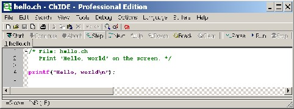
Any income generated from this book will go to the C-STEM fund directly to support the C-STEM program.
Copyright Oc
September, 2013 by Harry H. Cheng, All rights reserved. No part of this publication may be
reproduced or distributed in any form or by any means, or stored in a database or retrieval system, without the prior written consent of the author, including, but not limited to, in any network or other electronic storage or transmission, or broadcast for distance learning.

Table of Contents
Preface vii
1 Getting Started with the First Ch Program 1
1.1 | Introduction . . . . . . . . . . | . | . | . | . | . | . | . | . | . | . | . | . | . | . | . | . | . | . | . | . | . | . | . | . | . | . | . | . | . | . | . | . | . | 1 |
1.2 | Getting Started with ChIDE . . | . | . | . | . | . | . | . | . | . | . | . | . | . | . | . | . | . | . | . | . | . | . | . | . | . | . | . | . | . | . | . | . | . | 2 |
| 1.2.1 The First Ch Program | . | . | . | . | . | . | . | . | . | . | . | . | . | . | . | . | . | . | . | . | . | . | . | . | . | . | . | . | . | . | . | . | . | 2 |
| 1.2.2 Editing Programs . . . | . | . | . | . | . | . | . | . | . | . | . | . | . | . | . | . | . | . | . | . | . | . | . | . | . | . | . | . | . | . | . | . | . | 3 |
1.2.3 Running Programs and Stopping Their Execution . . . . . . . . . . . . . . . . . . . 4 |
1.2.4 | Output from Execution of Programs | . | . | . | . | . | . | . | . | . | . | . | . | . | . | . | . | . | . | . | . | . | . | . | . | . | . | 4 |
1.2.5 | Correcting Errors in Programs . . . | . | . | . | . | . | . | . | . | . | . | . | . | . | . | . | . | . | . | . | . | . | . | . | . | . | . | 5 |
1.2.6 | Browsing Files . . . . . . . . . . . | . | . | . | . | . | . | . | . | . | . | . | . | . | . | . | . | . | . | . | . | . | . | . | . | . | . | 5 |
1.3 Executing Programming Statements and Expressions in Ch . . . . . . . . . . . . . . . . . . 6 |
1.3.1 | Interactive Execution of Programming Statements and Expressions | | . | . | . | . | . | . | . | . | . | 8 |
1.3.2 | Repeating Commands in Ch Command Window . . . . . . . . . | . | . | . | . | . | . | . | . | . | . | 8 |
1.4 | Documentation about ChIDE and Ch Command Window | . | . | . | . | . | . | . | . | . | . | . | . | . | . | . | . | . | . | . | 9 |
1.5 | Chapter Summary . . . . . . . . . . . . . . . . . . . . . | . | . | . | . | . | . | . | . | . | . | . | . | . | . | . | . | . | . | . | 9 |
| 1.5.1 Programming Tips . . . . . . . . . . . . . . . . | . | . | . | . | . | . | . | . | . | . | . | . | . | . | . | . | . | . | . | 9 |
| 1.5.2 Terminology . . . . . . . . . . . . . . . . . . . | . | . | . | . | . | . | . | . | . | . | . | . | . | . | . | . | . | . | . | 9 |
1.6 | Exercises . . . . . . . . . . . . . . . . . . . . . . . . . | . | . | . | . | . | . | . | . | . | . | . | . | . | . | . | . | . | . | . | 10 |
2 | Variables, Data Types, and Input/Output | 11 |
| 2.1 Commonly Used Data Types and Declaration of Variables | | . | . | . | . | . | . | . | . | . | . | . | . | . | . | . | . | . | . | 11 |
| 2.1.1 Declaration of Variables and Integral Type int . . | . | . | . | . | . | . | . | . | . | . | . | . | . | . | . | . | . | . | . | 12 |
| 2.1.2 Initialization . . . . . . . . . . . . . . . . . . . | . | . | . | . | . | . | . | . | . | . | . | . | . | . | . | . | . | . | . | 13 |
| 2.1.3 Floating-Point Numbers and Type double . . . . | . | . | . | . | . | . | . | . | . | . | . | . | . | . | . | . | . | . | . | 14 |
| 2.1.4 Strings . . . . . . . . . . . . . . . . . . . . . . | . | . | . | . | . | . | . | . | . | . | . | . | . | . | . | . | . | . | . | 15 |
| 2.2 Formatted Input and Output . . . . . . . . . . . . . . . . | . | . | . | . | . | . | . | . | . | . | . | . | . | . | . | . | . | . | . | 16 |
| 2.2.1 The Output Function printf() . . . . . . . . . . | . | . | . | . | . | . | . | . | . | . | . | . | . | . | . | . | . | . | . | 17 |
| 2.2.2 The Input Function scanf() . . . . . . . . . . . . | . | . | . | . | . | . | . | . | . | . | . | . | . | . | . | . | . | . | . | 19 |
| 2.3 Structures of a Program for Solving Applied Problems . | . | . | . | . | . | . | . | . | . | . | . | . | . | . | . | . | . | . | . | 23 |
iii
2.4
2.5
2.6
3 Ope
3.1 Expressions . . . . . . . . . . . . . . . . . . . . . . . . . . . . . . . . . . . . . . . . . . . 33
3.2 Assignment Operator . . . . . . . . . . . . . . . . . . . . . . . . . . . . . . . . . . . . . . 34
3.3 Arithmetic Operators . . . . . . . . . . . . . . . . . . . . . . . . . . . . . . . . . . . . . . 34
3.4 Precedence and Associativity of Operators . . . . . . . . . . . . . . . . . . . . . . . . . . . 37
3.5 Exponential Expressions and Square Root . . . . . . . . . . . . . . . . . . . . . . . . . . . 40
3.6 Chapter Summary . . . . . . . . . . . . . . . . . . . . . . . . . . . . . . . . . . . . . . . . 42
3.6.1 Programming Tips . . . . . . . . . . . . . . . . . . . . . . . . . . . . . . . . . . . 42
3.6.2 Terminology . . . . . . . . . . . . . . . . . . . . . . . . . . . . . . . . . . . . . . 42
3.7 Exercises . . . . . . . . . . . . . . . . . . . . . . . . . . . . . . . . . . . . . . . . . . . . 42
4 Graphical Visualization 45
4.1 Plotting Points for Scatter Plots and Trend Lines . . . . . . . . . . . . . . . . . . . . . . . . 45
4.1.1 Copying and Printing Plots . . . . . . . . . . . . . . . . . . . . . . . . . . . . . . . 47
4.2 Plotting Lines Using Two Points . . . . . . . . . . . . . . . . . . . . . . . . . . . . . . . . 48
4.2.1 Obtaining the Coordinates for Points on a Plot . . . . . . . . . . . . . . . . . . . . 50
4.3 Plotting Rectangles, Squares, and Circles . . . . . . . . . . . . . . . . . . . . . . . . . . . 51
4.4 Setting Axis Ranges and Tick Marks in Plots . . . . . . . . . . . . . . . . . . . . . . . . . 52
4.5 Plotting Multiple Lines and Curves in a Single Graph . . . . . . . . . . . . . . . . . . . . . 53
4.6 Setting Line and Point Types . . . . . . . . . . . . . . . . . . . . . . . . . . . . . . . . . . 56
4.6.1 Setting Line Type, Width, and Color . . . . . . . . . . . . . . . . . . . . . . . . . . 56
4.6.2 Setting Point Type, Size, and Color . . . . . . . . . . . . . . . . . . . . . . . . . . 56
4.7 Plotting Texts and Arrows . . . . . . . . . . . . . . . . . . . . . . . . . . . . . . . . . . . 60
4.8 Saving Plot in a File . . . . . . . . . . . . . . . . . . . . . . . . . . . . . . . . . . . . . . . 61
4.9 Chapter Summary . . . . . . . . . . . . . . . . . . . . . . . . . . . . . . . . . . . . . . . . 63
4.9.1 Programming Tips . . . . . . . . . . . . . . . . . . . . . . . . . . . . . . . . . . . 63
4.9.2 Terminology . . . . . . . . . . . . . . . . . . . . . . . . . . . . . . . . . . . . . . 63
4.10 Exercises . . . . . . . . . . . . . . . . . . . . . . . . . . . . . . . . . . . . . . . . . . . . 64
5 Relations and Making Decisions 68
5.1 Relational Operators . . . . . . . . . . . . . . . . . . . . . . . . . . . . . . . . . . . . . . 68
5.2 | Selec | tion Statements for Decision Making | . | . | . | . | . | . | . | . | . | . | . | . | . | . | . | . | . | . | . | . | . | . | . | . | . | . | . | 71 |
| 5.2.1 | The if Statement . . . . . . . . . | . | . | . | . | . | . | . | . | . | . | . | . | . | . | . | . | . | . | . | . | . | . | . | . | . | . | . | 71 |
| 5.2.2 | The if-else Statement . . . . . . . | . | . | . | . | . | . | . | . | . | . | . | . | . | . | . | . | . | . | . | . | . | . | . | . | . | . | . | 72 |
5.2.3 Debugging Programs with Selection Statements Using ChIDE . . . . . . . . . . . . 73 |
5.2.4 Programming Style and Indenting Programs Using ChIDE . | . | . | . | . | . | . | . | . | . | . | . | . | . | 74 |
5.3 Logical Operators . . . . . . . . . . . . . . . . . . . . . . . . . . . | . | . | . | . | . | . | . | . | . | . | . | . | . | 74 |
5.4 The else if Selection Statement and Early Exit of a Program . . . . . | . | . | . | . | . | . | . | . | . | . | . | . | . | 79 |
iv
5.5 Chap | ter Summary . . . . . | . | . | . | . | . | . | . | . | . | . | . | . | . | . | . | . | . | . | . | . | . | . | . | . | . | . | . | . | . | . | . | . | . | . | . | 80 |
5.5.1 | Programming Tips | . | . | . | . | . | . | . | . | . | . | . | . | . | . | . | . | . | . | . | . | . | . | . | . | . | . | . | . | . | . | . | . | . | . | . | 80 |
5.5.2 | Terminology . . . | . | . | . | . | . | . | . | . | . | . | . | . | . | . | . | . | . | . | . | . | . | . | . | . | . | . | . | . | . | . | . | . | . | . | . | 84 |
5.6 Exercises . . . . . . . . . | . | . | . | . | . | . | . | . | . | . | . | . | . | . | . | . | . | . | . | . | . | . | . | . | . | . | . | . | . | . | . | . | . | . | . | 84 |
6 Loops for Repetition and Random Numbers 87
6.1 The while Loop . . . . . . . . . . . . . . . . . . . . . . . . . . . . . . . . . . . . . . . . . 87
6.2 Debugging Programs with Repetition Statements Using ChIDE . . . . . . . . . . . . . . . . 88
6.3 Increment and Decrement Operators . . . . . . . . . . . . . . . . . . . . . . . . . . . . . . 89
6.4 Control of Repetition . . . . . . . . . . . . . . . . . . . . . . . . . . . . . . . . . . . . . . 89
6.4.1 Counter-Controlled Repetition . . . . . . . . . . . . . . . . . . . . . . . . . . . . . 89
6.4.2 Sentinel-Controlled Repetition . . . . . . . . . . . . . . . . . . . . . . . . . . . . . 92
6.5 The for Loop . . . . . . . . . . . . . . . . . . . . . . . . . . . . . . . . . . . . . . . . . . 94
6.6 Formatting Output with a Specified Field Width . . . . . . . . . . . . . . . . . . . . . . . . 96
6.7 The break Statement . . . . . . . . . . . . . . . . . . . . . . . . . . . . . . . . . . . . . . 99
6.8 Random Number Generation . . . . . . . . . . . . . . . . . . . . . . . . . . . . . . . . . . 99
6.9 Chapter Summary . . . . . . . . . . . . . . . . . . . . . . . . . . . . . . . . . . . . . . . . 104
6.9.1 Programming Tips . . . . . . . . . . . . . . . . . . . . . . . . . . . . . . . . . . . 104
6.9.2 Terminology . . . . . . . . . . . . . . . . . . . . . . . . . . . . . . . . . . . . . . 105
6.10 Exercises . . . . . . . . . . . . . . . . . . . . . . . . . . . . . . . . . . . . . . . . . . . . 105
7 Modular Programming with Functions 112
7.1 Function Definitions . . . . . . . . . . . . . . . . . . . . . . . . . . . . . . . . . . . . . . 112
7.2 Debugging Programs with Functions in ChIDE . . . . . . . . . . . . . . . . . . . . . . . . 115
7.3 Functions for Mathematical Formulas . . . . . . . . . . . . . . . . . . . . . . . . . . . . . 117
7.4 Functions without Arguments or Return Values . . . . . . . . . . . . . . . . . . . . . . . . 118
7.5 Plotting Functions for Graphical Display . . . . . . . . . . . . . . . . . . . . . . . . . . . . 121
7.5.1 Plotting a Curve Using the Member Function func2D() . . . . . . . . . . . . . . . . 121
7.5.2 Zooming in to Find the Coordinates of a Point on a Plot . . . . . . . . . . . . . . . 122
7.5.3 Plotting Multiple Curves Using Different Functions in a Single Plot . . . . . . . . . 125
7.5.4 Plot Types and Filling an Area with Color . . . . . . . . . . . . . . . . . . . . . . . 127
7.6 Passing Arguments of Function by References . . . . . . . . . . . . . . . . . . . . . . . . . 131
7.6.1 ‡ Solving Quadratic Equations . . . . . . . . . . . . . . . . . . . . . . . . . . . . . 132
7.7 ‡Mathematical Functions in the Standard C Library . . . . . . . . . . . . . . . . . . . . . . 134
7.8 Chapter Summary . . . . . . . . . . . . . . . . . . . . . . . . . . . . . . . . . . . . . . . . 134
7.8.1 Programming Tips . . . . . . . . . . . . . . . . . . . . . . . . . . . . . . . . . . . 134
7.8.2 Terminology . . . . . . . . . . . . . . . . . . . . . . . . . . . . . . . . . . . . . . 136
7.9 Exercises . . . . . . . . . . . . . . . . . . . . . . . . . . . . . . . . . . . . . . . . . . . . 137
8 Arrays for Data Processing 142
8.1 Declaration, Reference, Input, and Output for Arrays . . . . . . . . . . . . . . . . . . . . . 142
8.2 How Arrays Are Stored in Memory . . . . . . . . . . . . . . . . . . . . . . . . . . . . . . 144
8.3 Initialization of Arrays . . . . . . . . . . . . . . . . . . . . . . . . . . . . . . . . . . . . . 145
8.4 Debugging Programs with Arrays . . . . . . . . . . . . . . . . . . . . . . . . . . . . . . . 146
8.5 Processing Data in Arrays . . . . . . . . . . . . . . . . . . . . . . . . . . . . . . . . . . . 147
8.6 Passing Arrays to Functions . . . . . . . . . . . . . . . . . . . . . . . . . . . . . . . . . . 151
8.7 Plotting Data in Arrays for Graphical Display . . . . . . . . . . . . . . . . . . . . . . . . . 153
8.7.1 Plotting a Curve Using the Member Function data2DCurve() . . . . . . . . . . . . 154
v
8.7.2 | Plotting Points for Scatter Plots and Trend Lines . . . . . . | . | . | . | . | . | . | . | . | . | . | . | . | . 155 |
8.7.3 | Plotting Multiple Curves in Different Arrays in a Single Plot | . | . | . | . | . | . | . | . | . | . | . | . | . 158 |
| 8.8 Chapter Summary . . . . . | . | . | . | . | . | . | . | . | . | . | . | . | . | . | . | . | . | . | . | . | . | . | . | . | . | . | . | . | . | . | . | . | . | . | . 160 |
| 8.8.1 Programming Tips | . | . | . | . | . | . | . | . | . | . | . | . | . | . | . | . | . | . | . | . | . | . | . | . | . | . | . | . | . | . | . | . | . | . | . 160 |
| 8.8.2 Terminology . . . | . | . | . | . | . | . | . | . | . | . | . | . | . | . | . | . | . | . | . | . | . | . | . | . | . | . | . | . | . | . | . | . | . | . | . 160 |
| 8.9 Exercises . . . . . . . . . | . | . | . | . | . | . | . | . | . | . | . | . | . | . | . | . | . | . | . | . | . | . | . | . | . | . | . | . | . | . | . | . | . | . | . 160 |
9 | Working with Data Files | | | | | | | | | | | | | | | | | | | | | | | | | | | | | | | | | | | 163 |
| 9.1 Writing Data Into Files . . | . | . | . | . | . | . | . | . | . | . | . | . | . | . | . | . | . | . | . | . | . | . | . | . | . | . | . | . | . | . | . | . | . | . | . 163 |
| 9.2 Reading Data From Files . | . | . | . | . | . | . | . | . | . | . | . | . | . | . | . | . | . | . | . | . | . | . | . | . | . | . | . | . | . | . | . | . | . | . | . 166 |
| 9.2.1 Using Functions feof() . . . . . . . . . | . | . | . | . | . | . | . | . | . | . | . | . | . | . | . | . | . | . | . | . | . | . | . | . 168 |
9.3 | Plotting Data in Data Files for Graphical Display | | . | . | . | . | . | . | . | . | . | . | . | . | . | . | . | . | . | . | . | . | . | . | . 170 |
9.4 | Chapter Summary . . . . . | . | . | . | . | . | . | . | . | . | . | . | . | . | . | . | . | . | . | . | . | . | . | . | . | . | . | . | . | . | . | . | . | . | . | . 170 |
| 9.4.1 Programming Tips | . | . | . | . | . | . | . | . | . | . | . | . | . | . | . | . | . | . | . | . | . | . | . | . | . | . | . | . | . | . | . | . | . | . | . 170 |
| 9.4.2 Terminology . . . | . | . | . | . | . | . | . | . | . | . | . | . | . | . | . | . | . | . | . | . | . | . | . | . | . | . | . | . | . | . | . | . | . | . | . 172 |
9.5 | Exercises . . . . . . . . . | . | . | . | . | . | . | . | . | . | . | . | . | . | . | . | . | . | . | . | . | . | . | . | . | . | . | . | . | . | . | . | . | . | . | . 172 |
10 Quick Animation 174
10.1 Introduction . . . . . . . . . . . . . . . . . . . . . . . . . . . . . . . . . . . . . . . . . . . 174
10.2 | The First Animation Program . . . . | . | . | . | . | . | . | . | . | . | . | . | . | . | . | . | . | . | . | . | . | . | . | . | . | . | . | . | . | . | . 175 |
10.3 | User Interface for QuickAnimation . | . | . | . | . | . | . | . | . | . | . | . | . | . | . | . | . | . | . | . | . | . | . | . | . | . | . | . | . | . | . 177 |
10.4 | Drawing Primitives . . . . . . . . . . . | . | . | . | . | . | . | . | . | . | . | . | . | . | . | . | . | . | . | . | . | . | . | . | . | . | . | . | . 177 |
10.5 | Adding Fixtures . . . . . . . . . . . . . | . | . | . | . | . | . | . | . | . | . | . | . | . | . | . | . | . | . | . | . | . | . | . | . | . | . | . | . 179 |
10.6 | Color and Filling . . . . . . . . . . . . | . | . | . | . | . | . | . | . | . | . | . | . | . | . | . | . | . | . | . | . | . | . | . | . | . | . | . | . 181 |
10.7 | Changing How the Animation Restarts . | . | . | . | . | . | . | . | . | . | . | . | . | . | . | . | . | . | . | . | . | . | . | . | . | . | . | . | . 182 |
10.8 | Changing Line Width and Line Style . . | . | . | . | . | . | . | . | . | . | . | . | . | . | . | . | . | . | . | . | . | . | . | . | . | . | . | . | . 183 |
10.9 | A Snapshot with Multiple Primitives . . | . | . | . | . | . | . | . | . | . | . | . | . | . | . | . | . | . | . | . | . | . | . | . | . | . | . | . | . 184 |
10.10Writing Ch Programs for Quick Animation . . . . . . . . . . . . . . . . . . . . . . . . . . 186 |
| 10.11Chapter Summary . . . | . | . | . | . | . | . | . | . | . | . | . | . | . | . | . | . | . | . | . | . | . | . | . | . | . | . | . | . | . | . | . | . | . | . | . | . | . 190 |
| 10.11.1 Programming T | ip | s | . | . | . | . | . | . | . | . | . | . | . | . | . | . | . | . | . | . | . | . | . | . | . | . | . | . | . | . | . | . | . | . | . | . | . 190 |
| 10.11.2 Terminology . | . | . | . | . | . | . | . | . | . | . | . | . | . | . | . | . | . | . | . | . | . | . | . | . | . | . | . | . | . | . | . | . | . | . | . | . | . 191 |
| 10.12Exercises . . . . . . . | . | . | . | . | . | . | . | . | . | . | . | . | . | . | . | . | . | . | . | . | . | . | . | . | . | . | . | . | . | . | . | . | . | . | . | . | . 191 |
A | Using Function Files in Ch | | | | | | | | | | | | | | | | | | | | | | | | | | | | | | | | | | | | | 194 |
B Quick References to Ch 196 |
B.1 | Reserved Keywords . . . | . | . | . | . | . | . | . | . | . | . | . | . | . | . | . | . | . | . | . | . | . | . | . | . | . | . | . | . | . | . | . | . | . | . | . | . 196 |
B.2 | Reserved Names . . . . | . | . | . | . | . | . | . | . | . | . | . | . | . | . | . | . | . | . | . | . | . | . | . | . | . | . | . | . | . | . | . | . | . | . | . | . 196 |
B.3 | Punctuators . . . . . . . | . | . | . | . | . | . | . | . | . | . | . | . | . | . | . | . | . | . | . | . | . | . | . | . | . | . | . | . | . | . | . | . | . | . | . | . 196 |
B.4 | Comments . . . . . . . . | . | . | . | . | . | . | . | . | . | . | . | . | . | . | . | . | . | . | . | . | . | . | . | . | . | . | . | . | . | . | . | . | . | . | . | . 196 |
B.5 | Preprocessing Directives | . | . | . | . | . | . | . | . | . | . | . | . | . | . | . | . | . | . | . | . | . | . | . | . | . | . | . | . | . | . | . | . | . | . | . | . 196 |
B.6 | Header Files . . . . . . . | . | . | . | . | . | . | . | . | . | . | . | . | . | . | . | . | . | . | . | . | . | . | . | . | . | . | . | . | . | . | . | . | . | . | . | . 197 |
B.7 | Data Types . . . . . . . | . | . | . | . | . | . | . | . | . | . | . | . | . | . | . | . | . | . | . | . | . | . | . | . | . | . | . | . | . | . | . | . | . | . | . | . 197 |
B.8 | Declaration of Variables | . | . | . | . | . | . | . | . | . | . | . | . | . | . | . | . | . | . | . | . | . | . | . | . | . | . | . | . | . | . | . | . | . | . | . | . 197 |
B.9 | Arrays . . . . . . . . . . | . | . | . | . | . | . | . | . | . | . | . | . | . | . | . | . | . | . | . | . | . | . | . | . | . | . | . | . | . | . | . | . | . | . | . | . 197 |
B.10 Declaration of Functions (Call by Value) . . . . . . . . . . . . . . . . . . . . . . . . . . . . 197 |
vi
B.11 Declaration of Functions (Call by Reference) . | . | . | . | . | . | . | . | . | . | . | . | . | . | . | . | . | . | . | . | . | . | . | . | . 198 |
B.12 Escape Characters and Special characters . . . | . | . | . | . | . | . | . | . | . | . | . | . | . | . | . | . | . | . | . | . | . | . | . | . 198 |
B.13 Operators . . . . . . . . . . . . . . . . . . . . | . | . | . | . | . | . | . | . | . | . | . | . | . | . | . | . | . | . | . | . | . | . | . | . 198 |
B.13.1 | Arithmetic Operators | . | . | . | . | . | . | . | . | . | . | . | . | . | . | . | . | . | . | . | . | . | . | . | . | . | . | . | . | . | . | . | . | . | . 198 |
B.13.2 | Modulus Operator . | . | . | . | . | . | . | . | . | . | . | . | . | . | . | . | . | . | . | . | . | . | . | . | . | . | . | . | . | . | . | . | . | . | . 198 |
B.13.3 | Relational Operators | . | . | . | . | . | . | . | . | . | . | . | . | . | . | . | . | . | . | . | . | . | . | . | . | . | . | . | . | . | . | . | . | . | . 198 |
B.13.4 | Logical Operators . . | . | . | . | . | . | . | . | . | . | . | . | . | . | . | . | . | . | . | . | . | . | . | . | . | . | . | . | . | . | . | . | . | . | . 198 |
B.13.5 Increment and Decrement Operators . | . | . | . | . | . | . | . | . | . | . | . | . | . | . | . | . | . | . | . | . | . | . | . | . | . 199 |
B.14 The if Selection Statements . . . . . . . . . . | . | . | . | . | . | . | . | . | . | . | . | . | . | . | . | . | . | . | . | . | . | . | . | . | . 199 |
B.15 The while and for Loops . . . . . . . . . . . | . | . | . | . | . | . | . | . | . | . | . | . | . | . | . | . | . | . | . | . | . | . | . | . | . 199 |
B.16 Input Function scanf() and Output Function printf() . . . . . . . . . . . . . . . . . . . . . 199 |
B.17 Input to and Output from Files . . . . . | . | . | . | . | . | . | . | . | . | . | . | . | . | . | . | . | . | . | . | . | . | . | . | . | . | . | . | . 199 |
B.18 Math Functions . . . . . . . . . . . . . | . | . | . | . | . | . | . | . | . | . | . | . | . | . | . | . | . | . | . | . | . | . | . | . | . | . | . | . 200 |
B.19 Random Number Generating Functions | . | . | . | . | . | . | . | . | . | . | . | . | . | . | . | . | . | . | . | . | . | . | . | . | . | . | . | . 200 |
B.20 Commands in a Ch Command Window | . | . | . | . | . | . | . | . | . | . | . | . | . | . | . | . | . | . | . | . | . | . | . | . | . | . | . | . 200 |
B.21 Member Functions of the Plotting Class CPlot . | . | . | . | . | . | . | . | . | . | . | . | . | . | . | . | . | . | . | . | . | . | . | . | . 200 |
B.22 Quick Animation . . . . . . . . . . . . . . . . | . | . | . | . | . | . | . | . | . | . | . | . | . | . | . | . | . | . | . | . | . | . | . | . 203 |
B.22.1 QuickAnimation Keywords . . . . . . | . | . | . | . | . | . | . | . | . | . | . | . | . | . | . | . | . | . | . | . | . | . | . | . 203 |
B.22.2 QuickAnimation Reserved Words . . . | . | . | . | . | . | . | . | . | . | . | . | . | . | . | . | . | . | . | . | . | . | . | . | . 203 |
C Glossary 204
Index 210
vii
PREFACE
Knowledge of computer programming is one of the most fundamental skills for today’s K-12 students. Writ- ing computer programs is essential to solving complex problems. Consequently, computer programming is becoming a necessary skill for many professions. C is one of the most popular computer programming languages. This manuscript is a gentle introduction to computer programming. It teaches absolute begin- ners the underlying working principles of computer programming using a user-friendly and pedagogically effective C/C++ interpreter Ch.
Prerequisites
The mathematical prerequisite for the manuscript is Pre-Algebra or concurrent enrollment, except for sec- tion 7.7 in Chapter 7 which requires a trigonometry background. No prior computer or programming experience is required.
Special Features
The primary goal of this manuscript is to teach beginners without any prior programming experience the underlying working principles of computer programming and problem solving in C. It is designed for a one-term or one-year course, depending on the course schedule and other additional topics such as robotics programming, an introduction to computer programming for students in middle and high schools as well as colleges. Towards these goals, it is written with the following salient features:
• Using a C/C++ interpreter Ch for teaching and learning. Ch is a user-friendly interactive C/C++ computing environment especially designed for absolute beginners to learn computer programming and problem solving with computers. As a complete C interpreter, Ch conforms to the C standard. C expressions, statements, functions, and programs can be executed in Ch interactively without com- piling and linking the code. It can be used for quick testing and trying difficult C features such as arrays, especially for classroom presentation and discussion sessions. ChIDE, a user-friendly Inte- grated Development Environment (IDE), can be used to execute functions and programs with detailed line-by-line traces. In this manuscript, many C code and statements are executed in the C/C++ inter- preter Ch interactively with output to illustrate numerous programming features and concepts. C has a reputation for being difficult to learn and even more difficult to master. Ch will relieve your learning burden and make your programming tasks more enjoyable. More reasons for using Ch to teach and learn C/C++ are described in (http://www.softintgeration.com/academic/WhyCh.html).
• Using a proven effective pedagogy. A single topic is presented in a section first and then reinforced and cross-referenced in other sections and chapters. The manuscript is organized cumulatively. Each chapter builds on information presented in the earlier chapters. A chapter itself is organized cumula- tively and each section uses information provided in the previous sections.
• Plotting for visualization. A picture is worth a thousand words. A plotting library is used for visual- ization and solving many practical problems in both the text and exercises. All plots including those in exercises in this manuscript were generated using simple functions in this plotting library.
• Multiple versions for example programs. Earlier example programs are gradually rewritten to make them more concise, efficient, powerful, useful, and user friendly. This way, students do not struggle with trying to understand new features and new programs at the same time.
viii
• Teaching and learning by examples. Through a disciplined approach, various features of C, pro- gramming style, modular programming, code reuse, and algorithm development for solving practical problems are illustrated by approximately 70 well-documented complete sample programs.
Organization of the Manuscript
The topics in the manuscript are carefully selected and organized for the best information flow for begin- ners to learn how to solve real-world problems in C with practical and realistic application examples. The manuscript is organized as follows:
Chapter 1 uses a simple C program to begin computer programming in Ch.
Chapter 2 discusses the basic elements of a computer programming language and most commonly used data types. It also presents the mechanisms for input and output.
Chapter 3 presents operators and expressions.
Chapter 4 describes graphical plotting for applications.
Chapter 5 relational operations and selection statements for making decisions.
Chapter 6 describes loops for repetition and algorithm development using flowcharts.
Chapter 7 covers function for procedural programming, code reuse, and modular programming.
Chapter 8 uses arrays for data processing.
Chapter 9 deals with file processing. It describes how to write data into files and read data from files.
Chapter 10 describes how to make quick animation using QuickAnimation. The last section uses Ch with a loop to generate complicated animations. This chapter can be presented after students have learned loops in Chapter 6 or functions in Chapter 7.
Appendix A describes how to create and use function files in Ch. Appendix B lists keywords and brief
Ch language references used in this book. Appendix C lists the glossary for terminologies used in the book.
In the beginning of each section, the Prerequisites, applicable Common Core Content Standards and California Career Technical Education (CTE) Model Curriculum Standards, and learning Objectives are listed. The end of each chapter contains a section Chapter Summary. Programs in the book showcase good programming practices. However, good programming styles and practices are further emphasized in the subsection Programming Tips. Bad programming styles and common programming errors are also described in this section. The subsection Terminology summarizes all terminologies and topics presented in the chapter.
Symbols and Notations Used in the Book

This book was typeset by the author using LATEX. Programs in the book are displayed with the light blue background and syntax highlighting as shown in the following line of the code.
printf("Hello, world!\n");

The output from programs are displayed with the grey background as shown in the following output.
Hello, world!
The interactive execution of programs is displayed with the dark blue background as shown in the following interactive execution.
Enter the weight in ounces.
4.5
The ice cream costs $2.11
ix
Special notes and important points are highlighted with the yellow background. Keywords such as int and double in C are in red color. Reserved words such as sqrt and printf are in pink color. The definition for a word is in green color.
Sections marked with the double dagger symbol ‘‡’ use Algebra I and Trigonometry concepts. They can
be skipped as they do not include prerequisite skills necessary for later chapters.
The dangerous bend symbol  indicates computations that may display incorrect results if they are not entered correctly.
indicates computations that may display incorrect results if they are not entered correctly.
The exercise symbol  indicates the location to pause for students to solve problems in the exercise section.
indicates the location to pause for students to solve problems in the exercise section.
A Note to Instructors
Depending on the teaching objectives and pace, not all chapters need to be covered. For example, for a four-week introduction to computer programming in a Technology course, only the first three chapters may be covered. For a semester course, only the first five chapters may be covered. For one semester or one year high school course on computer programming, additional topics such as robotics, Web programming, or hardware interface may be added. In this case, please contact the author for supplementary materials.
An instructor should use a computer and projector to make presentations in a classroom and run sample programs described in each section using ChIDE. We recommend that you adopt the dual programming teaching method as described in the next section for this curriculum. It is suggested that students complete all exercises in each section.
Dual Programming
It has been long recognized in introductory computer science courses that students working in pairs are more successful than students working independently. The most common and successful model for such collaborative work is Pair Programming. In this model the pair shares one computer with one student acting as the “driver” writing the code and using the computer, and the other partner becoming the “navigator”, checking the work of the driver and suggesting ways to complete the programming exercises. The partners regularly switch roles so that both share the responsibility for the work. While this might be an excellent model for college students there are some key features that would be problematic in a K-12 setting. In particular the student filling the role of the navigator is likely to become disengaged with the work and it is very easy for one student to dominate the partnership. Because of this it is recommended that a slightly different model called Dual programming be implemented.
Dual Programming is a collaborative learning technique pioneered by the UC Davis C-STEM Center and its K-12 partners. Using dual programming two students work together, each with their own computer to complete a programming assignment. Both partners must have completed an assignment before either one is allowed to move on to later exercises. As they are working, partners compare their source code, discuss the differences, and support each other in the debugging process.
By making these simple adjustments to the pair programming model, dual programming maximizes the amount of time that each student spends engaged with the computer. This in turn enhances students ownership of the work they complete as well as individual accountability. Together these elements make it more likely for each student to attain a higher level of content mastery, while at the same time maintaining the benefits of increased confidence from their partnership as well as improved work quality. In addition partners are not only seeing examples of another students code, but actively engaging in critiquing each others work.
In order to maximize the benefits it is recommended that students be placed into heterogeneous groups that can be dynamically adjusted. This allows groups to be modified should a particular partnership prove unsuccessful. Such groupings are beneficial to both partners as students of differing abilities are equally capable of recognizing troublesome syntax errors and provide an extra level of security to each others cod- ing process. Additionally, heterogeneous grouping provides a solid scaffolding structure for students who need such support. The necessary discussions that accompany this method develop both partners effective communication habits, a critical 21st century skill.
Dual programming has the ultimate effect of increasing student confidence, accuracy and understanding. Equally important, the ability for students to rely on each other to find and correct each others errors enables the teacher to focus their time on student teams that are struggling with the content.
Available Teaching Resources
To use this manuscript for teaching, instructors can contact the author to obtain related teaching materi- als, including the source code for all programs presented in this manuscript, PowerPoint slides for class- room presentation, and solutions for exercises. Students can download and install Ch Student Edition from http://www.softintegration.com in their own computers.
Acknowledgments
Many K-12 educators contributed to the development of this book. Spencer Krautkraemer, Chris Schles- selman, Joe Stymeist, Heidi Espindola, Francesca DeFazio, and Megan Schoellhamer provided me with the guidance and suggestions on the topic selection and organization of the book. Spencer Krautkraemer, Chris Schlesselman, Joe Stymeist, and Francesca DeFazio scrutinized the text and programs with countless sug- gestions. Their suggestions especially helped make the book more appealing to learners in K-12 schools. Joe Stymeist helped write the prologue titled Prerequisite, Common Core Content Standards, CTE Model Curriculum Standards, and Objective at the beginning of each section. Heidi Espindola and Ryan Mangan helped compile the glossary. Spencer Krautkraemer, Chris Schlesselman, and Joe Stymeist helped develop PowerPoint slides for classroom presentation. Finally, I would like to thank Clay Dagler for his contribution in helping develop Chapter 10.
I am grateful for all their support and contributions. However, I take the full responsibility for any errors.
Contacting the Author
I appreciate any criticisms, comments, identification of errors in the text or programs, and suggestions for improvement of this manuscript from both instructors and students. I can be reached over the Internet at
info@c − stem.ucdavis.edu
Harry H. Cheng
x

CHAPTER 1

Getting Started with the First Ch
Program
1.1 Introduction

The computer is one of the most important inventions of the 20th century. Computers have a profound impact on our lives and play an important role in our society. For example, computers control our transportation systems, electric power systems, telephone systems, student records in schools, bank accounts, etc. But, what is a computer and how does it work?
A computer is a machine that manipulates data based on a list of instructions called a program. A
computer can process information and perform mathematical calculations much faster than human beings. A program, installed on a computer, tells the computer when to obtain information, how to process information and perform calculations, and what output to produce. Instructions of a program are executed by a central processing unit (CPU), which is also commonly referred to as a microprocessor.
Robots, cellular phones, microwave ovens, and other electronic devices typically contain an on-board embedded computer. As an example, with a program running on a robot’s computer, the robot can make intelligent decisions and take actions based on external sensory information (what it sees, hears, and feels around itself). A computer or robot serves only the programmed commands. When a computer or robot does something smart, it is because a smart person has written a smart program to control the device.
C is the language of choice for writing programs for billions of embedded systems that interact with hardware. C and its variant, C++, are also the languages of choice for writing games, Web browsers, word processors, and most programs that run on your PC. This book teaches you how to write your own programs so that a computer or robot will do what you want it to do.
An interpreter is a program that executes programs written in a programming language directly. Ch is
a C/C++ interpreter invented by Harry H. Cheng. It is specially designed for the absolute beginner to learn computer programming. It can be conveniently used to execute C or C++ programs. In this manuscript, all programs will be executed using this C/C++ interpreter.
In this chapter, we will use a simple program to present some important and basic features of the com-
1.2. Getting Started with ChIDE
Chapter 1. Getting Started with the First Ch Program
puter programming language. Each statement of the sample programs will be explained. You will learn how to execute C programs, statements, and expressions in Ch interactively.
1.2 Getting Started with ChIDE

An Integrated Development Environment (IDE) can be used to develop computer programs. ChIDE is an IDE to develop C/Ch/C++ programs. ChIDE, as shown in Figure 1.1, can be easily launched by double clicking its icon on the desktop. A Ch command window can be conveniently launched by clicking the red-colored Ch icon on the desktop.
Figure 1.1: A program displayed in ChIDE.
1.2.1 The First Ch Program

Let’s get started with programming in Ch! We will write a simple program shown in Program 1.1.
/* File: hello.ch
Print ’Hello, world’ on the screen. */
printf("Hello, world\n");
Program 1.1: The first Ch program hello.ch.

This program will display the following output on the screen when it is executed:
Hello, world
To run the code in Program 1.1, the source code needs to be written first. Source code is plain text, which contains instructions of a program. If the text in Program 1.1 is typed in the editing pane in ChIDE, the program will appear colored due to syntax highlighting and with line numbers, as shown in Figure 1.2.
We will explain each line in Program 1.1 in detail. Contents that begin with /* and end with */ are comments. The symbol // can also be used inside a program to comment out a subsequent text at the end of a line. Comments are used to document a program to make the code more readable. When comments are
processed by Ch, they are ignored and no action is taken relating to the comments. The first two lines, listed below, in Program 1.1 are comments.
2
1.2. Getting Started with ChIDE
Chapter 1. Getting Started with the First Ch Program
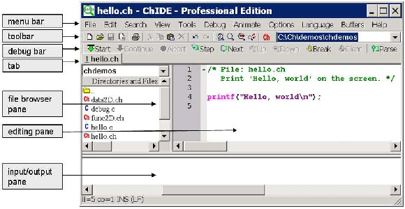
Figure 1.2: A layout and related terminologies in ChIDE.
/* File: hello.ch
Print ’Hello, world’ on the screen */

They document that the file name of the program is hello.ch and the purpose of the program is to print the message Hello, world on the screen.
A Ch program typically ends with “.ch”, which is called the file extension. A file name generally does not contain a space.
Function is the basic executable module in a program. Asking a function to perform its assigned tasks
is known as calling the function.

In the statement
printf("Hello, world\n");
The function printf() is used to display Hello, world on the screen. The symbol \n will be explained in section 1.3.
Each statement in a program must end with a semicolon. However, when a statement is entered in a Ch command window, the ending semicolon is optional as illustrated in the previous sections.
All programs presented in this manuscript are available in the distribution of the source code for this manuscript.
1.2.2 Editing Programs
Text editing in ChIDE works similarly to most Windows or Mac text editors, such as Word for creating documents.
As an example, open a new document by clicking the command File->New on the menu bar or the first icon on the toolbar that looks like a little piece of paper with a folded corner, as shown in Figure 1.2. Type the text in Program 1.1 in the editing pane in ChIDE. The program appears colored due to syntax
highlighting and with line numbers.
You can save the document as a file named hello.ch by the command File->Save As. Follow the instruction and type the file name hello.ch to save as a new program. You can also right click the
3
1.2. Getting Started with ChIDE
Chapter 1. Getting Started with the First Ch Program
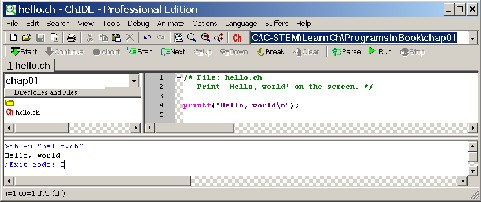
Figure 1.3: Running the program inside the editing pane in ChIDE and its output.
.
file name on the tab bar, located below the debug bar, and then select the command Save As to save the program.
1.2.3 Running Programs and Stopping Their Execution
Click Run on the toolbar, as shown in Figure 1.3, to execute the program hello.ch. This will cause the interpreter to read the code and provide an output on the bottom of the ChIDE window as shown in Figure
1.3. Pressing the function key F2 will also execute the program. If you are editing a program, pressing F2 will save the edited program first and then run the saved program.
If the command execution has failed or execution is taking too long to complete, then the
Stop command on the toolbar can be used to stop the program.
1.2.4 Output from Execution of Programs

The editing pane on the top is for writing and editing a program source file or any text file. The input/output pane is located below the editing pane, and is initially hidden. It can be made larger by dragging the divider between it and the editing pane. The output from the program is directed into the input/output pane when it is executed using the command Run, as shown in Figure 1.3. When the program hello.ch is executed,
the input/output pane will be made visible if it is not already visible and will display the following three
lines, as shown in Figure 1.3.
>ch -u "hello.ch" // use the command ch for Ch to execute hello.ch
Hello, world // the output from executing the program hello.ch
>Exit code: 0 // display the exit code for the program
An exit code of 0 indicates that the program has terminated successfully. If a failure had occurred during the execution of the program, the exit code would be -1.
The input/output pane can be opened and closed by the command View->Output Pane.  Do Exercises 2 and 3 on page 10.
Do Exercises 2 and 3 on page 10.
4
1.2. Getting Started with ChIDE
Chapter 1. Getting Started with the First Ch Program
1.2.5 Correcting Errors in Programs


ChIDE can identify errors that occur in C source code and provide helpful responses that aid the user in finding and correcting these errors. To see this, we will create an error in the program hello.ch by changing the line
printf("Hello, world\n");

to
printf("Hello, world\n";
Notice that in the second statement the closing parenthesis is missing. When the program is executed, the results should look like the input/output pane in Figure 1.4. The line with incorrect syntax in the editing pane and the corresponding error message in the input/output pane are highlighted with a yellow background.
Because the program fails to execute, the exit code −1 is displayed at the end of the input/output pane
as
>Exit code: -1
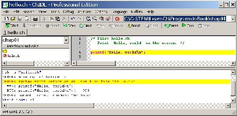
Figure 1.4: The error line in output from executing program hello.ch.
Errors in computer programs are called bugs. The process of finding and reducing the number of bugs is called debug or debugging. ChIDE is especially helpful for testing and debugging programs. It has a variety of tools that aid users with identifying and correcting errors, which will be discussed more thoroughly in section 2.4 in Chapter 2 and section 7.2 in Chapter 7.
 Do Exercise 4 on page 10.
Do Exercise 4 on page 10.
1.2.6 Browsing Files
All programs described in the book are available in a folder in C:\C-STEM for Windows, /opt/C-STEM for Mac OS X, /usr/local/C-STEM for Linux. If you use a computer in a laboratory, you may not have permission to write in this folder. You may copy these programs in your own folder.
In Windows, you can hover the cursor over the program name on the tab, the full path and program name will be displayed, as shown in Figure 1.5. This is useful to find out where the program is located when you open multiple programs.
5
Chapter 1. Getting Started with the First Ch Program
1.3. Executing Programming Statements and Expressions in Ch
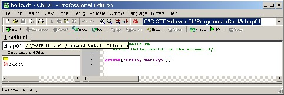
Figure 1.5: Displaying the full path of a program.
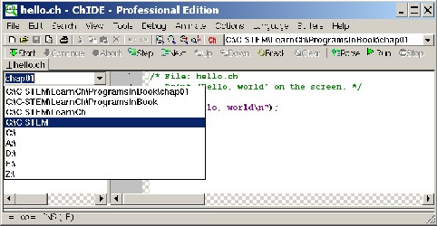
Figure 1.6: Displaying the parent directories of the current working directory.
Programs in the current working directory are displayed in the file browser pane, as shown in Figure 1.2. The current working directory is displayed at the end of the tool bar and also at the top of the file browser pane. The first entry under Directories and Files in the file browser pane is the parent directory of the current working directory. Clicking the arrow at the end of the current working directory in the file
browser pane, all parent directories of the current working directory are displayed as shown in Figure 1.6. Selecting a parent directory, its contents will be displayed in the file browser pane.
The history of current working directories can be displayed by clicking the arrow at the end of the tool bar as shown in Figure 1.7. Selecting a directory in the history of the current working directories, the selected directory will become the current working directory and its contents will be displayed in the file browser pane.

1.3 Executing Programming Statements and Expres-
sions in Ch
Ch can be used as a command shell or command window in which commands are processed.
A Ch command window can be conveniently launched by clicking the red-colored Ch icon on the
6
Chapter 1. Getting Started with the First Ch Program
1.3. Executing Programming Statements and Expressions in Ch
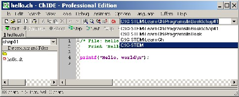
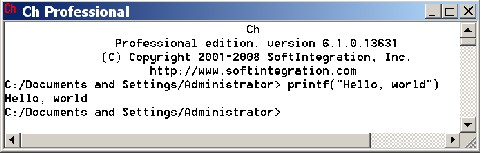
Figure 1.7: Displaying the history of current working directories.
Figure 1.8: A Ch command shell. desktop or on the toolbar of the ChIDE.
After a Ch shell is launched in Windows, by default, the screen prompt of the shell window becomes
C:/Documents and Settings/Administrator>
where C:/Documents and Settings/Administrator is the user’s home directory on the desk- top as shown in Figure 1.8. The colors of the text and background as well as the window size and font size of the shell window can be changed by right-clicking the Ch icon at the upper-left corner of the window, and select the Properties menu to make changes (Note that for Windows Vista and Windows 7, you need to run ChIDE with the administrative privilege to make such a change.) The displayed directory C:/Documents and Settings/Administrator is also called the current working directory. If the user is not the administrator, the account name Administrator will be changed to the appropriate user account name.

If you are using a version of Unix, like Mac OS X, the prompt may show:
/home/harry>
where /home/harry is the home directory for the user with the account name harry.
The prompt > indicates that the system is in a Ch shell and is ready to accept input from keyboard. If
you type in a command correctly, it will be executed successfully. Upon completion of the execution, the
system prompt > will appear again. If an error occurs during the execution of the program or expression, the Ch shell will print an error message to assist the user in solving the problem.
Unlike other command shells, C programs, functions, statements, and expressions can be readily exe- cuted in a Ch command shell. You can try utilizing different features of C/C++ quickly as shown in this section.
7
Chapter 1. Getting Started with the First Ch Program
1.3. Executing Programming Statements and Expressions in Ch
1.3.1 Interactive Execution of Programming Statements and Expressions

Any statements or expressions that you can use with C can also be typed into the Ch command shell directly. Any output from the statements will be displayed on the screen. For example typing the line
printf("Hello, world")
directly in the command window results in the following output.
C:/Documents and Settings/Administrator> printf("Hello, world") Hello, world
Note that the semicolon at the end of a statement in a C program is optional when executed in a Ch command shell. There is no semicolon in calling the function printf() in the above execution. For simplicity, only the prompt > that occurs at the end of the current working directory in a Ch command shell will be displayed in the remaining presentation.
The symbol \n used in the function printf() in Program 1.1 means a newline character. It instructs the computer to start writing on a new line, like the Enter key, which can be illustrated by
> printf("Hello, world\nWelcome to C!") Hello, world
Welcome to C!
After the newline character, the string Welcome to C! is displayed at the beginning of a new line on the screen.
 Do Exercises 5 and 6 on page 10.
Do Exercises 5 and 6 on page 10.
If a C expression is entered, it will be evaluated by Ch. The result will then be displayed on the screen. For example, if the expression 1+3*2 is typed, the output will be 7 as shown below:
> 1+2*3
7
Because any valid C expression can be evaluated in the Ch shell, Ch can be conveniently used as a calculator. The Ch shell follows the correct order of arithmetic operations on any expression.
 Do Exercise 7 on page 10.
Do Exercise 7 on page 10.
1.3.2 Repeating Commands in Ch Command Window
The most convenient way to repeat commands at the prompt is to use arrow keys on the keyboard. The previously typed commands can be retrieved by the up ’↑’ and down ’↓’ arrow keys for commands typed before and after the current command, respectively. The retrieved command can be modified by first moving the cursor to a position using the left ’←’ or right ’→’ arrow keys on the keyboard. Then, use the delete or backspace key to delete characters or type any characters to insert the characters for command line editing. After completing all desired alterations, press the Enter or Return key to display the new outcome.
For example, retrieve the previous command of 1+2*3 by using the up ’↑’ arrow key. Move the cursor to the position for ’2’, use the backspace key to delete the character ’+’, insert the character ’-’, press the Enter key to evaluate the expression 1 − 2 ∗ 3. You should get an output of −5.
 Do Exercise 8 on page 10.
Do Exercise 8 on page 10.
Throughout this textbook, many programming features will be presented by executing C statements and expressions in Ch interactively.
8
Chapter 1. Getting Started with the First Ch Program
1.4. Documentation about ChIDE and Ch Command Window

1.4 Documentation about ChIDE and Ch Command
Window
More information about running C and C++ programs in Ch using ChIDE can be obtained online by clicking Help on the menu bar. You can find a PDF file for ChIDE User Guide entitled “Getting Started with ChIDE and Ch Command Shell.”
1.5 Chapter Summary
1.5.1 Programming Tips
Good Programming Practice
1. Do not insert a space next to a parenthesis. For example, use
printf("Hello, World!\n");
instead of
printf( "Hello, World!\n" );
Common Programming Errors
1. Missing a semicolon at the end of a statement. For example,
printf("Hello, World!\n") // bad printf("Hello, World!\n"); // good
2. Missing one or both of the double quotes surrounding the format control string in a printf() function.
For example,
printf("Hello, World!); // bad printf("Hello, World!"); // good
1.5.2 Terminology

General Concepts
administrator | arguments | |
bugs | called function | calling |
calling function | Ch | character string |
current working directory | debug | debugging |
escape character | file extension | function |
| | home directory |
IDE | library | newline character |
reserved keywords | text editor | |
C | C++ | Ch |
central processing unit (CPU) | interpreter | microprocessor |
program | | |
9
1.6. Exercises
Chapter 1. Getting Started with the First Ch Program
Ch Reserved Words
\n
ChIDE Related Concepts
printf()
chide | Change Font Size | ChIDE |
debug command pane | debug pane | editing pane |
file browser pane | input/output pane | |
1.6 Exercises

1. If you have your own computer, install C/C++ interpreter Ch Student Edition for Windows from the companion
CD or download the latest version for different platforms from the Internet at http://www.softintegration.com.
2. Launch a Ch command window. In the Ch command window, type the command cd as shown below.
> cd
It will display your home directory. What’s your home directory? Create a folder named learnch in your home directory to keep C programs that you will develop. You may use other folder name and location that your instructor specifies.
3. Write a program welcome.ch to print
Hello, world. Welcome to Ch!
Use the command File->New or click the first menu on the toolbar in ChIDE to open a new edit buffer and enter your code for the program. The program calls the function printf() four times, one for each output line. Save your program as welcome.ch using the command File->Save As in the folder created in
Exercise 2. Execute the program in ChIDE by the command Run.
4. Modify the above program welcome.ch to introduce a bug by removing a closing parenthesis ’)’. Run the modified program in ChIDE by pressing the function key F2. Double click the displayed error message in the red color to find the corresponding line with the error. Run the program again by pressing the function key F2.
Press the function key F4 to find the line corresponding to the first error message. Then, fix the bug.
5. If you use Mac OS X or Linux, in a Ch command window, type
> ch -d
to copy the user start-up configuration file .chrc from CHHOME/config directory to your home directory, where CHHOME is the home directory for Ch, such as /usr/local/ch. This file contains some useful default settings.
6. Write a program welcome2.ch to print the same output as that from the program welcome.ch developed in Exercise 3. But, the program welcome2.c shall call the function printf() only once. Use the command File->New or click the first menu on the toolbar in ChIDE to open a new edit buffer and enter your code for the program. Save your code as the program welcome2.c and execute it in ChIDE.
7. Calculate the following mathematical expression in a Ch command window:
(a) 2*3 (b) (4+3*2)*3.14
(c) 2*3*7 (d) (4-3*2)*(2+3*2)
8. First, calculate the expression 2 + 3 ∗ 5 in a Ch command window. Then, retrieve the command and edit it to calculate the expression 2 + 4 ∗ 5.
10


CHAPTER 2

Variables, Data Types, and
Input/Output
In this chapter, how variables are used to solve problems with unknown values will be described. Declaration of variables is presented first. Commonly used data types are then described. Finally, the input to and output from a program are also presented.
2.1 Commonly Used Data Types and Declaration of

Variables
Prerequisite: None
Common Core Content Standards: L.6.6, RST.6-12.3, RST.6-12.4
CTE Model Curriculum Standards: Information Technology Pathway, D1.1, D2.1, D2.3
Objective: Identify the different kinds of commonly used data types in a C program and summarizes needs for these differences. Demonstrate the process of declaring and initializing variables before they are used.


Various data types can be used to represent different data or information in C programs. In this intro- ductory book, only the most commonly used data types, as shown in Table 2.1, will be described. The data types int, double, and string t are used to represent integers, floating-point numbers, and strings. Floating point numbers are used when a decimal is needed.
Variables are often used in solving problems with unknown values. Using variables to represent math- ematical notation makes a program easier to modify and read. Variables can be used inside a C program. However, a variable has to be declared and associated with a proper data type before it can be assigned a
Chapter 2. Variables, Data Types, and Input/Output
2.1. Commonly Used Data Types and Declaration of Variables
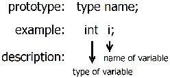
Figure 2.1: A general format for declaring a variable and an example.
value. In the subsequent sections, declaration and use of variables involving commonly used data types are explained.
Table 2.1: Commonly used data types and their usage.
Data Type | Usage | Examples |
int double string t | integers floating-point numbers strings | 12 123.4567 "abc123" |
2.1.1 Declaration of Variables and Integral Type int

An identifier is a sequence of lowercase and uppercase letters, digits, and underscores. Generally, a variable has to be declared before it can be used inside a program. As shown in Figure 2.1, a variable is declared by specifying its data type and identifier in the form
type name;
where type is one of the valid data types, such as int, double, or string t, and name is a valid identifier. For example, the statements
int i; /* declare variable i */
int num; /* declare variable num */
declare variables i and num of int type. In this case, int is a keyword as a declarator for an integer data type and i and num are identifiers as variable names.
Rules for creating identifiers will be outlined next. The difference between lowercase and uppercase letters is important. In other words, variables are case sensitive. The initial character of an identifier must not be a digit. A reserved word, such as int and return, cannnot be used as an identifier. To make the code more readable and portable, standard identifiers used for implementation of the C standard features can not be redefined by the user. For example, the identifier printf for the printing function name in the C standard input/output library shall not be redefined by the user. Table 2.2 shows some invalid identifiers for the user.
Multiple variables of the same type can be declared in a single statement by a list of identifiers, each separated by a comma, as shown below for two variables i and num of int type.
int i, num; // declare variables i and num
12
Chapter 2. Variables, Data Types, and Input/Output
2.1. Commonly Used Data Types and Declaration of Variables
Table 2.2: Examples of invalid identifiers. Invalid identifier Reason
int reserved word double reserved word for reserved word
2times starts with a digit integer# character # not allowed girl&boy character & not allowed class1+class2 character + not allowed Identifiers reserved for C implementation

printf standard function name
scanf standard function name
The symbol // comments out any subsequent text located on the same line.
For a software project, typically about 80 percent of the effort and cost are spent on the maintenance
(updating and modifying) of the program after the original development is finished. A program is often maintained by someone other than the original developers. Using meaningful and consistent identifiers for variable names makes a program easier to understand, develop, and maintain. A variable name typically uses lowercase letters. For example, to calculate the position of a robot in a small program, one may use the identifier s for position to be consistent with the symbol used in the mathematical formula. For a large program with many variable names, one may use the identifier pos or position for the position. For a

variable declared with a short name, a comment can be added to make the code more readable. A function name, such as printf, typically contains more than four characters to make the meaning of the function more descriptive at the point where the function is called. If an identifier contains two or multiple words, one can use an underscore to separate words or use an uppercase letter for the first character of the subsequent words. For example, to distinguish the position of a train from that of a bus, one may use posTrain, pos train,

trainPos, or train pos for the position of a train.
The names i, j, k, m, n, num, and count are used in common practice for variables of int type.
2.1.2 Initialization
Assigning a value to a declared variable for the first time is called initializing the variable. You can initialize a variable in the same statement in which it is declared or you can initialize it in a separate statement. For example:
int j = 2; // declare j int type and initialize it with 2
and
int j; // declare j int type
j = 2; // initialize j with 2
accomplish the same goal of declaring an integer j and initializing it to 2.  Do Exercises 1 and 2 on page 31.
Do Exercises 1 and 2 on page 31.
13
Chapter 2. Variables, Data Types, and Input/Output
2.1. Commonly Used Data Types and Declaration of Variables
2.1.3 Floating-Point Numbers and Type double

Floating point numbers are what we call real non-integer numbers in programming. For our purposes, a floating point number means a decimal. These numbers can be stored in a variable of double type in C. For example;
double x=10.5;
double y;
y = 3+x;
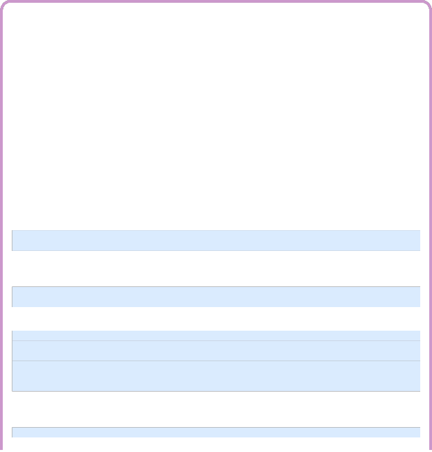
The names x, y, z, length, width, radius, and speed are used in common practice for variables of double type to hold decimal numbers.
Application: Calculating the Position of a Robot
Problem Statement:
A robot travels at the constant speed of 0.25 meter per second. The initial position of the robot is 1.25 meters. The position of this robot can be expressed as follows:
p = 0.25t + 1.25
where p is measured in meters from the origin and t is time in seconds. Therefore, if you want to know where the robot is at any time, you will take the number of seconds and multiply that by 0.25. Take that result and add 1.25 to the position of the robot before it started moving. The position p(t) is a function of time t. Let’s write a program to calculate the position when t is 10 seconds.
We will examine the source code for this program step-by-step. We will need some variables in the program to represent variables in the equation p = 0.25t + 1.25. Since the values for position and time can be decimals we will declare them both as double types.
double p; /* position */
double t; /* time */
We also know that we are looking at the problem when 10 seconds have passed, or t = 10, so we can initialize the variable t in the program.
t = 10.0; /* we use 10.0 to highlight that t is a double,
10 could also be used */
Our program now looks like:
/* declare variables */ double p; /* position */ double t; /* time */
/* initialize variable t */
t = 10.0;
To make our program actually do something, we need to tell it how to calculate the position p, but this is the purpose of the equation:
p = 0.25*t + 1.25;
14
Chapter 2. Variables, Data Types, and Input/Output
2.1. Commonly Used Data Types and Declaration of Variables
Note that C does not recognize proximity as multiplication. The multiplication operator ’*’ is needed for a multiplication operation.
Finally, we want to show the answer to the user by calling the function printf() similar to how we used it in hello.ch in Program 1.1. There are some additional features needed for this printf() function that will be explained in section 2.2.1. For now, accept that "%lf" is replaced by the value
of the variable p.
printf("Position = %lf meters\n", p);
Thus, the final source code will look like Program 2.1. The printed output from running the program will be as follows.
Position = 3.750000 meters
/* File: posvar.ch
Calculate the position of a moving vehicle
using variables */
/* declare variables */ double p; /* position */ double t; /* time */
/* initialize variable t */
t = 10.0;
/* calculate the position */
p = 0.25*t + 1.25;
/* display output */
printf("Position = %lf meters\n", p);
Program 2.1: Calculating the position using variables.
In Program 2.1, for simplicity and consistency with the mathematical notations, the variables p and t represent the position and time, respectively. Comments for these variables are added in the declaration of these variables to make their intended use more clear. For a large program, we could
declare variables with the names pos or position and time to make them more descriptive. Using variables to represent mathematical notations make a program easier to modify and more readable. It is especially helpful for solving problems with complicated logic.
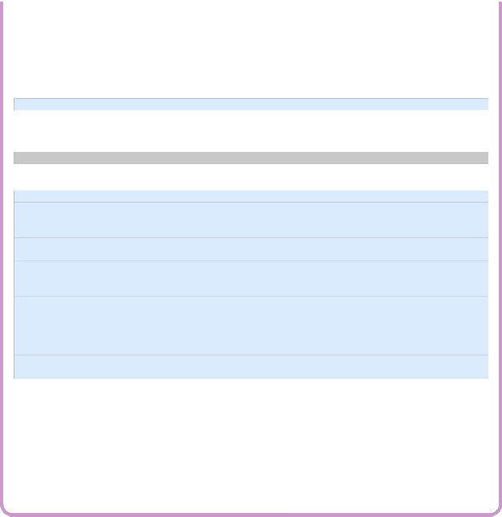

Do Exercise 3 on page 31.
2.1.4 Strings
A character string or string is a sequence of characters enclosed in double quotes, as in "xyz". A double quote " in a string shall be represented by the escape sequence \" as shown in Table 2.3. Strings are very useful. For example, the first argument in the function printf() is a string.

String type in Ch can be declared with the keyword string t in the following format:
string_t s; // declare s as a string s = "abc123";
15
2.2. Formatted Input and Output
Chapter 2. Variables, Data Types, and Input/Output
Table 2.3: The commonly used character escape code.
Escape code Translation

\a (alert) Produce an audible beep or visible alert.
\n (newline) Move the active position to the initial position of the next line.
\\ (backslash) Produce a backslash character \.
\" (double quote) Produce a double quote character ".
In the above code, the variable s is declared a string type and assigned the value of the string "abc123".
A string can also be initialized with a string value in the following form.
string_t name="John"; // initialize name with "John"
Escape Characters
Some special characters and particular behaviors of the output device are impossible to be typed directly in a source program. C uses escape characters, which are escape codes beginning with the backslash character
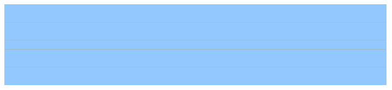
‘\’, to represent these characters and behaviors. The most commonly used character escape code are listed in Table 2.3. You can try these escape characters in a Ch command window as follows:
> printf("\a") // alarm ’\a’
> printf("abcd\nefg") // newline ’\n’
abcd
efg
> printf("abcd\"efg") // double quote ’\"’
abcd"efg
> printf("abcd\\efg") // backslash ’\\’
abcd\efg
2.2 Formatted Input and Output

Prerequisite: Understanding of variable types
Common Core Content Standards: L.6.6, RST.6-12.3, RST.6-12.4
CTE Model Curriculum Standards: Information Technology Pathway, D1.1, D2.1, D2.2
Objective: Chooses the prober C statements that allow formatted input and output to/from standard devices.
The input/output, or I/O, refers to the communication between a computer program and input/output devices. The inputs are the data received by the program. The outputs are the data produced by the pro- gram. In the previous section, we used the output function printf() to display the output from the program hello.ch, as shown in Figure 1.3, and the program posvar.ch in Program 2.1. In this section, we will learn more about the output function printf() as well as the input function scanf().
16
2.2. Formatted Input and Output
Chapter 2. Variables, Data Types, and Input/Output
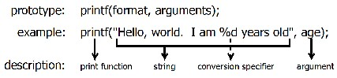
Figure 2.2: A format for using the function printf() and an example.
2.2.1 The Output Function printf()

The function printf() can be used to print text and data to the computer screen. A general form of the function printf() and a sample application are shown in Figure 2.2. The format in the first argument is a string. This format string can contain an object called a conversion specifier, such as "%d" and "%lf". A conversion specifier tells the program to replace that object with the value of the expression of specific type that follows the string. The expression can be a constant or variable. For instance, in Program 2.1 the line
printf("Position = %lf meters\n", p);
contains the conversion specifier "%lf" which is replaced with the value of variable p when the program is run. The printed output thus becomes:
Position = 3.750000 meters
Table 2.4 lists the conversion specifiers we will use along with the data type they represent. The conver- sion specifier "%d" is used to print an integer number or the value of a variable of int type. The conversion specifier "%lf" is used to print a decimal number or the value of a variable of double type. The conversion specifier "%s" is used to print a string.
Table 2.4: Conversion specifiers for the functions printf() and scanf().
Data Type | Format |
int double string t | "%d" "%lf" "%s" |

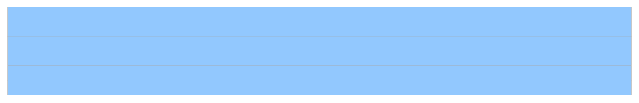
Examples below print an integer, decimal, and string.
> printf("%d", 10) // integer
10
> printf("%lf", 12.345) // decimal
12.345000
> printf("%s", "This is a string") // string
This is a string
The conversion specifier "%lf" prints out a decimal with six digits after the decimal point.
Using the wrong conversion specifier will give an incorrect result. For example, using "%d" for the
decimal number 12.345 and "%lf" for the integer 10 will give incorrect results as shown below.
> printf("%d", 12.345) | // | use %d for decimal |
-687194767 | // | incorrect result |
> printf("%lf", 10) | // | use %lf for integer |
0.000000 | // | incorrect result |
17
2.2. Formatted Input and Output
Chapter 2. Variables, Data Types, and Input/Output
In the examples below, values of variables of int, double, and string t types are printed by the function
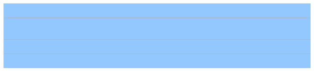
printf().
> int i = 12
> printf("i is %d", i)
i is 12
> double f = 12.345
> printf("f is %lf", f)
f is 12.345000
> string_t name = "John"
> printf("name is %s", name)
name is John
Multiple Conversion Specifiers
You can use more than one conversion specifier to print more than one value in a single printing statement. Each conversion specifier corresponds to an argument. The first conversion specifier corresponds to the first number following the string. the second conversion specifier for the second number following the string, and so forth. For example, one integer and one decimal number are printed in a single statement below:
> printf("integer is %d, decimal number is %lf", 10, 12.345)
integer is 10, decimal number is 12.345000
The first conversion specifier "%d" in the format string corresponds to the first number 10. The second conversion specifier "%lf" is for the second number 12.345.
Precision of Decimal Numbers
As pointed out before, by default, the conversion specifier "%lf" prints out a decimal number with six digits after the decimal point. When a decimal number is used to represent currency, we want to have two digits after the decimal point for cents. We can accomplish this by specifying the precision of the output. The precision of a decimal number specifies the number of digits after the decimal point. The precision typically takes the form of a period (.) followed by an integer. For example, the conversion specifier "%.2lf" specifies the precision with two digits after the decimal point, as shown below.
> printf("%.2lf", 12.1234)
12.12
> printf("%.2lf", 12.5678)
12.57
The number after the specified amount is rounded to the nearest value. For example, the floating-point number 12.1234 is printed as 12.12 with the precision value of 2, whereas 12.5678 is printed as 12.57.
Application: Calculating the Cost for Buying the Lemonade
Problem Statement:
The sale price of lemonade is $1.29 per cup. Write a program to calculate the cost of buying 3 cups of lemonade.
In Windows, a program listed under the Windows explorer can also be dragged and dropped on to the ChIDE, which will open the program in the editing pane. You can open the file posvar.ch by dragging and dropping it on to the ChIDE first. Then copy the file posvar.ch in Program 2.2 to create a new program lemonade.ch by the command File->Save As. Finally modify the program, as shown in Program 2.2, to calculate the cost for buying lemonade.
18
2.2. Formatted Input and Output
Chapter 2. Variables, Data Types, and Input/Output
/* File: lemonade.ch
Calculate the cost for 3 cups of lemonade.
The lemonade is sold by the cup. $1.39 per cup. */
/* declare variable cups for number of cups */
int cups;
/* declare variables price and cost */
double price, cost;
/* initialize cups and price */
cups = 3; // number of cups
price = 1.29; // $1.29 per cup
/* calculate the cost*/
cost = price * cups;
/* display the cost as output */
printf("%d cups of lemonade cost $%.2lf \n", cups, cost);
Program 2.2: Calculating the cost for lemonade.
The math formula to calculate the cost of buying the lemonade at $1.29 per cup is
cost = price ∗ cups cost = 1.29 ∗ cups
Because we sell the lemonade by the cup, the variable cups can be declared as the int type. The
other variables need to be declared as the double for decimal numbers. The code fragment below in
Program 2.5 declares three variables cups, price, and cost first. It then assigns the numbers 3 and 1.29 to the variables cups and price, respectively. Finally, it calculates the cost.
int cups; // number of cups double price; // price per cup double cost; // cost of the sale cups = 3; // number of cups price = 1.29; // price for each cup cost = price * cups; // cost is calculated
Both cups and cost are displayed using the following statement with the function printf().
printf("%d cups of lemonade cost $%.2lf \n", cups, cost);
The conversion specifier "%.2lf" is used to print the cost to the nearest cent, two digits after the decimal point. The output of Program 2.2 is as follows:
3 cups of lemonade cost $3.87
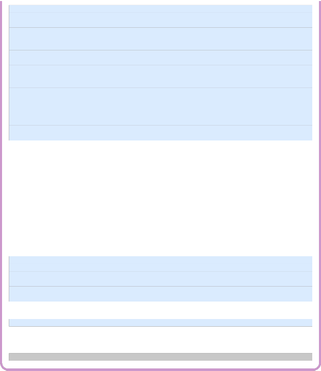

Do Exercise 4 on page 31
2.2.2 The Input Function scanf()
The input function scanf() is used to input data from the keyboard so that the same program can be used to solve the same problems with different data. The conversion specifiers for the function scanf() are the same
19
2.2. Formatted Input and Output
Chapter 2. Variables, Data Types, and Input/Output
for the function printf() in Table 2.4. The conversion specifier "%d" can be used in the function scanf() in the form of
scanf("%d", &n);
for a variable n of the int type. The other conversion specifiers can be used for variables of other data types accordingly. For example, the statement
scanf("%lf", &x);
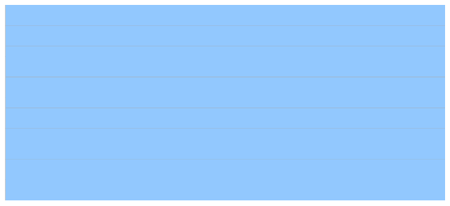
can be used to accept the user’s input of a decimal and store it in the variable x of the double type. Since a variable of double type can also be used to store an integer. The user can also input an integer for the above input statement.
> int n
> double x
> string_t name
> scanf("%d", &i) // accept an integer and store it in n
10
> i
10
> scanf("%lf", &x) // accept a decimal and store it in x
15.6
> x
15.6000
> scanf("%lf", &x) // accept an integer and store it in x
15
> x
15.0000
> scanf("%s", &name) // accept a string and store it in name
John
> name
John
The symbol ‘&’ is called the address operator. It tells the computer to get the address of the variable in the program. This has the effect of telling the computer to store the user input in that variable. This is why each call for the function scanf() has the address operator in front of the variable that will be used to store the input.
Multiple Conversion Specifiers

Like for the function printf(), the format string for the function scanf() can also contain multiple conversion specifiers to obtain the user input for multiple arguments by calling the function only once. For example, the code below let the user input two numbers and store them in variables x and y of double type.
double x, y; // declare variables x and y scanf("%lf%lf", &x, &y); // input two numbers into x and y
Application: Calculating the Area of Rectangles
Problem Statement:
The area of a rectangle of length l and width w, as shown in Figure 2.3, is given by the formula
a = l ∗ w
20
2.2. Formatted Input and Output
Chapter 2. Variables, Data Types, and Input/Output
(a) Find the area in meters interactively with the length and width from the user input in a Ch command window. (b) Write a program rectanglearea.ch to calculate the area of a rectangle with the length and width from the user input by calling the function scanf() only once. Test your code with 2.5 meters for l and 3 meters for w.
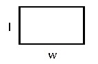
Figure 2.3: A rectangle with length l and width w.
Interactive execution of the commands in a Ch command window is shown below.
> double l, w
> printf("Please input the length and width of a rectangle")
Please input the length and width of a rectangle
> scanf("%lf%lf", &l, &w)
2.5 3
> printf("The area of the rectangle is %lf square meters", l*w) The area of the rectangle is 7.500000 square meters

The statement
scanf("%lf%lf", &l, &w);
accepts the user’s input for length and width of a rectangle, and stores them into two variables l and
w of double type.
/* File: rectanglearea.ch
Calculate the area of a rectangle by calling scanf() only once. */
double l, w, area; /* length, width, and area */
printf("Please input the length and width of a rectangle in meters\n");
scanf("%lf%lf", &l, &w);
/* calculate the area */
area = l*w;
/* display the result */
printf("The area of the rectangle is %lf square meters\n", area);
Program 2.3: Calculating the area of a rectangle with the length and width from the user input by calling the function scanf() only once.
Most commands in a Ch command window can be placed in the program rectanglearea.ch as shown in Program 2.3. For a rectangle of length 2.5 meters and width 3 meters, a sample interactive execution of the program rectanglearea.ch should appear as follows:
Please input the length and width of a rectangle in meters
21
2.2. Formatted Input and Output
Chapter 2. Variables, Data Types, and Input/Output
2.5 3
The area of the rectangle is 7.500000 square meters
In this execution, the values 2.5 and 3 for the length and width of a rectangle are entered from the user. Note that a space is included between them. The output indicates that the area is 7.5 square meters.
 Do Exercises 5 and 6 on page 31.
Do Exercises 5 and 6 on page 31.
Application: Greeting the User
Problem Statement:
Write a program greeting.ch to greeting the user.
/* File: greeting.ch
Greet the user to computing */
/* variable name can hold up to 32 characters */
string_t name; // declare name as a string
/* get the user input */
printf("What’s your name?\n");
scanf("%s", &name); // accept the user’s input of a string
/* program output */
printf("Hello %s\n", name);
printf("Welcome to the wonderful computing world.\n");
printf("Enjoy your computing!\n");
Program 2.4: Greeting the user.
The program greeting.ch in Program 2.4 illustrates how strings are used in a program inter- actively. The statement
string_t name; // declare name as a string
declares the variable name as a string. The statement
scanf("%s", &name); // accept the user’s input of a string
uses the conversion specifier "%s" to accept a user’s input for a name. The same conversion specifier is used in the following output statement.
printf("Hello %s\n", name);
A sample interactive execution of the program greeting.ch appears as follows:
What’s your name? John
Hello John
Welcome to the wonderful computing world.
Enjoy your computing!
In this execution, the string John for the name is entered after the prompt What’s your name.
22
Chapter 2. Variables, Data Types, and Input/Output
2.3. Structures of a Program for Solving Applied Problems

Do Exercise 7 on page 31.
2.3 Structures of a Program for Solving Applied
Problems
Prerequisite: Understanding variable types
Common Core Content Standards: L.6.6, RST.6-12.4
CTE Model Curriculum Standards: Information Technology Pathway, D1.1, D1.3, D1.4, D2.1, D2.2
Objective: Identify the four sections that make up the structure of a Ch program.

As shown in programs in the previous section, the structure of a program for solving applied problems typically consists of the following four sections:

Declaration Variables are given types (double, int, or string t)
Initialization Variables are given values Processing Calculation using variables Termination Final output
Variables are first declared. They are then initialized or assigned values from the user input. Next, they are used for data processing and computation. Finally, in the termination phase, the result will be printed. The concept of the program structure can be further illustrated by the following application example.
Application: A Lemonade Shop with Sales Tax
Problem Statement:
Write a program for a Lemonade Shop to process the sale of lemonade. The sale price for lemonade is $1.29 per cup. The sales tax is 8.25 percent.
If the number of cups of lemonade is known, we can calculate the total cost by the math formulas as follows:
price = 1.29 // $1.29/cup
taxrate = 0.0825 // 8.25% (8.25 percent) sales tax
subtotal = price * cups // cost before tax tax = taxrate * subtotal // sales tax
total = subtotal + tax // total cost with tax
The 8.25 percent sales tax is changed to a decimal 0.0825 before multiplying with the subtotal to find the tax amount. With the above algebraic equations, Program 2.5 can be used to process the purchase of lemonade.
23
Chapter 2. Variables, Data Types, and Input/Output
2.3. Structures of a Program for Solving Applied Problems
/* File: lemonade2.ch
Calculate the cost with sales tax for a Lemonade Shop */
/* declare variables */
int cups;
double price, taxrate, subtotal, tax, total;
/* fixed price and tax rate */
price = 1.29; // $1.29 per cup
taxrate = 0.0825; // 8.25% (8.25 percent) sales tax
/* get the user input for the value of the variable cups */
/* ’%%’ will print out one ’%’ */
printf("Welcome to Mary’s Lemonade Shop\n");
printf("We sell lemonade by the cup, $1.29 per cup with 8.25%% sales tax.\n");
printf("Please enter the number of cups.\n");
scanf("%d", &cups);
/* process the order */
subtotal = price * cups; // cost before tax
tax = taxrate * subtotal; // sales tax
total = subtotal + tax; // total cost with tax
/* display the cost as output */ printf("Subtotal: $%.2lf\n", subtotal); printf(" Tax: $%.2lf\n", tax); printf(" Total: $%.2lf\n", total); printf("Thank you.\n");
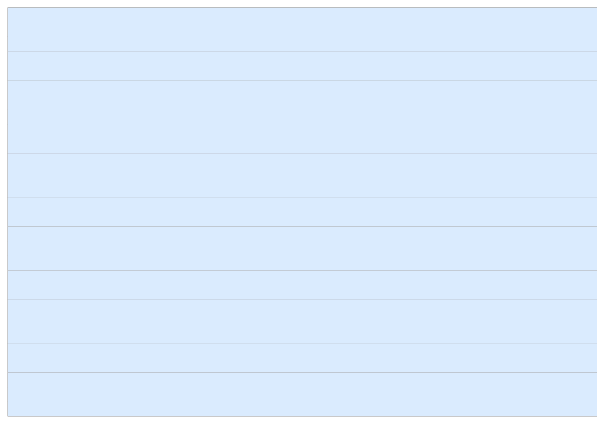
Program 2.5: Using the function scanf() to process an order of purchase with sales tax.
Declaraton: The program declares one variable cups of int type and five variables price, taxrate, subtotal, tax, and total of double type.
Initialization: When the program is executed, it will initialize the variables price and taxrate
by the statements
price = 1.29; // $1.29/cup
taxrate = 0.0825; // 8.25% (8.25 percent) sales tax
Then, the program will first display
Welcome to Mary’s Lemonade Shop
We sell lemonade the by the cup, $1.29 per cup with 8.25% sales tax.
Please enter the number of cups.
The conversion specifier "%%" can be used to print out a single character ’%’. This conversion specifier is used in the following statement in Program 2.5.
printf("We sell lemonade the by the cup, $1.29 per cup with 8.25%% sales tax.\n");
The user then enters the number of cups of the lemonade to be purchased. Next, the value is assigned to the variable cups by the function scanf().
Processing: First, the subtotal cost is calculated by multiplying the number of cups with the price
1.29. The sales tax is then calculated as 8.25% of the subtotal. Next, these two costs are added together as the total cost of the transaction.
24
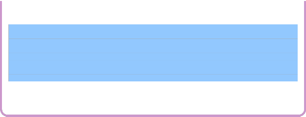
2.4. Debugging Programs in ChIDE
Chapter 2. Variables, Data Types, and Input/Output
Termination: Finally, all these break-down costs are displayed as the output. An interactive execution of Program 2.5 is shown below:
Welcome to Mary’s Lemonade Shop
We sell lemonade by the cup, $1.29 per cup with 8.25% sales tax.
Please enter the number of cups.
3
Subtotal: $3.87
Tax: $0.32
Total: $4.19
Thank you.
In this execution, the value 3 for the number of cups of lemonade is entered at the prompt.
Program 2.5 can be extended to handle a purchase order when the Lemonade Shop offers a dis-
count for the sale of lemonade, as described in an exercise for this chapter.
2.3.1 Copying Contents in a Program to Create a New Program in ChIDE
Unlike a calculator, an existing Ch program can be copied to a new file. This newly created file can be modified to become a new program. This process of creating a new program can save a lot of typing. There are many different ways to copy programs (namely files). In ChIDE, we can copy the contents of a program to create a new program conveniently. Below are the step-by-step instructions for copying the contents of a program to create a new program in ChIDE. It copies the file lemonade2.ch in Program 2.5 to a new program yogurt.ch.
Copying the Program lemonade2.ch to Create a New Program yogurt.ch
1. Open the file lemonade2.ch in Program 2.5 in the folder C:\C-STEM\LearnCh for Windows,
/opt/C-STEM for Mac OS X, /usr/local/C-STEM for Linux in the file broswer pane as shown
in Figure 1.6.
2. Select all the contents of this program by clicking the command Edit->Select All or holding the left button of the mouse and dragging the mouse to select the contents to be copied.
3. Click the right button to bring up the menu and click the Copy command on the menu to copy the selected contents into the buffer. Or use Ctrl+C for a shortcut for copying.
4. Open a new document by clicking the first icon on the toolbar that looks like a little piece of paper
with a folded corner, as shown in Figure 1.2.
5. Move the cursor to the editing page, click the right button to bring up the menu, and click the Paste command on the menu to paste the contents in the buffer to the opened document. Or use Ctrl+V for a shortcut for pasting.
6. Save this document as a new program yogurt.ch. You can then solve the problem using the pro- gram yogurt.ch as described in Exercise 8 on page 31.
 Do Exercises 8 and 9 on page 31.
Do Exercises 8 and 9 on page 31.
2.4 Debugging Programs in ChIDE

Prerequisite: Understanding variable types and program structure
25
2.4. Debugging Programs in ChIDE
Chapter 2. Variables, Data Types, and Input/Output
Common Core Content Standards: L.6.6, RST.6-12.3, RST.6-12.4
CTE Model Curriculum Standards: Information Technology Pathway, D1.3, D1.4, D2.1, D2.2, D4.1
Objective: Demonstrate how to use debugging tools to find and fix errors in a computer program.

Nobody can write a perfect article, especially a lengthy one, without going through many rounds of editing. Similarly, nobody can write perfect code on the first try, especially for a complicated program. A large part of programming is finding and fixing errors. The process of fixing errors will stimulate your brain. You will also learn critical thinking and reasoning. In addition, executing a program line-by-line in the debug mode described in this section will help you understand how programs are executed.
There are two kinds of errors in a program: syntax error and runtime error. A syntax error refers to an
error in the syntax of code. A syntax error can be detected by a compiler or interpreter, when the code is processed, as shown in Figure ??. Multiple error messages may be generated for one syntax error. In this case, the first error message is the most relevant to fixing the error. A syntax error in a program is relatively easy to fix after you have learned a programming language.
A runtime error occurs during the execution of a program. For example, dividing an integer by zero is
a runtime error. Runtime errors are harder to find than syntax errors because they only occur under certain conditions. For example, when a runtime error occurs, your Web browser or computer might be frozen.
Another error is the algorithmic error or logic error, which cannot be detected by a compiler or in-
terpreter. For example, you might, by mistake, have typed in a wrong value or formula in an equation for calculation. As a result, the output from the program execution is incorrect or is not what you would expect. If a program has either a runtime or logic error, the program has a bug. The process of finding and fixing bugs is called debugging. Debugging, especially for a large program, is more difficult than fixing syntax errors . It requires patience and experience. Sometimes it takes a long time to fix a bug.
A debugger is a tool for debugging programs. To fix a bug in a small program, you can step through the program line-by-line using a debugger. At each step, you can examine the values of all variables and expressions, or even change values of variables. To fix a bug in a large program, you need to isolate the problem by setting breakpoints. Once the program execution hits a breakpoint, you can examine and change the values of variables at that point and execute the program line-by-line.
ChIDE can be used not only to edit and execute programs, but also as a debugger. As described in section 1.2.2 in Chapter 1, ChIDE has four panes: the editing pane, debug pane, debug command pane, and input/output pane, as shown in Figure 2.4. The menus labeled Start to Clear on the debug bar in
Figure 2.4 are debug commands.
2.4.1 Executing Programs in Debug Mode
The user can execute the program line-by-line either using the command Step or Next. For simple state- ments, the command Step is the same as Next. However, they are different when a function call is executed, which will be described in section 7.2 in Chapter 7. During debugging, the command Continue can be invoked to continue the execution of the program until it hits a breakpoint or until the program ends.
The program may not be edited when it is being executed and debugged. Otherwise, the message
Warning: Any changes made to the file during debugging will not be reflected in the current debugging session.}
will be displayed in a popup window. However, when a program has finished its execution, it can be edited.
26
2.4. Debugging Programs in ChIDE
Chapter 2. Variables, Data Types, and Input/Output
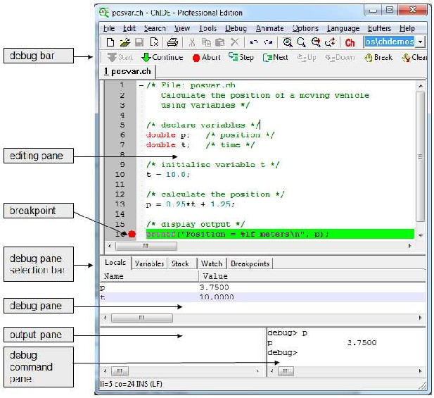
Figure 2.4: Debugging posvar.ch in Program 2.1 showing values for all variables in the program in
ChIDE.
27
2.4. Debugging Programs in ChIDE
Chapter 2. Variables, Data Types, and Input/Output
If the program execution has failed and is taking too long to complete, then the command Abort can be used to stop the program.
You should now open the program posvar.ch in Program 2.1 in ChIDE. While you read the next sections, you can then run it in debug mode.
2.4.2 Monitoring Local Variables and Their Values in the Debug Pane
When a program is executed line-by-line by the commands Step or Next, the values of variables in the current stack can be examined in the debug pane by clicking the menu Locals on the debug pane selection bar. When control of the program execution is inside a function, the command Locals displays the values of local variables and arguments of the function. When control of the program execution is not in a function of a Ch script, command Variables displays the values of global variables of the program. Functions and global variables will be described in Chapters 7. As shown in Figure 2.4, when program posvar.ch, is executed at the highlighted line 16 (displayed in the green color on the screen), local variables p and t, and their values 3.7500 and 8.0000, respectively, are displayed in the debug pane.
2.4.3 Changing Values of Variables in the Debug Command Pane
Many debug commands in the debug command pane are available during the debugging of a program. A
prompt
debug>
inside the debug command pane indicates that the debugger is ready to accept debug commands. Type the command help, and it will display all available commands. Details using the debug features in ChIDE can be found online by clicking Help on the menu bar.
One of the most important features of debug commands in the debug command pane is to obtain and modify values for variables of the debugged program at runtime. One can also just type an expression as a debug command. The expression will be displayed on the left, and its value displayed on the right.
Example When program posvar.ch is stopped at line 16, as shown in Figure 2.4, the debug command pane will be able to accept debug commands and expressions. You can obtain the values of expressions using the variables p and t. You can also change the values of these variables. The
interactive session inside the debug command pane is shown below.
debug> p
p 3.7500 // the original value 3.75 for p
debug> 2*p
2*p 7.5000 // the expression 2*p
debug> p = 30.0 // p is changed to 30 p = 30.0 30.0000
debug> p
p 30.0000 // its new value displayed
In these debug commands, the original value 3.75 for the variable p is displayed first. The expression
2*p is evaluated. Then, p is changed to 30. Finally, its new value is displayed. At this point, if the program execution is continued by one of the commands Continue, Step, or Next on the debug
28
2.5. Chapter Summary
Chapter 2. Variables, Data Types, and Input/Output
bar, the variable p has the value 30.
 Do Exercise 10 on page 32.
Do Exercise 10 on page 32.
2.5 Chapter Summary
2.5.1 Programming Tips
Good Programming Practice
1. Separate the declaration statements from the executable statements with a blank line.
2. Use meaningful variable names for self-documentation and readability. For example,
double position, speed;
3. To make the code more readable, use lowercase letters for a simple variable name. For a variable name with multiple words, use capital letter for the second and/or third words. For example,
double posTrain, posSportsCar, posSportsCar2;
4. Display a prompt first using the function printf() when the program is requesting data from the user using the function scanf(). For example,
printf("Please input a number\n");
scanf("%d", &n);
Common Programming Errors
1. Variable names beginning with a capital letter or with all capital letters. For example,
double Position, SPEED; // bad double position, speed; // good
2. Missing the semi-colon at the end of a statement. For example,
a = b + c // bad
a = b + c; // good
3. Forget the symbol % in a conversion specification in the format control string in the function printf()
or scanf().
4. Use the conversion specifier "%lf", instead of "%d", to output from or input into a variable int type.
For example,
int n;
printf("n = %lf\n", n);
scanf("%lf", &n); // bad
scanf("%d", &n); // good
29
2.5. Chapter Summary
Chapter 2. Variables, Data Types, and Input/Output
5. Use the conversion specifier "%d", instead of "%lf", to output from or input into a variable double
type. For example,
double x;
printf("x = %d\n", n);
scanf("%d", &x); // bad
scanf("%lf", &x); // good
6. Forget to precede a variable with an ampersand for the function scanf(). For example,
int num;
scanf("%d", num); // bad
scanf("%d", &num); // good
7. Add an extra "\n" in the format string for the function scanf(). For example,
int num;
scanf("%d\n", &num); // bad
scanf("%d", &num); // good
2.5.2 Terminology
General Concepts
algorithmic error
constant debugger
debugging declaration editing pane
escape characters field width floating-point numbers identifiers initialization
keywords logic error operators precision processing punctuators runtime error string syntax error termination
Ch Reserved Words
\" \a | \n | \\ |
int string t | double | scanf() |

ChIDE Related Concepts
breakpoint | debug bar | debug command pane |
debug commands | Debug Commands->Abort | Debug Commands>Break |
Debug Commands->Clear | Debug Commands->Continue | Debug Commands->Next |
Debug Commands->Start | Debug Commands->Step | Debug Console Window |
Debug Pane->Breakpoints | Debug Pane->Locals | debug pane selection bar |
30
2.6. Exercises
Chapter 2. Variables, Data Types, and Input/Output
2.6 Exercises

1. Some poor choices for program identifiers are shown below. What makes them poor choices? (a) double (b) 1zero (c) 0zero (d) ABC (e) abc#input (f) abc,def
2. State whether the following statement is true or false. If false, explain why.
All variables in C must be declared before they are used.
3. One mile equals 1.609 kilometers. Write a program mile2kmeter.ch to convert 8 miles into kilometers.
Display the result on the screen. The math formula for converting miles to kilometers is as follows:
kilometer = 1.609 * mile
4. A video rental shop charges $3.99 for renting a movie. Write a program rental.ch to calculate the cost for renting three movies. The math formulas for calculating the cost for movie rentals are as follows:
num = 3
price = 3.99
cost = num*price
5. Find the error(s) in each of the following program segments. Explain how each error can be corrected.
(a) string_t name;
scanf("%s", name);
(b) double x; scanf("%d", &x); printf("%d", x);
(c) int n; scanf("%lf", &d); printf("%lf", d);
6. One mile equals 1.609 kilometers. Write a program mile2kmeter2.ch to take the user input distance in miles and convert it to kilometers. The program accepts the user input for miles from the keyboard and displays the result on the screen. Check your program with the value 38 miles.
7. Write a program inspire.ch to inspire your fellow students to be successful in their future career. When the program is executed, it shall have the following conversation. The contents inside a pair of bracket [ ] are from the user at the prompt. The contents inside a pair of braces { } are replacement of the input from the user.
What is your name? [John]
Hello {John},
I enjoy computing, what type of hobbies do you like?
[Robotics]
{Robotics} sounds really fun.
What would you like to do in the future?
[scientist]
You should definitely try and be a {scientist}.
Good Luck!
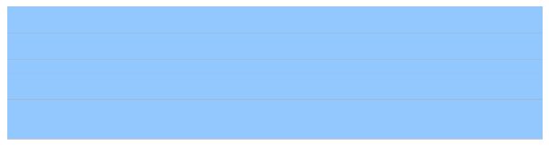
8. Write a program yogurt.ch for a Yogurt Shop to process the sale of frozen yogurt. The price for frozen yogurt is $0.39 per ounce. The sales tax is 8.25 percent. The math formulas for calculating the cost for frozen yogurt are as follows:
subtotal = 0.39*weight tax = 0.0825*subtotal total = subtotal+tax
31
2.6. Exercises
Chapter 2. Variables, Data Types, and Input/Output
9. Write a program icecream.ch for an Ice Cream Shop to process the sale of ice cream. The price for ice cream is $0.47 per ounce. Compute the cost and apply a 10% discount. The sales tax is 8.5 percent of the adjusted subtotal cost. The math formulas for calculating the total cost for ice cream are as follows:
subtotal = 0.47*weight discount = 0.1*subtotal adjustedSubtotal = subtotal-discount tax = 0.085*adjustedSubtotal
total = adjustedSubtotal+tax
10. A company pays its employees at the rate of $25 per hour worked and withholds 30% of the gross pay for federal and state income tax. Write a program payment.ch to calculate the gross pay, deducted tax, and net pay of an employee based on the hours worked as the user user input. The math formulas for calculating the
payment are as follows:
grosspay = 25*hours tax = 0.3*grosspay netpay = grosspay-tax
Execute the program in debug mode.
32


CHAPTER 3

Operators and Expressions
C is commonly used for solving applied problems with numerical computation. A numerical expression may consist of many operations. In C, an operator is a symbol or group of symbols that can be used for calculations. For example, + and * are familiar operators representing addition and multiplication. The variables and numbers used with the operator are called operands. For example, in the expression i+2, i and 2 are the operands and + is the addition operator. In this chapter, some concepts related to operators and expressions are introduced first. More operators are then described in the subsequent sections.
3.1 Expressions

An expression consists of a valid sequence of operators and operands that specifies how to compute a value. Some valid expressions in C are listed in Table 3.1. An integral expression produces a result in an integer type. For example, the expression (3 ∗ 5 + i) with i declared as int type is an integral expression. Operators and operands in the expression 3 ∗ 5 + i are shown in Figure 3.1.
A floating-point expression produces a result in a floating-point type. For example, 3.3+ 4.5 is a floating-point expression of double type. A constant expression contains only constant values.
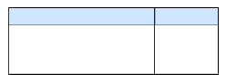
Table 3.1: Types of expressions. Expression Type Example
integral expression 3 ∗ 5 + i floating point expression 3.3 ∗ 4.5 constant expression 3 ∗ 5 + 2
3.2. Assignment Operator
Chapter 3. Operators and Expressions
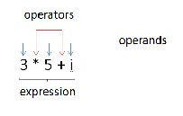
Figure 3.1: Operators and operands in the expression 3 ∗ 5 + i.
3.2 Assignment Operator

Prerequisite: Understanding variable types and program structure
Common Core Content Standards: L.6.6, RST.6-12.3, RST.6-12.4
CTE Model Curriculum Standards: Information Technology Pathway, D1.1, D1.3, D1.4, D2.1, D2.2, D4.1
Objective: Develop computer code to declare and assign values to variables in a C program.

Sometimes it is useful to change the value of a variable after it has been initialized. For this, we use the assignment operator ’=’.
When a floating-point number is assigned to an integer variable, the fractional part will be discarded as
shown below.
> int i
> double d = 10.123 // d is 10.123
> i = d // i becomes 10
10
> i = 10.789 // i becomes 10
10
3.3 Arithmetic Operators
Prerequisite: Understanding variable types and program structure
Common Core Content Standards: L.6.6, RST.6-12.3, RST.6-12.4
CTE Model Curriculum Standards: Information Technology Pathway, D1.1, D1.3, D1.4, D2.1, D2.2, D4.1
Objective: Develop computer code to apply arithmetic operators to accomplish addition, subtraction, mul- tiplication, division, and modulus operations in a Ch program.

34
3.3. Arithmetic Operators
Chapter 3. Operators and Expressions
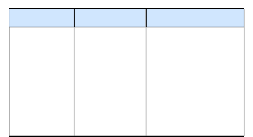
Table 3.2: Arithmetic operations.
operator | operation | description |
- | -x | negation |
+ | x + y | addition |
- | x - y | subtraction |
* / | x * y x / y | multiplication division |
% | i % j | modulus |
Arithmetic operations involve negation (making negative), addition, subtraction, multiplication, and division as shown in Table 3.2. For the negation operation (-), the data type of the result is the same as the data type of the operand. The sign of a number changes with the use of the negation operator. the addition

(+), subtraction (-), multiplication (*), and division (/) operations work as you would expect them to.
Note that even for multiplication of a variable with a constant such as 5*i, the multiplication op- erator ’*’ is still needed. In addition, subtraction, multiplication, and division operations, if both operands are integer, the result is an integer. If one of operands is decimal, the result is a decimal. When dividing two
integers, the remainder is dropped, which results in a possible loss of data. Unless the result of a division operation is a whole number, to get the correct numerical result, one of the numbers must be a decimal.
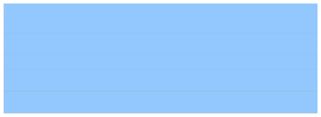
Examples of arithmetic operations are shown below.
> int i = 10, j=5
> 5*i+2 // all integers
52
> 8 - 3.5 // integer and decimal, result is decimal
4.5000
> 2*3
6
< 19/5 // remainder 4 of 19/5 is lost
3
> 19.0/5 // numerator is a decimal
3.800
> 19/5.0 // denominator is a decimal
3.800
> j/i // 5/10 becomes 0
0
The ’%’ is known as the modulus operator and returns the remainder of a division operation. For the expression i%j, the remainder is zero when i can be divided by j exactly. An example of the modular operation is shown below.
< 19/5 // remainder 4 of 19/5 is lost
3
> 19%5 // get remainder 4 of 19/5
4
This result is found from dividing 19 by 5, which gives you 3, with a remainder of 4. The modulus operator
(%) will display the remainder of 4. Additional examples are given in the table below.
35
3.3. Arithmetic Operators
Chapter 3. Operators and Expressions
expression result
0%3 0
1%3 1
2%3 2
3%3 0
4%3 1
5%3 2
6%3 0
The modulus operation can be used to find if an integer is odd or even number, which is useful for many applications. An even number is a multiple of two. Any multiple of two leaves a remainder of zero when divided by 2. Therefore, if n is an odd number, the remainder of the integer divided by 2, n%2, is 1.
Otherwise, n%2 is 0.
The modulus operator (%) can only be used with integer operands. All other operators can be applied to
operands of arithmetic type which consists of integer and floating-point types.
 Do Exercises 1, 2, and 3 on page 42.
Do Exercises 1, 2, and 3 on page 42.
Application: Calculating the Average of Three Numbers
Problem Statement:
Write a program average.ch to calculate the average of three numbers input from the user.
The program average.ch in Program 3.1 illustrates the usage of the arithmetic operations. It calculates the average of three numbers stored in the variables num1, num2, and num3 entered by the user by the statement.
average = (num1+num2+num3)/3;
36
3.4. Precedence and Associativity of Operators
Chapter 3. Operators and Expressions
/* File: average.ch
Calculate the average of three numbers */
/* declare variables */
double num1, num2, num3, /* three numbers */
average; /* average */
/* enter the user input */
printf("Welcome to the Average Calculator\n");
printf("Please enter a number\n");
scanf("%lf", &num1);
printf("Please enter another number\n");
scanf("%lf", &num2);
printf("Please enter one more number\n");
scanf("%lf", &num3);
/* calculate the average */
average = (num1+num2+num3)/3;
/* display output */
printf("The average is %lf\n", average);
Program 3.1: Calculating the average of three numbers.
An interactive execution of Program 3.1 to calculate the average of three numbers 12, 14.5, and
10.1 is shown below:
Welcome to the Average Calculator
Please enter a number
12
Please enter another number
14.5
Please enter one more number
10.1
The average is 12.200000
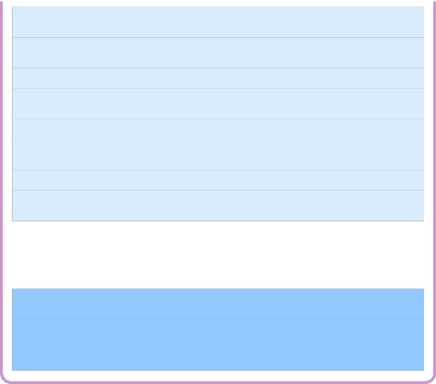

Do Exercises 4 and 5 on page 43.
3.4 Precedence and Associativity of Operators

Prerequisite: Understanding variable types, program structure, and arithmetic operators
Common Core Content Standards: L.6.6, RST.6-12.3, RST.6-12.4
CTE Model Curriculum Standards: Information Technology Pathway, D1.1, D1.3, D1.4, D2.1, D2.2, D4.1
Objective: Understand the order of operations as it pertains to mathematical operators.

Assignment operator and arithmetic operators are summarized in Table 3.3. C uses an order of oper-
37
3.4. Precedence and Associativity of Operators
Chapter 3. Operators and Expressions
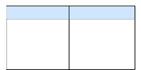
Table 3.3: Precedence and associativity of arithmetic, negation, and assignment operators
Operators Associativity
- (negation) right to left
* / % left to right
+ - left to right
= right to left
ations similar to what we use in math. The order is referred to as precedence and it determines which
operation will be executed first in an expression. For the familiar math operators like ’+’, ’-’, ’*’,
and ’/’ the precedence is identical to the order of operations in math. For example, in the expression
2+3*4, 3*4 will be performed first to get 12 and then 2 will be added to get 14. This is because ’*’ has a higher precedence than ’+’. Parenthesis fill the same roll in C as in math, therefore an expression inside
parenthesis is always performed before the ones outside of them. C has many other operators besides these.
Table 3.3 lists the commonly used operators in order of precedence. An operator at the higher level has higher precedence than operators at the lower level. Operators at the same level have the same precedence.
When two operators have the same precedence, like ’+’ and ’-’, C has a second way, called associa- tivity, to determine which should be performed first. Table 3.3 lists the associativity of the operators in C. In the case of ’+’ and ’-’ associativity reads the operators from left to right. For example, in the expression
7-2+6, 7-2 is done first to get 5 because of the first operator on the left. Then 5+6 is added to get 11. Most operators are left to right associative like in this example.
Complicated Expressions
For complicated expressions parentheses ’()’ are used to tell the computer which operations to per- form first. They can also be used to make an expression more readable. For example, for the expression
2 + 3 ∗ (4 + 1), the addition operation inside the parenthesis (4 + 1) will be evaluated first with the result of 2 + 3 ∗ 5. Then, the multiplication 3 ∗ 5 will be carried out since the multiplication operation has higher
precedence than the addition operation. Finally, the addition 2 + 15 wtih the result 17 will be performed. The result can be verified in a Ch command window as shown below.
> 2+3*(4+1)
17
As another example, the math formula
can be programmed in C as follows.
y = (5-x)/2+2*x-4;
y = 5 − x
2
+ 2x − 4
We need to put (5 - x) into parentheses so that C recognizes that the whole expression 5-x is divided by 2. Without the parentheses, C will read 5-x/2 as only x being divided by 2.
We could also write the expression as
y = (5-x)/2+(2*x)-4;
with the extra parentheses around 2*x to make it very clear that 2 will multiply by x before it is added. Note: In complicated expressions like 2*(1/2+(3.0-5)) it is very easy to overlook division operations that will yield an incorrect result. In this example, 1/2 will be calculated as 0 instead of 0.5.
 Do Exercises 6, 7, and 8 on page 43.
Do Exercises 6, 7, and 8 on page 43.
38
3.4. Precedence and Associativity of Operators
Chapter 3. Operators and Expressions
Use the Macro M PI for π

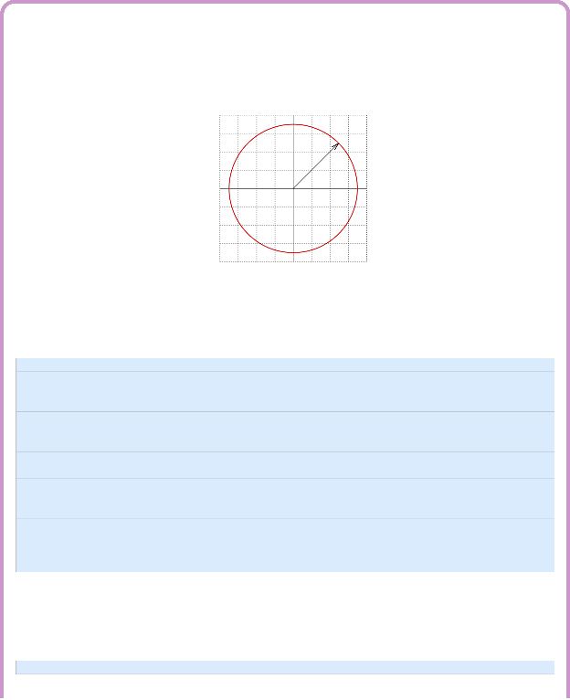
A macro is a symbol or name that represents a predefined value. The macro M PI for π is usually defined in the header file math.h.
Application: Calculating the Area of a Circle
Program 3.2 calculates the area of a circle as shown in Figure 3.2. The radius r of a circle in meters is entered by the user.
4
3
2
r
1
0
-1
-2
-3
-4
-4 -3 -2 -1 0 1 2 3 4
x
Figure 3.2: A cirlce with the radius r.
/* File: circle.ch
Calculate the area of a circle */
#include <math.h> /* for macro M_PI */
/* declare variables */
double r, area;
printf("Enter the radius of a circle in meters:\n");
scanf("%lf", &r);
/* calculate the area */
area = M_PI*r*r;
/* display the result */
printf("The area of the circle is %lf square meters\n", area);
Program 3.2: Calculating the area of a circle.
In a program, a line that starts with a # has a special meaning, which depends on the symbol following it. The line
#include <math.h>
39
3.5. Exponential Expressions and Square Root
Chapter 3. Operators and Expressions
instructs Ch to include the contents of the header file math.h in the program. The contents made available via #include is called a header or header file. The header file math.h contains the definition for the macro M PI for π. An interactive execution of Program 3.2 is shown below:
Enter the radius of a circle in meters:
3.5
The area of the circle is 38.484510 mˆ2


Do Exercise 9 on page 43.
3.5 Exponential Expressions and Square Root

Prerequisite: Understanding variable types, program structure, and arithmetic operators
Common Core Content Standards: L.6.6, RST.6-12.3, RST.6-12.4
CTE Model Curriculum Standards: Information Technology Pathway, D1.1, D1.3, D1.4, D2.1, D2.2, D4.1
Objective: Use predefined functions to compute exponential or square root values.


There is no exponential operator in C. The mathematical function pow(x,y) with two arguments can be used to calculate the exponential expression xy . For example, the exponential expression 103 can be evaluated by
> pow(10,3)
1000.0000
Note that the result of the function pow() is a decimal even if its arguments are all integer values. Multipli- cations take less time for C to process than the function pow(). Therefore, multiplications are usually used to evaluate an exponential expression when the exponent in the exponential expression is a small value, such as x2 or x3. This is important for computer programs that take a long time to finish.
The commonly used math expression √x for the square root of x can be calculated by the math function
sqrt(x). This math function takes one argument x and returns a value of double type for the square root of x. For example,
> sqrt(2)
1.4142
> sqrt(3.0)
1.7321
A program using the math function pow() or sqrt() needs to include the header file math.h.
Application: Calculating the Length of a Right Triangle
Problem Statement:
For the right triangle shown in Figure 3.3, c is the length of the hypotenuse. a and b are
40
3.5. Exponential Expressions and Square Root
Chapter 3. Operators and Expressions
the lengths of the two legs. Based on the Pythagorean theorem, they are related by the formula
c2 = a2 + b2 (3.1)
If the lengths of two legs are 3 and 5 meters, calculate the length of the hypotenuse.
Figure 3.3: A right triangle with the length c for the hypotenuse, and a and b for the other two legs.
Given the lengths of two legs, the length of the hypotenuse for a right triangle can be calculated by the formula
c = a2 + b2 (3.2)
We can find the value for c when a is 3 meters and b is 5 meters interactively in a Ch command window as follows.
> sqrt(3*3 + 5*5)
5.8310
The length of the hypotenuse is 5.831 meters.
/* File: hypot.ch
Calculating the length of the hypotenuse for a right triangle. */
/* declare variables for the lengths of triangles */
double a = 3.0, b = 5.0, c;
/* calculate the hypotenuse */
c = sqrt(a*a+b*b); // c = sqrt(pow(a, 2)+ pow(b,2))
/* display the hypotenuse */
printf("The hypotenuse = %lf meters\n", c);
Program 3.3: Calculating the length of the hypotenuse for a right triangle.
We can also write a program hypot.ch as shown in Program 3.3 to solve this program. The output of the program 3.3 is as follows.
The hypotenuse = 5.830952 meters


Do Exercises 10, 11, 12, 13, and 14 on page 43.
41
3.6. Chapter Summary
Chapter 3. Operators and Expressions
3.6 Chapter Summary
3.6.1 Programming Tips
Good Programming Practice
1. Place one space on both side of a binary operator. For example,
a = b + c;
Common Programming Errors
1. Divide two integers. For example, 3/2 is 1, instead of 3.0/2 with 1.5.
3.6.2 Terminology

General Concepts
π | arithmetic operators | assignment operator |
header | header file | macro |
modular operator | negation operator | operand |
operators | operator associativity | operator precedence |
precedence | | |
Ch Reserved Words
+ sign | + addition operator | = assignment operator |
/ division operator | % modulus operator | * multiplication operator |
- sign | - subtraction operator | M PI |
math.h | pow() | sqrt() |
3.7 Exercises

1. Calculate the values of the following expressions at x = 2.5 in a Ch command window. (a) 2x − 4 (b) 2(x − 4) (c) 4/3 (d) (4/3)3.14x2 − 5 (e) x2 + 5x − 6
2. The temperature c in Celsius and the temperature f in Fahrenheit are related by the formula:
9c
f = + 32
5
Correct the error below for converting temperature 42 degrees in Celsius to degrees in Fahrenheit.
printf("42 degrees in Celsius is %lf degrees in Fahrenheit\n",
9*42/5+32);
3. The formula for the volume of a sphere is 4 πr3 , where r is the radius of the sphere. Correct the error below for calculating the volume of a sphere with a radius of 5 meters.
printf("volume of a sphere with a radius 5 m is %lf cubic meters\n",
4/3*3.1415926*5*5*5);
42
3.7. Exercises
Chapter 3. Operators and Expressions
4. Modify the program average.ch in Program 3.1 as a program average2.ch to calculate the average of three numbers from the user input. The modified program calls the function scanf() only once with three conversion specifiers.
5. A Picture Frames Shop charges $3.75 per meter for a frame, $8.35 per square meter for glass, and $16 per hour for labor. The sales tax is 8.5 percent on the total. The math formulas for calculating the cost of the transaction are as follows:
perimeter = 2*(width + height)
area = width*height
subtotal = 3.75*perimeter + 8.35*area + 16*hours
tax = 0.085*subtotal
total = subtotal + tax
Write a program frame.ch to calculate the cost of each frame they build. The program accepts the user input for the width and height of a frame, and the hours worked. It prints the total, tax, and grand total on the screen.
6. For the following expressions in C, write their corresponding mathematical expressions. You may add proper parentheses to avoid any confusion,
(a) (4/3.0)*3.14*r*r*r (b) 4.0/3*3.14*r*r*r
(c) (9.0/5.0)*c + 32 (d) 9.0/5.0*c + 32
7. Calculate the values of the following expressions at x = 2.5 in a Ch command window.
(a) 3 + 2(x + 4) (b) x + 4
x2 + 5
(c) x + 4 (x + 5)2
(d) 9 + 5 x + 4
x3 + 5
8. For the following mathematical expressions, calculate their values in a Ch command windows for x = 2.5, y =
3.5, and r = 4.5. You may add proper parentheses to avoid any confusion.
(a) x + 4
x + 4 4 3
y + 5 (b) 9 + 5 y + 5 (c) 3 3.14r
9. The radii for the inner and outer circles of a washer are r1 = 1.5 and r2 = 2.5 centimeters, respectively. Write
a program facearea.ch to compute the face area of a washer using the formula area = πr2 − πr2 .
2 1
10. For the right triangle shown in Figure 3.3, solve problems below in a Ch command window. (a) Given a = 2 and b = 4, find c.
(b) Given b = 4 and c = 10, find a.
(c) Given a = 4 and b = 10, find c.
11. The formula for calculating the surface area of a sphere is area = 4πr2 , where r is the radius of the sphere.
If the area of a sphere is 25 m2 , write a program spherearea.ch to calculate the radius of the sphere using the formula r = area .
12. The mathematical formula for the total amount of the money invested with the interest compounded annually is
y = p(1 + r)n
where y is the total amount, p the principal invested, r the interest rate, and n the number of years. The math function pow(x, y) can be used to calculate xy . Write a program interest.ch to calculate the total amount of the money after 30 years for the invested principal of $10,000 with 8 percent interest rate.
13. Given the lengths a, b, c of the three sides of a triangle, the area of the triangle can be calculated by the formula
area = s(s − a)(s − b)(s − c)
where s is the semiperimeter (half the perimeter) of the triangle defined as
a + b + c
s = .
2
Write a program to calculate the area of a triangle with the lengths a, b, and c given as follows.
43
3.7. Exercises
Chapter 3. Operators and Expressions
(a) Program trianglearea1.ch: a = 2cm, b = 3cm, c = 4cm. (b) Program trianglearea2.ch: a = 3m, b = 4m, c = 5m.
14. ‡ The straight-line distance of two points (x1 , y1) and (x2 , y2) in a Cartesian plane can be calculated by the formula
d = (x1 − x2 )2 + (y1 − y2)2
(a) Write a program distance1.ch to calculate the distance for two points (2, 3) and (4, 5) in a plane. (b) Write a program distance2.ch to calculate the distance for two points (4, 3) and (6, 5) in a plane. (c) Write a program distance3.ch to calculate the distance for two points (1, 3) and (4, 2) in a plane.
44


CHAPTER 4

Graphical Visualization
As the saying goes, a picture is worth a thousand words. Graphical plotting is useful for visualization and understanding many problems in math, science, and engineering. In this chapter, we will learn how to write programs for graphical plotting and their applications. Chapters 7 and 8 will introduce some additional features for graphical plotting.
4.1 Plotting Points for Scatter Plots and Trend Lines
A scatter plot is a graph with points to show a possible relationship between two sets of data. It can be used effectively to show some trends. Table 4.1 contains the data for the temperature relationship between Fahrenheit and Celsius. The program points.ch listed in Program 4.1 plots these five data points on a scatter plot, as shown in Figure 4.1. The graph reveals that the temperature relationship between Fahrenheit and Celsius is linear.
As seen in Program 4.1, a program generating a plot typically contains the following statements.
#include <chplot.h> CPlot plot; plot.mathCoord(); plot.title("title");
plot.label(PLOT_AXIS_X, "xlabel");
plot.label(PLOT_AXIS_Y, "ylabel");
/* add plotting data here */
plot.plotting();
The line
Table 4.1: Data for temperature relationship between Fahrenheit and Celsius.
Fahrenheit | −10 | 20 | 50 | 80 | 110 |
Celsius | −23.33 | −6.67 | 10.00 | 26.67 | 43.33 |

4.1. Plotting Points for Scatter Plots and Trend Lines
Chapter 4. Graphical Visualization
/* File: points.ch
Plot the temperature relationship between Fahrenheit and Celsius using five points*/
#include <chplot.h> | // | for CPlot |
CPlot plot; | // | declare the variable plot |
plot.mathCoord(); // use math coordinates plot.title("Temperature Relation"); // title of the plot plot.label(PLOT_AXIS_X, "Fahrenheit"); // x-label of the plot plot.label(PLOT_AXIS_Y, "Celsius"); // y label of the plot
/* add five data points for plotting */
plot.point(-10, -23.33);
plot.point(20, -6.67);
plot.point(50, 10.00);
plot.point(80, 26.67);
plot.point(110, 43.33);
plot.plotting(); // generate the plot
Program 4.1: Plotting data representing the temperature relationship between Fahrenheit and Celsius.
50
40
30
20
10
0
-10
-20
Temperature Relation
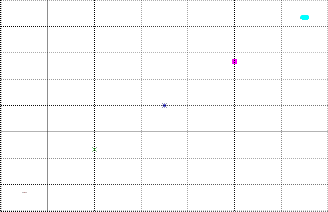
-30
-20 0 20 40 60 80 100 120
Fahrenheit
Figure 4.1: The temperature relationship between Fahrenheit and Celsius, generated by Program 4.1.
46
4.1. Plotting Points for Scatter Plots and Trend Lines
Chapter 4. Graphical Visualization
#include <chplot.h>


includes the header file chplot.h. The purpose of including the header file chplot.h is to use the class CPlot defined in this header file. A class is a user defined data type in Ch. The symbol CPlot can be used in the same manner as the symbol int or double to declare variables. The line
CPlot plot;

declares the variable plot of type CPlot for plotting. A function associated with a class is called a member function. For example, the function plot.mathCoord() or mathCoord() is a member function of the class CPlot. In Program 4.1, member functions of the class CPlot are called to process the data for the object plot. The function call
plot.mathCoord();

sets proper attributes such as grids for a mathematical coordinate system. The function call
plot.title("title");
adds a title to the plot. The argument for this member function is string. If this member function is not called, the generated plot will have no title.

The subsequent two function calls
plot.label(PLOT_AXIS_X, "xlabel");
plot.label(PLOT_AXIS_Y, "ylabel");


add labels to the x and y coordinates. The macros PLOT AXIS X and PLOT AXIS Y for the x and y axes, respectively, are defined in the header file chplot.h. The second arguments of the above two member functions are also strings for labels. If these two functions are not called, by default, the label for the x-axis will be “x” whereas the label for the y-axis will be “y”.

There are many member functions to add plotting data to the plotting object. One of them is to add a point to the plotting object. The member function call
plot.points(x, y);
draws a point at the coordinate (x, y). In Program 4.1, five data points in Table 4.1 are added to the graph by the statements.
plot.point(-10, -23.33); plot.point(20, -6.67); plot.point(50, 10.00); plot.point(80, 26.67); plot.point(110, 43.33);

After the plotting data are added, finally, the program needs to call the function
plot.plotting();
to generate a plot,
The member functions of the plotting class CPlot used in this document are summarized and docu- mented in Appendix A.
 Do Exercises 1(a) and 2(a) on page 64.
Do Exercises 1(a) and 2(a) on page 64.
4.1.1 Copying and Printing Plots
Unlike in a graphing calculator, plots in Ch can be copied and pasted easily into other applications such as a Word file. In Windows, a displayed plot can be copied to the clipboard first, then pasted to other programs such as a Word document or PowerPoint to print out or for a project report. Clicking the first menu on the
47
4.2. Plotting Lines Using Two Points
Chapter 4. Graphical Visualization
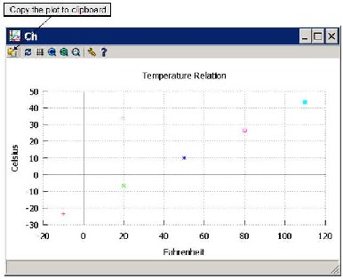
Figure 4.2: Copying the plot to clipboard.
toolbar on the upper left corner of the plot, as shown in Figure 4.2, will copy the plot to the clipboard. The plot in the clipboard can then be pasted into other programs.
On Mac OS X, move the cursor on a plot first, press the two keys Command and c to copy the plot to the clipboard. Then, press the two keys Command and v to paste the plot to a Word file.
 Do Exercises 1(b) and 2(b) on page 64.
Do Exercises 1(b) and 2(b) on page 64.
4.2 Plotting Lines Using Two Points

Only two points are necessary to draw a straight line. The plotting member function
plot.line(x1, y1, x2, y2);
draws a straight line between the two points (x1, y1 ) and (x2 , y2).
Application: Plotting a Linear Relation
Problem Statement:
The temperature c Celsius is related to the temperature f Fahrenheit by the linear equation
c = 5(f − 32)/9 (4.1) Write a program line.ch to convert 20 degrees Fahrenheit to degrees Celsius, and plot
the linear relation between the temperature c Celsius and the temperature f Fahrenheit
expressed by equation (4.1).
48
4.2. Plotting Lines Using Two Points
Chapter 4. Graphical Visualization
Program 4.2 first converts 20 degrees Fahrenheit to degrees Celsius and displays the following output in the input/output pane.
20 degrees Fahrenheit is -6.67 degrees Celsius
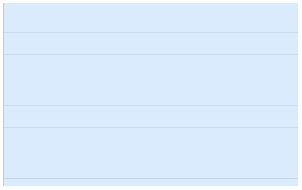
It then displays the plot shown in Figure 4.3 on the screen.
/* File: line.ch
Plot the temperature relationship between Fahrenheit and Celsius
using the member function line() for x from -10 to 110. */
#include <chplot.h> // for CPlot
/* Declare variables */ double x1, y1, x2, y2; CPlot plot;
/* convert 20 degrees Fahrenheit to degrees Celsius */
x1 = 20;
y1 = 5*(x1-32)/9;
printf("20 degrees Fahrenheit is %.2lf degrees Celsius\n", y1);
plot.mathCoord(); plot.title("Temperature Relation"); plot.label(PLOT_AXIS_X, "Fahrenheit"); plot.label(PLOT_AXIS_Y, "Celsius");
/* add a line connecting (x1, y1) and (x2, y2) to the plot */
x1 = -10;
y1 = 5*(x1-32)/9;
x2 = 110;
y2 = 5*(x2-32)/9; plot.line(x1, y1, x2, y2); plot.plotting();
Program 4.2: Plotting the line y = 5(x − 32)/9 using two points.
49
4.2. Plotting Lines Using Two Points
Chapter 4. Graphical Visualization
Temperature Relation
50
40
30
20
10
0
-10
-20
-30
-20 0 20 40 60 80 100 120
Fahrenheit
Figure 4.3: The temperature relationship between Fahrenheit and Celsius, generated by Program 4.2 and Program 7.5 in Chapter 7.
In Program 4.2, the y-coordinates y1 and y2 corresponding to x at x1 = −10 and x2 = 110, respectively, are calculated first. The two points (x1, y1) and (x2, y2) are then used to draw a straight line by the statement
plot.line(x1, y1, x2, y2);
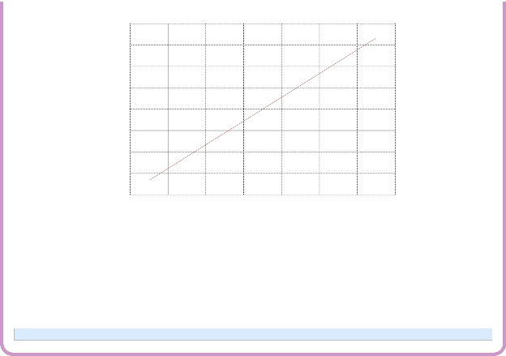

Do Exercises 3(a) and 4(a) on page 64.
4.2.1 Obtaining the Coordinates for Points on a Plot
When you put the cursor on a displayed plot on the screen, the x and y coordinates for the point where the cursor points will appear on the lower left corner. Depending on the resolution of your screen setup, you may only be able to obtain an approximate value for a given point. For example, you can move the cursor to the y-intercept and x-intercept points, as shown in Figure 4.3, to obtain approximate values for these two intercepts. Note that the y-intercept is the y value where a graph intersects with the y-axis. The x-coordinate of the y-intercept is always 0. The x-intercept is the x value where a graph intersects with the x-axis. The y-coordinate of the x-intercept is always 0. The x-intercept in Figure 4.3 is 32. The y-intercept is 17.78.
Note that the member function plot.line() draws a line with only two data points. We cannot zoom in on a point of the line to obtain accurate values of the x and y coordinates of the point. In sections 7.5.1 and
7.5.2 in Chapter 7, we will learn how to plot a straight line with multiple points using the member function
plot.func2D(). Then, we can zoom in on the plot to obtain more accurate values for the coordinate of a point on the line.
 Do Exercise 3(b) on page 64.
Do Exercise 3(b) on page 64.
50
4.3. Plotting Rectangles, Squares, and Circles
Chapter 4. Graphical Visualization
/* File: squarecircle.ch
Plot a square with the lower left corner at (-1, -1) and the side length 2,
a circle with the center at (0, 0) and the radius 1.
two points at (-0.5, 0.5) and (0.5, 0.5). */
#include <chplot.h> // for CPlot
double x, y; // random points and PI
CPlot plot;
plot.mathCoord(); plot.title(""); plot.label(PLOT_AXIS_X, "x"); plot.label(PLOT_AXIS_Y, "y");
plot.sizeRatio(1); // for drawing a circle with the 1:1 aspect ratio
plot.rectangle(-1, -1, 2, 2); // draw a square with the side length 2 plot.circle(0, 0, 1); // draw a circle with the radius 1 plot.point(-0.5, 0.5); // draw a point
plot.point(0.5, 0.5); // draw another point
plot.plotting();
Program 4.3: Plotting a square, a circle, and two points.
4.3 Plotting Rectangles, Squares, and Circles

In addition to points and lines, the plotting class CPlot can also be conveniently used to draw rectangles, squares, and circles on a plot.

The member function call
plot.rectangle(x, y, width, height);
draws a rectangle with the lower left corner at the point (x, y) with the specified width and height. A
rectangle becomes a square if its width and height are the same.

The member function call
plot.circle(x, y, r);
draws a circle centered at the point (x, y) with the radius r.
Program 4.3 generates a graph shown in Figure 4.4 with a square, a circle, and two points. The function

call
plot.rectangle(-1, -1, 2, 2);

creates a square with the lower left corner at (−1, −1) and the side length of 2. The function call
plot.circle(0, 0, 1);

creates a circle at the center (0, 0) with the radius of 1. The function calls
plot.point(-0.5, 0.5);
plot.point(0.5, 0.5);
creates two points at (−0.5, 0.5) and (0.5, 0.5). In section 4.6, we will learn how to change the default type, size, and color of lines and points.

A plot is typically displayed in a rectangular area with a proper scale. The aspect ratio of a plot is the ratio of the length of the y-axis to the length of the x-axis. It can be set by the member function
plot.sizeRatio(ratio);
51
4.4. Setting Axis Ranges and Tick Marks in Plots
Chapter 4. Graphical Visualization
1
0.5
0
-0.5
-1
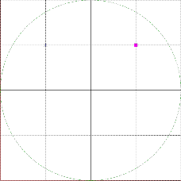
-1 -0.5 0 0.5 1 x
Figure 4.4: The graph with a square, a circle, and two points, generated by Program 4.3.

The argument ratio specifies the aspect ratio. The function call
plot.sizeRatio(1);
will display a plot in a square box when the ranges for x and y are the same. This member function is called in Program 4.3 so that the square and circle will be properly shaped.
 Note that for some wide screens, the aspect ratio may need to be set to 1.5 to display properly with the aspect ratio 1. You may also resize the plot window to attain different aspect ratios.
Note that for some wide screens, the aspect ratio may need to be set to 1.5 to display properly with the aspect ratio 1. You may also resize the plot window to attain different aspect ratios.
 Do Exercises 5 and 6 on page 64.
Do Exercises 5 and 6 on page 64.
4.4 Setting Axis Ranges and Tick Marks in Plots

In Program 4.2, the ranges and tick marks for the x-axis and y-axis are set automatically by the plotting class CPlot, based on the data for the two end points for a line. A range is the beginning and ending numbers shown on each axis. A tick mark is the interval between units on each axis. The range for the x-axis is from
-20 to 120 by increment of 20 between each tick mark, as shown in Figure 4.3. The range for the y-axis is from -30 to 50 by increment of 10 between each tick mark. Sometimes, it may be desirable to set the ranges and tick marks for axes directly to make a plot more appealing.
The axis ranges can be set by the member function
plot.axisRange(axis, minimum, maximum);


The first argument axis specifies the axis. The macros PLOT AXIS X and PLOT AXIS Y can be used for axis to specify the x and y axes, respectively. These macros are defined in the header file chplot.h. The second argument minimum is for the minimum value on the axis. The third argument maximum is for the maximum value on the axis.
The tick marks on an axis can be set by the member function
plot.ticsRange(axis, incr);
52
4.5. Plotting Multiple Lines and Curves in a Single Graph
Chapter 4. Graphical Visualization
/* File: line2.ch
Plot the temperature relationship between Fahrenheit and Celsius
using the member function line() for x from -10 to 110.
The range of x-axis is from -40 to 140, the value between each tick is 10.
The range of y-axis is from -40 to 60, the value between each tick is 5. */
#include <chplot.h> // for CPlot
double x1, y1, x2, y2;
CPlot plot;
plot.mathCoord(); plot.title("Temperature Relation"); plot.label(PLOT_AXIS_X, "Fahrenheit"); plot.label(PLOT_AXIS_Y, "Celsius"); plot.axisRange(PLOT_AXIS_X, -40, 140); plot.axisRange(PLOT_AXIS_Y, -40, 60); plot.ticsRange(PLOT_AXIS_X, 10); plot.ticsRange(PLOT_AXIS_Y, 5);
/* add a line connecting (x1, y1) and (x2, y2) to the plot */
x1 = -10;
y1 = 5*(x1-32)/9;
x2 = 110;
y2 = 5*(x2-32)/9;
plot.line(x1, y1, x2, y2);
plot.plotting();
Program 4.4: Controlling the axis and tick ranges in plotting the line y = 5(x − 32)/9.
Like the member function plot.axisRange(), the first argument axis specifies the axis. The second argu- ment incr gives the increment between tick marks.

Program 4.4 uses these member functions to set the ranges and tick marks for x and y axes with the output plot displayed in Figure 4.5. The range for the x-axis is set from -40 to 140 by increment of 10 between each tick mark by the statements
plot.axisRange(PLOT_AXIS_X, -40, 140);
plot.ticsRange(PLOT_AXIS_X, 10);
The range for the y-axis is set from -40 to 60 by increment of 5 between each tick mark by the statements
plot.axisRange(PLOT_AXIS_Y, -40, 60);
plot.ticsRange(PLOT_AXIS_Y, 5);
Normally, you create a plot without setting the ranges and tick marks for axes first. The plotting in Ch can do a good job to automatically select appropriate ranges so that a line can be properly displayed. After you visually examine the displayed plot, if necessary, you can then modify the program to set the desired ranges and tick marks by calling the member functions plot.axisRange() and plot.ticsRange().
 Do Exercise 7 on page 65.
Do Exercise 7 on page 65.
4.5 Plotting Multiple Lines and Curves in a Single

Graph
In this section, we will learn how to plot multiple lines in a single graph, which is useful to visually examine the relationship of lines.
53
4.5. Plotting Multiple Lines and Curves in a Single Graph
Chapter 4. Graphical Visualization
60
55
50
45
40
35
30
25
20
15
10
5
0
-5
-10
-15
-20
-25
-30
-35
-40
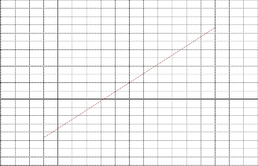
Temperature Relation
-40 -30 -20 -10 0 10 20 30 40 50 60 70 80 90 100 110 120 130 140
Fahrenheit
Figure 4.5: The temperature relationship between Fahrenheit and Celsius, generated by Programs 4.4 and
7.5 in Chapter 7.
Two Parallel Lines
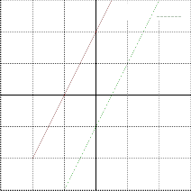
6
y=2x+4
y=2x-2
4
2
0
-2
-4
-6
-6 -4 -2 0 2 4 6
x
Figure 4.6: Two parallel lines y = 2x + 4 and y = 2x − 2, generated by Program 4.5.
54
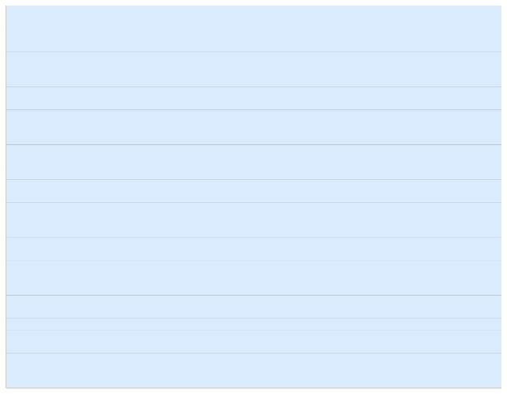
4.5. Plotting Multiple Lines and Curves in a Single Graph
Chapter 4. Graphical Visualization
/* File: twoparallellines2.ch
Plot two parallel lines y = 2x+4
y = 2x-2
using the member line() to connect two points (-4, y1) and (4, y2).
The range of x-axis is from -6 to 6.
The range of y-axis is from -6 to 6 */
#include <chplot.h> /* for CPlot */
double x1, y1, x2, y2;
CPlot plot;
plot.mathCoord();
plot.title("Two Parallel Lines");
plot.label(PLOT_AXIS_X, "x");
plot.label(PLOT_AXIS_Y, "y");
plot.axisRange(PLOT_AXIS_X, -6, 6);
plot.axisRange(PLOT_AXIS_Y, -6, 6);
plot.sizeRatio(1);
/* add a line for y = 2x+4 connecting two points (x1, y1) and (x2, y2) */
x1 = -4;
y1 = 2*x1 + 4;
x2 = 4;
y2 = 2*x2 + 4;
plot.line(x1, y1, x2, y2);
plot.legend("y=2x+4", 0); /* add legend for y=2x+4 */
/* add a line for y = 2x-2 connecting two points (x1, y1) and (x2, y2) */
y1 = 2*x1 - 2;
y2 = 2*x2 - 2;
plot.line(x1, y1, x2, y2);
plot.legend("y=2x-2", 1); /* add legend for y=2x-2 */
plot.plotting();
Program 4.5: Plotting two parallel lines.
We can call the member function plot.line() or other member functions multiple times to add multiple lines, curves, and other objects to the same plot. Program 4.5 calls the member function plot.line() twice to generate two parallel lines, represented by
as shown in Figure 4.6.
y = 2x + 4
y = 2x − 2
In general, if there are multiple lines in a plot, you may want to use legends to distinguish each line as shown in Figure 4.6. The member function plot.legend(), in the form
plot.legend("legend", datanum);
can be called to add a legend to the plot. The first argument "legend" is the name of the legend, what you want the legend to display. The second argument datanum is the number for the data set associated with the legend. Numbering of data set starts with zero. By default, the legends appear in the upper right corner.
In Program 4.5, the statements
plot.line(x1, y1, x2, y2);
plot.legend("y=2x+4", 0);
55
4.6. Setting Line and Point Types
Chapter 4. Graphical Visualization

create the first line y = 2x + 4 for x from x1 = −4 to x2 = 4 with the legend "y=2x+4". The statements
plot.line(x1, y1, x2, y2);
plot.legend("y=2x-2", 1);
create the second line y = 2x − 2 for x from x1 = −4 to x2 = 4 with the legend "y=2x-2".  Do Exercise 8, on page 65.
Do Exercise 8, on page 65.
4.6 Setting Line and Point Types

Member functions plot.line(), plot.rectangle, plot.circle, and some other member functions such as plot.func2D() to be presented in the later chapter draw lines in a graph. In certain applications, you may want to draw a line with specified attributes such as width and color. You may also want to change the shape, size, and color of points. In this section, we will learn how to set attributes of lines and points.
4.6.1 Setting Line Type, Width, and Color
The member function plot.lineType() below can be used to change the default line type, width, and color.
plot.lineType(datanum, lineType, lineWidth, "blue");
The first argument datanum specifies the data set, to which the line type, width, and color apply. The second argument lineType is an integer index representing the line type for drawing, like whether it is dotted, dashed, or solid. The line type of value 1 is for a solid line, the default line type. The line type of value 0 is for a dotted line. Use the same value for different curves so that each curve will have the same style and same color by default. The third argument lineWidth with an integer value is a scaling factor for the line width. The line width is lineWidth multiplied by the default width. The fourth argument
in the string specifies the color. The string "blue" specifies the blue color. Other colors such as "red", "green", and "grey" can also be used. In addition, the color can be specified by the RGB (red, green, and blue) value, such as "#0000ff" for color blue.
Program 4.6 generates Figure 4.7, which is similar to Figure 4.4. Comparing with Figure 4.4, the line
width of the square in Figure 4.7 is 5 times thicker than the default size by the function call
int lineType=1, lineWidth=5;
/* ... */
plot.lineType(datanum, lineType, lineWidth, "red");

In addition to the change of the line width, the color of the circle is changed from the default green to the blue by the function call
plot.lineType(datanum, lineType, lineWidth, "blue");
4.6.2 Setting Point Type, Size, and Color
The member function plot.pointType() below can be used to change the default point type, size, and color.
plot.pointType(datanum, pointType, pointSize, "black");
Similar to the member function plot.lineType(), the first argument datanum specifies the data set, to which the point type, size, and color apply. The second argument pointType is an integer representing the index of the desired point type. The point type of value 7 is for a solid point. Use the same value for different points
56
4.6. Setting Line and Point Types
Chapter 4. Graphical Visualization
1
0.5
0
-0.5
-1
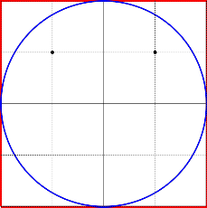
-1 -0.5 0 0.5 1 x
Figure 4.7: The graph with a square, a circle, and two points with modified line and point attributes, gener- ated by Program 4.6.
/* File: linepointtypes.ch
Plot a square with the lower left corner at (-1, -1) and the side length 2,
a circle with the center at (0, 0) and the radius 1.
two points at (-0.5, 0.5) and (0.5, 0.5).
The line type for the square and cirlce is solid line and
the line width is 5 times the normal size.
The point type is solid dot with the normal size. */
#include <chplot.h> // for CPlot
int lineType=1, lineWidth=5; // solid line with 5 pixel width for the square and circle int pointType=7, pointSize=1; // solid point with 1 pixel size for points
CPlot plot;
plot.mathCoord(); plot.title(""); plot.label(PLOT_AXIS_X, "x"); plot.label(PLOT_AXIS_Y, "y");
plot.sizeRatio(1); // for drawing a circle with the 1:1 aspect ratio
plot.rectangle(-1, -1, 2, 2); // draw a square with the side length 2 plot.lineType(0, lineType, lineWidth, "red"); // red color
plot.circle(0, 0, 1); // draw a circle with the radius 1 plot.lineType(1, lineType, lineWidth, "blue"); // blue color
plot.point(-0.5, 0.5); // draw a point
plot.pointType(2, pointType, pointSize, "black"); // black color
plot.point(0.5, 0.5); // draw another point plot.pointType(3, pointType, pointSize, "black");
plot.plotting();
Program 4.6: Plotting a square, a circle, and two points with line and point attributes.
57
4.6. Setting Line and Point Types
Chapter 4. Graphical Visualization
so that each point will have the same style and same color by default. The third argument pointSize with an integer value is a scaling factor for the point size. The point size is pointSize multiplied by the default size. The fourth argument in the string specifies the color.

As shown in Figure 4.7, Program 4.6 sets the two points with the solid points, size 1, and black color by the statements
int pointType=7, pointSize=1;
/* ... */
plot.pointType(datanum, pointType, pointSize, "black");
For detailed information about the member functions lineType() and pointType(), see Ch Reference
Guide in the file C:\Ch\docs\chref.pdf.  Do Exercise 9 on page 67.
Do Exercise 9 on page 67.
Application: Plotting a Rectangle
Problem Statement:
Write an interactive program plotrectangle.ch to plot a rectangle. The program accepts the user input for the coordinates (x, y) for the lower left corner, width, height, line width, and color of the rectangle.
Program 4.7 calls the member function
plot.rectangle(x, y, width, height); // draw a rectangle
to draw a rectangle. The line width and color of the rectangle are set by the statement
plot.lineType(0, lineType, lineWidth, color); // line type
The aspect ratio between the y-axis and x-axis is set by the statement
plot.sizeRatio(height/width); // set the aspect ratio
58
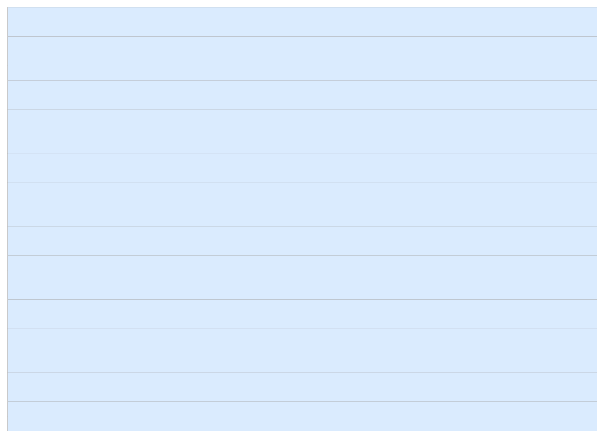
4.6. Setting Line and Point Types
Chapter 4. Graphical Visualization
/* File: plotrectangle.ch
Plot a rectangle using
plot.rectangle(x, y, width, height);
plot.lineType(0, lineType, lineWidth, color);
The user inputs x, y, width, height, lineWidth, and color. */
#include <chplot.h> // for CPlot
CPlot plot;
double x, y, width, height; // the lower left corner (x, y), width, and height
int lineType=1, lineWidth; // line type and line width
string_t color; // color
/* get the user input */
printf("Welcome to the Rectangle Plotter\n");
printf("Enter x y width height\n");
scanf("%lf%lf%lf%lf", &x, &y, &width, &height);
printf("Enter the line width [1-10]\n");
scanf("%d", &lineWidth);
printf("Enter the color for the rectangle\n");
scanf("%s", &color);
plot.mathCoord(); plot.title(""); plot.label(PLOT_AXIS_X, "x"); plot.label(PLOT_AXIS_Y, "y");
plot.sizeRatio(height/width); // set the aspect ratio plot.rectangle(x, y, width, height); // draw a rectangle plot.lineType(0, lineType, lineWidth, color); // line type plot.plotting();
Program 4.7: Interactive plotting a rectangle.
2
1.5
1
0.5
0
-0.5
-1
-1.5
-2
-2 -1 0 1 2 3 4
x
Figure 4.8: The plot generated interactively by Program 4.7.
A sample interactive execution of Program 4.7 is given below.
Welcome to the Rectangle Plotter
Enter x y width height
-2 -2 6 4
Enter the line width [1-10]
59
4.7. Plotting Texts and Arrows
Chapter 4. Graphical Visualization
7
Enter the color for the rectangle
green
The plotted rectangle on the screen is shown in Figure 4.8. The coordinates for the lower left corner of the rectangle is (−2, 2). The width, height, line width, and color of the rectangle are 6, 4, 7 pixels, and green, respectively.
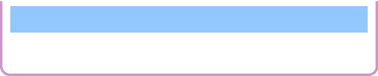

Do Exercises 10 and 11 on page 67.
4.7 Plotting Texts and Arrows

As we have learned, the plotting class CPlot can be conveniently used to draw various objects. In this section, we will learn how to create text and arrows in the plot and their applications.
The member function call
plot.text("string", PLOT_TEXT_CENTER, x, y);
draws a string centered at the point (x, y) so that you can add text to the plot. If the macro PLOT_TEXT_CENTER is used, the specified location is the center of the text string. If the macro PLOT_TEXT_LEFT is used, the specified location is the left side of the text string. For the macro PLOT_TEXT_RIGHT, the specified location is the right side of the text string. The member function call
plot.arrow(x_head, y_head, x_tail, y_tail);


adds an arrow to a plot. The arrow points from (x tail, y tail) to (x head, y head). This member function can be used to add arrows to the x and y axes.
Various plotting features are demonstrated in Program 4.8 with the generated graph shown in Figure

4.9. Program 4.8 first draws a line representing the linear relation between the temperature Celsius and temperature Fahrenheit, using two points (−10, −23.33) and (110, 43.33) by the member function call
plot.line(-10, -23.33, 110, 43.33);
Then, it draws two solid end points by the statements
plot.point(-10, -23.33); plot.pointType(1, pointType, pointSize); plot.point(110, 43.33);
plot.pointType(2, pointType, pointSize);
The arrow and text for the x-coordinate are added by the statements
plot.arrow(120, 0, -40, 0);
plot.text("f", PLOT_TEXT_CENTER, 117, -4);
The arrow points from the point (−40, 0) to the point (120, 0) with the letter ’f’ at the point (117, −4). The arrow and label for the x-intercept are added by the statements
plot.arrow(32, 0, 50, -10);
plot.text("x-intercept", PLOT_TEXT_LEFT, 52, -10);
The arrow points from the point (50, −10) to the x-intercept (32, 0). The text "x-intercept" is dis- played at the left of the position (52, −10).
The arrow and text for the y-coordinate and y-intercept (0, −17.78) are added similar. Finally, the labels "(-10, -23.33)" and "(110, 43.33)" for the coordinates of two end points are added by the statements
60
4.8. Saving Plot in a File
Chapter 4. Graphical Visualization
50
45
40
35
30
25
20
15
10
5
0
-5
-10
-15
-20
-25
-30
c
(-10, -23.33)
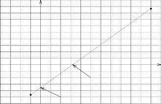
Temperature Relation
x-intercept y-intercept
(110, 43.33)
f
-40 -30 -20 -10 0 10 20 30 40 50 60 70 80 90 100 110 120
Fahrenheit
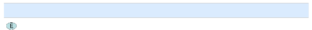
Figure 4.9: The graph with a line, points, arrows, and text, generated by Program 4.8.
plot.text("(-10, -23.33)", PLOT_TEXT_RIGHT, -11, -22.3);
plot.text("(110, 43.33)", PLOT_TEXT_RIGHT, 108, 43.3);
Do Exercise 12 and on page 67.
4.8 Saving Plot in a File

A plot not only can be displayed on the computer screen, but also exported in a variety of file formats for various applications. A plot can be saved in a file by the member function call
plot.outputType(PLOT_OUTPUT_TYPE_FILE, "format", "filename");
The member function calls below show how to save a plot in GIF and JPEG files plot.gif and plot.jpg, respectively.
/* save in the file plot.gif in GIF file format */
plot.outputType(PLOT_OUTPUTTYPE_FILE, "gif", "plot.gif");
/* save in the file plot.jpg in JPEG file format */
plot.outputType(PLOT_OUTPUTTYPE_FILE, "jpeg", "plot.jpg");

For example, the statement
plot.outputType(PLOT_OUTPUTTYPE_FILE, "jpeg", "points.jpg");
in Program 4.9 saves the plot, as shown in Figure 4.1, in the file points.jpg in the JPEG file format in the same folder where the program pointsjpg.ch is located.
 Do Exercise 13 on page 67.
Do Exercise 13 on page 67.
61
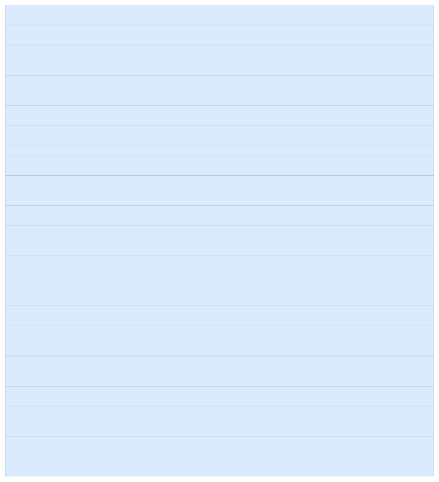
4.8. Saving Plot in a File
Chapter 4. Graphical Visualization
/* File: coordinates.ch
Plot the temperature relationship between Fahrenheit and Celsius
using the member function line() for x from -10 to 110 with two points for a line.
The range of x-axis is from -40 to 120, the value between each tick is 10.
The range of y-axis is from -30 to 50, the value between each tick is 5. */
#include <chplot.h> // for CPlot
CPlot plot;
int pointType=7, pointSize = 1;
plot.mathCoord(); plot.title("Temperature Relation"); plot.label(PLOT_AXIS_X, "Fahrenheit"); plot.label(PLOT_AXIS_Y, "Celsius"); plot.axisRange(PLOT_AXIS_X, -40, 120); plot.axisRange(PLOT_AXIS_Y, -30, 50); plot.ticsRange(PLOT_AXIS_X, 10); plot.ticsRange(PLOT_AXIS_Y, 5);
/* add a line with two points to the plot */
plot.line(-10, -23.33, 110, 43.33);
/* add two points to the plot */
plot.point(-10, -23.33);
plot.pointType(1, pointType, pointSize);
plot.point(110, 43.33);
plot.pointType(2, pointType, pointSize);
/* add an arrow and text for the x-coordinate */
plot.arrow(120, 0, -40, 0);
plot.text("f", PLOT_TEXT_CENTER, 117, -4);
/* label x-intercept */
plot.arrow(32, 0, 50, -10);
plot.text("x-intercept", PLOT_TEXT_LEFT, 52, -10);
/* add an arrow and text for the y-coordinate */
plot.arrow(0, 50, 0, -30);
plot.text("c", PLOT_TEXT_CENTER, -4, 48);
/* label y-intercept */
plot.arrow(0, -17.78, 20, -25);
plot.text("y-intercept", PLOT_TEXT_LEFT, 22, -25);
/* display coordinates of two points */
plot.text("(-10, -23.33)", PLOT_TEXT_RIGHT, -11, -22.3);
plot.text("(110, 43.33)", PLOT_TEXT_RIGHT, 108, 43.3);
plot.plotting();
Program 4.8: Plotting a line, points, arrows, and text.
62
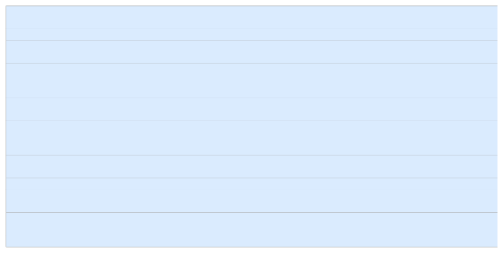
4.9. Chapter Summary
Chapter 4. Graphical Visualization
/* File: pointsjpg.ch
Plot the temperature relationship between Fahrenheit and Celsius using five points.
Save the plot in the file points.jpg in JPEG file format */
#include <chplot.h> // for CPlot
CPlot plot; // declare the variable plot
plot.mathCoord(); // use math coordinates plot.title("Temperature Relation"); // title of the plot plot.label(PLOT_AXIS_X, "Fahrenheit"); // x-label of the plot plot.label(PLOT_AXIS_Y, "Celsius"); // y label of the plot
/* add five data points for plotting */
plot.point(-10, -23.33);
plot.point(20, -6.67);
plot.point(50, 10.00);
plot.point(80, 26.67);
plot.point(110, 43.33);
/* save plot in the file points.jpg in JPEG file format */ plot.outputType(PLOT_OUTPUTTYPE_FILE, "jpeg", "points.jpg"); plot.plotting();
Program 4.9: Saving the plot in the file pointsjpg.jpg in the JPEG file format.
4.9 Chapter Summary
4.9.1 Programming Tips
Good Programming Practice
1. Call the plotting member function
plot.plotting();
after all other member functions.
4.9.2 Terminology

General Concepts
graphical visualization The Plotting Class CPlot | plotting | |
chplot.h CPlot::axisRange() CPlot::label() CPlot::lineType() CPlot::point() CPlot::sizeRatio() CPlot::title() PLOT AXIS X PLOT TEXT LEFT | CPlot CPlot::circle() CPlot::legend() CPlot::outputType() CPlot::pointType() CPlot::text() file format|GIF PLOT AXIS Y PLOT TEXT RIGHT | CPlot::arrow() CPlot::enhanceText() CPlot::line() CPlot::plotting() CPlot::rectangle() CPlot::ticsRange() file format|PNG PLOT TEXT CENTER PLOT OUTPUTTYPE FILE |


63
4.10. Exercises
Chapter 4. Graphical Visualization
4.10 Exercises

1. One mile is 1.6093 kilometers. (a) Write a program mile2km.ch to plot the following points
(1, 1.6093), (3, 4.8279), (5, 8.0465), (10, 16.093), (20, 32.186), (30, 48.279),
(40, 64.372), (50, 80.465), (60, 96.558), (70, 112.651), (80, 128.744).
in a graph showing the relation of miles versus kilometers. The title of the plot should be “kilometer=1.6093*mile”. The labels on the x-axis and y-axis should be “miles” and “kilometers”, respectively. (b) Copy and paste the displayed plot into a Word file. Then. print out the plot.
2. A robot moves based on the following relation of the position versus time
p(t) = 0.25t + 1.25
The time and corresponding positions of a robot are recorded in Table 4.2 in an experiment.
Table 4.2: Positions of a robot versus time.
| | |
| | time (seconds) | | | 0.00 | 2.00 | 4.00 | 6.00 | 8.00 | 10.00 |
| | position (meters) | | | 1.25 | 1.75 | 2.25 | 2.75 | 3.25 | 3.75 |
| | |
(a) Write a program robotpos.ch to plot the trajectory of the robot based on the data in this table. (b) Copy and paste the displayed plot into a Word file. Then. print out the plot.
3. (a) Write a program linec.ch to find two points for x = −5 and x = 5 for the following linear equation.
y = 1.5x − 4
Draw a line to connect these two points. The plot shall have no title. The labels on the x-axis and y-axis should be “x” and “y”. (b) Find the x-intercept and y-intercept for this equation.
4
2
0
-2
-4
-6
-8
-10
-12
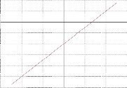
-6 -4 -2 0 2 4 6 x
4. A robot moves based on the following linear relation of the position in meters versus time in seconds
p(t) = 0.25t + 1.25
Plot the trajectory of the robot using two points when time t is 0 and 5 seconds.
5. Write a program circlerect.ch to draw circles with radius of 1, 2, 3, 4, and 5 at the center (0, 0). Draw a rectangle with its lower left corner at (0, 0), and width of 6 and height of 5 as shown in the illustration below.
64
4.10. Exercises
Chapter 4. Graphical Visualization
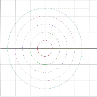
6
4
2
0
-2
-4
-6
-6 -4 -2 0 2 4 6
x
6. Write a program design.ch to design a graph with at least 5 circles and 5 lines, and some text.
7. The cost for shipping Priority Overnight packages weighing 1 lb is modeled by the following linear equation
y = 2.8x + 21.05
where x is the number of pounds and y the cost in dollars. Write a computer program mailcost.ch to calculate the cost of shipping packages of 3 lb and 5 lb, and plot the mailing cost versus weight, as shown in Figure 4.10.
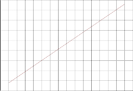
65
60
55
50
45
40
35
30
25
20
0 1 2 3 4 5 6 7 8 9 10 11 12 13 14 15 16
Weight (in pounds)
Figure 4.10: The mailing cost versus weight modeled by the equation y = 2.8x + 21.5.
8. A line can be represented by an equation in slope-intercept form
y = mx + b (4.2)
where m is the slope and b is the y-intercept. For example, for the line in equation (4.3) below
y = 2x + 5 (4.3)
its slope is 2. The line intercepts with the y-axis at 5, as shown in Figure 4.11. If the slopes of two lines are the same, the two lines are parallel. For example, the line below in equation (4.4)
y = 2x + 10 (4.4)
65
4.10. Exercises
Chapter 4. Graphical Visualization
is parallel to the line in equation (4.3). But, it intercepts the y-axis at 10. Two lines intersect when they contain the same point. The line below in equation (4.5)
y = −3x + 15 (4.5)
intersects the line in equation (4.3) at the point (2, 9) and with the line in equation (4.4) at the point (1, 12). Write a program lines.ch to draw three lines formulated in equations (4.3) to (4.5) as shown in Figure 4.11.
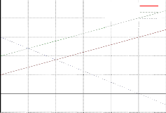
25
y=2x+5
y=2x+10
20 y=-3x+15
15
10
5
0
-5
0 1 2 3 4 5 6
x
Figure 4.11: Three lines with two parallel lines.
66
4.10. Exercises
Chapter 4. Graphical Visualization
9. Write a program shapes.ch to plot the figure shown in the illustration below.
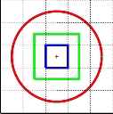
5
4
3
2
1
0
0 1 2 3 4 5
x
10. (a) Run the program plotrectagngle.ch in Program 4.7. (b) Comment out the statement
plot.sizeRatio(height/width);
and run the program. (c) Use the statement
plot.sizeRatio(1);
and run the program again. What are the differences in the generated plots?
11. Modify the program plotrectagngle.ch in Program 4.7 as a program plotcircle.ch to plot a cricle.
The program accepts the user input for the coordinates (x, y) for the center, radius, line width, and color of the
circle.
12. Write a program linetwopoints.ch to draw a graph as shown in the illustration below.
3
2.5
Connecting Two Points
y
2 (0, 2)
1.5
y-intercept
1
0.5
0
-0.5
(-4, 0)
x x-intercept
-1
-6 -5 -4 -3 -2 -1 0 1 2
x
13. Modify the program shapes.ch developd in Exercise 9 as a new program shapesjpg.ch to save the plot in the file shapes.jpg in the JPEG file format.
67


CHAPTER 5
Relations and Making Decisions
So far the programs we have written are pretty simple. They all consist of a series of actions performed in sequence. For more complicated problems, they may require that a decision take place inside the program. In this chapter, we will learn selection statements which are executed when a condition is met. We will also learn relational operators and logical operators which are commonly used in making decisions in selection statements. An algorithm consists of a set of actions and the order in which they are to be performed. Algorithms can be defined in terms of certain control structures in C, which are classified as sequential, which we have used previously, selective, or repetitive. We will learn repetition statements in Chapter 6.
5.1 Relational Operators

Prerequisite: Understanding variable types, program structure, and arithmetic operators
Common Core Content Standards: L.6.6, RST.6-12.3, RST.6-12.4
CTE Model Curriculum Standards: Information Technology Pathway, D1.1, D1.3, D1.4, D2.1, D2.2, D4.1
Objective: Use relational operators to test the relationship between values/variables.

For operations using relational operators given in Table 5.1, the result is always an integer with a logical value of 1 or 0. In the context of computer programming, 1 means true and the 0 means false. The result is
1 if the comparison is correct, and 0 otherwise. For example,
> int i = 5, j = 3
> i < j
0 // false
> i <= j
0 // false
> i == j
0 // false
5.1. Relational Operators
Chapter 5. Relations and Making Decisions
Table 5.1: Relational operators
operator | operation | description |
< <= == >= > ! = | x < y x <= y x == y x >= y x > y x! = y | is less than is less than or equal to is equal to is greater than or equal to is greater than is not equal to |
> j == j
1 // true
> i > j
1 // true
> i >= j
1 // true
> i != j
1 // true
> i != i
0 // false
> printf("i != j is %d", i != j)
i != j is 0
Do Exercise 1 on page 84.
Application: A Driver Eligibility Test
Problem Statement:
Write a program to check if a person is old enough to drive. It is assumed that a person of
16 years old is eligible to obtain a driver license. The program should let the user to enter his/her name and age.
69
5.1. Relational Operators
Chapter 5. Relations and Making Decisions
/* File: drivertest.ch
Check if a a person is old enough to drive */
/* declare variables */
string_t name; /* name */
int age; /* age */
/* get the user input */ printf("What’s your name?\n"); scanf("%s", &name);
printf("How old are you?\n");
scanf("%d", &age);
if(age > 15) {
printf("%s, you can get a license.\n", name);
printf("Happy Trails!\n");
}
else {
printf("Sorry, %s, you are too young to get a license.\n", name);
}
Program 5.1: Checking if a person is old enough to drive.
Program 5.1 can be used to check if a person is old enough to drive. The variable name of string type is used to hold a name and the variable age is for age. If the value of the variable age is larger than 15, the expression age > 15 is 1. Otherwise, it is 0. In Program 5.1, the following if-else structure is used to handle two different scenarios.
}
If the person is older than 15, the program displays a message to inform the user that you can get a license. Otherwise, it displays a different message indicating that you are too young to get a license. The details about the if statement will be described in the next section.
An interactive execution of Program 5.1, when the condition expression of the if statement is true, is shown below:
What’s your name? John
How old are you?
17
John, you can get a license.
Happy trails.
Another execution of Program 5.1, when the condition expression of the if statement is false, is shown below:
What’s your name? Sue
70
5.2. Selection Statements for Decision Making
Chapter 5. Relations and Making Decisions
How old are you?
14
Sorry, Sue, you are too young to get a license.

Do Exercise 2 on page 84.
The relational operators == and != can also be applied to compare two strings. A sample application using these operators for strings will be presented in section 5.3.
5.2 Selection Statements for Decision Making

Prerequisite: Understanding program structure
Common Core Content Standards: L.6.6, RST.6-12.3, RST.6-12.4, RST.6-12.7
CTE Model Curriculum Standards: Information Technology Pathway, D1.1, D1.3, D1.4, D2.1, D2.2, D2.3, D4.1, D5.1, D5.5
Objective: Understand how to use selection statements in a computer program. Debug programs with selection statements using ChIDE. Understand the need for readable code and use the indent tool provide by ChIDE.
Selection statements allow a program to execute different tasks based on the results of relational and logical operations. We will cover the following selection statements: if, if-else, and else if statements.
5.2.1 The if Statement
The syntax of an if statement is as follows:
if(expression) {
statement;
}
When an if statement is executed, the controlling expression will be evaluated first. In the context of structured programming, the true means not equal to 0 and the false means 0.
With an if statement, a substatement is executed if the expression returns a true value. If a false value is returned, then the substatement is skipped and the program execution moves on to the next line.
One of common mistakes for beginners in using the if statement is to write
if(i=5)
instead of
if(i==5)
In the case of the first example, the result of the conditional expression is 5, therefore, the condition is always evaluated as true because 5 is not equal to zero.
71
5.2. Selection Statements for Decision Making
Chapter 5. Relations and Making Decisions
5.2.2 The if-else Statement

The syntax of an if-else statement is as follows:
if(expression) {
statement1;
}
else {
statement2;
}
The if-else statement is commonly used for decision making. We have already used the if-else statement in Program 5.1. Within if-else statements, there is a separate statement for both a true and false value for the controlling expression. If the expression returns a true value, then statement1 would be executed. If a false value was returned, statement2 would be executed.
Application: Calculating the Daily Wage
Problem Statement:
Hourly employees at a company are paid $20 per hour for less than or equal to eight hours worked per day. Any time over this amount is paid at 1.5 times the normal rate. The company withholds 30% from the gross pay for the federal and state income tax. Write a program wage.ch to determine the gross pay, deducted tax, and net pay for an
employee based on the user input of the hours worked for a day.
If the hours worked for an employee are less than or equal to eight hours, the daily gross pay is
20t with time t in hours. If the hours worked are more than eight hours, the payment for the first eight hours is 20*8 and the payment for the time over eight hour is 1.5 ∗ 20(t − 8) for t larger than 8. Therefore, the daily gross pay in this case can be expressed as
20 ∗ 8 + 1.5 ∗ 20(t − 8) = 30t − 80
Then, the daily gross pay for an employee can be formulated as follows:
( 20t if t ≤ 8
p(t) =
30t − 80 if t > 8
The deducted tax is the result of multiplication of 0.3 by the gross pay. The gross pay less the deducted tax is the net pay.
72
5.2. Selection Statements for Decision Making
Chapter 5. Relations and Making Decisions
/* File: wage.ch
Calculate the gross pay, deducted tax, and net pay
The formula for the gross pay depends on t <= 8 or t > 8 hours */
/* declare variables */
double t, grosspay, netpay, tax;
/* get the user input for the hours worked */ printf("Welcome to the Wage Calculator\n"); printf("Please enter the hours worked\n"); scanf("%lf", &t);
/* process the payment */
if(t <= 8) { /* when time t is less or equal to 8 hours */
grosspay = 20*t;
}
else { /* when time t is greater than 8 hours */
grosspay = 30*t - 80;
}
tax = 0.3*grosspay;
netpay = grosspay - tax;
/* display the payment as output */
printf(" gross pay: $%.2lf\n", grosspay);
printf("deducted tax: $%.2lf\n", tax);
printf(" net pay: $%.2lf\n", netpay);
Program 5.2: Calculating the wage using if-else structure.
This problem can be solved with Program 5.2, which uses an if-else statement to determine how the gross pay p is calculated. First, the program uses the function scanf() to read in the time. Based on the value of the input time, the gross pay will be calculated using different formulas. If the specified time is less than or equal to eight hours, p is 20t. Otherwise, p is equal to 30t − 80. The result of the
net pay is then displayed. Program 5.2 can be executed as shown below.
Welcome to the Wage Calculator
Please enter the hours worked
5
gross | pay: | $100.00 |
deducted | tax: | $30.00 |
net | pay: | $70.00 |

Do Exercises 3 and 4 (a) on page 84.
5.2.3 Debugging Programs with Selection Statements Using ChIDE

Running a program in the debug mode in ChIDE step-by-step as described in section 2.4 is very helpful for understanding the working principle of selection statements. You can examine the conditional expression of the selection statements to see which branch of the selection statements is executed based on the condition.
You can run the program wage.ch in ChIDE using the command Step to see which substatement of the if statement is executed.
 Do Exercise 4 (b) on page 84.
Do Exercise 4 (b) on page 84.
73
5.3. Logical Operators
Chapter 5. Relations and Making Decisions
Table 5.2: Logical operators
operator | operation | description |
&& || | x && y x || y | logical AND operator logical inclusive OR operator |
5.2.4 Programming Style and Indenting Programs Using ChIDE
As we described before, for readability and software maintenance, statements inside a function shall be properly indented. Indentation is especially important for a program with many nested loops, which will be described later in this chapter. Indentation needs to be consistent for a program with a fixed number of blank spaces. Each indentation in most source code presented in this book uses four blank space characters. The use of horizontal tabs for indentation is not recommended because it takes too much space in code with many nested loops and blocks. Also, some word processors will treat a horizontal tab as a single white space. Hardcopy of source code without proper indentation may be difficult to read.
Programs edited in ChIDE can be properly indented using an indentation utility program. When you click the command Tools->Indent on the toolbar, the program in the current editing pane will be prop- erly indented. You can also right click the file name on the tab bar, located below the debug bar, and select
Indent to indent the program in the editing pane.  Do Exercise 4 (c) on page 84.
Do Exercise 4 (c) on page 84.
5.3 Logical Operators

Prerequisite: Understanding variable types, program structure, arithmetic and relational operators
Common Core Content Standards: L.6.6, RST.6-12.3, RST.6-12.4
CTE Model Curriculum Standards: Information Technology Pathway, D1.1, D1.3, D1.4, D2.1, D2.2, D4.1
Objective: Use logical operators to test the relationship between the results of 2 or more relational opera- tions in a Ch program.

Congratulations! You are now ready to make your programs “life-like” by creating operations that will make “choices” based on certain conditions. This is done through the use of logical operators, as listed in Table 5.2. Table 5.3 summarizes the results of all the logical operations.
The logical AND operator (&&) can be used to check whether both the conditions of its two operands are true. If both conditions are true, then the operation returns true. Otherwise, the operation is false. For example,
> 1 && 1 // both conditions are true
1
> 1 && 0 // one condition is true
0
> 0 && 1 // one condition is true
0
74
5.3. Logical Operators
Chapter 5. Relations and Making Decisions
Table 5.3: Logical operations
x | y | x && y | x || y |
0 | 0 | 0 | 0 |
0 | 1 | 0 | 1 |
1 | 0 | 0 | 1 |
1 | 1 | 1 | 1 |
> 0 && 0 // both conditions are false
0
For the logical OR (||), either one or both of its operands must be true for the operation to be true. For example,
> 1 || 1 // both conditions are true
1
> 1 || 0 // one condition is true
1
> 0 || 1 // one condition is true
1
> 0 || 0 // both conditions are false
0

The logical operators are often used together with relational operations. For example,
> int i = 6, j = 3
> (i > 0) && (i < 5) // evaluated as (1 && 0)
0
> (i > 0) || (i < 5) // evaluated as (1 || 0)
1
Logical operators are typically used to form more complex conditions for an if statement. Using logical operators in this way eliminates the need for nested if statements. For example,
if((a < b) && (c < d))
statement;
is equivalent to
if(a < b) {
if(c < d)
statement;
}
Precedence of relational and logical operators along with arithmetic operators, negation operator, and assignment operator are listed in Table 5.4. The increment ++ and decrement -- will be introduced in Chapter 6. Because logical operators have lower precedence than relational operators as shown in Table 5.4, one can write the previous if statement
if((a < b) && (c < d))
statement;
as
75
5.3. Logical Operators
Chapter 5. Relations and Making Decisions
Table 5.4: Precedence and associativity of operators
Operators Associativity
++ -- - (negation) right to left
* / % left to right
+ - left to right
< <= > >= left to right
== != left to right
&& left to right
|| left to right
= right to left
if(a < b && c < d)
statement;
Application: Determining if a Student Can Watch a Movie
Problem Statement:
A student is allowed to watch movies only on Saturday or Sunday. Write a program movie.ch to check if the student can watch a movie. When the student enters a response to a prompt, the program will tell if he/she can watch a movie.
The decision for watching a movie can be evaluated by the following condition structure.
if(is_Saturday || is_Sunday)
you_can_watch_movie
else
you_cannot_watch_movie
76
5.3. Logical Operators
Chapter 5. Relations and Making Decisions
/* File: movie.ch
Students are allowed to watch movies only on Saturday or Sunday.
This program check if you can watch a movie or not. */
/* declare variables */
string_t name; /* name */
string_t day; /* Monday, Tuesday, Wednesday, ..., Sunday */
/* get the user input of name and day of the week */
printf("What’s your name?\n");
scanf("%s", &name);
printf("What day is today [Monday, Tuesday, etc.]?\n");
scanf("%s", &day);
/* If Saturday or Sunday */
if(day == "Saturday" || day == "Sunday") {
printf("\nHi %s,\n", name);
printf("Today is %s. You can watch a movie.\n", day);
printf("Enjoy your time!\n");
}
else {
printf("\nHi %s,\n", name);
printf("Today is %s.\n", day);
printf("You have to study and cannot watch a movie. Sorry.\n");
}
Program 5.3: Determining if a student can watch a movie.
In Program 5.3, the variable name of string type is used to hold the name of students. The variable day of string type is for the day of the week. The relational operator == is used to compare two strings. When the value of the variable day is either for "Saturday" or "Sunday", the condition expression inside the if statement below will be true and the code block will be executed.
if(day == "Saturday" || day == "Sunday") {
printf("\nHi %s,\n", name);
printf("You can watch a movie today.\n");
printf("Enjoy your time!\n");
}
An interactive execution of Program 5.3 is shown below:
What’s your name?
What day is today [Monday, Tuesday, etc.]?
Saturday
Hi John,
Today is Saturday. You can watch a movie.
Enjoy your time!

Do Exercises 5, 6, and 7 on page 85.
77
5.3. Logical Operators
Chapter 5. Relations and Making Decisions
Application: Determining a Leap Year
Problem Statement:
A given year is a leap year if one of the following two conditions are satisfied: (a) if it divides exactly by four, but cannot be divided exactly by 100 or (b) if it divides exactly by
400. For example, 2012 is a leap year because it can be divided exactly by four, but cannot be divided exactly by 100. 2000 is also a leap year because it divides exactly by 400. On the other hand, neither 2100 nor 2200 is a leap year. Write a program to determine if a given year read from the user input is a leap year or not.
A given year can be represented using a variable year of int type. The modulus operator % can be used to determine if an integer can be divided exactly by another integer. The remainder of the modulus operation year%4 is zero if year can be divided exactly by four. The remainder of the modulus operation year%100 is not zero if year cannot be divided exactly by 100. Therefore, the condition (a) for a leap year can be expressed using the relational operators == and != along with the logical AND operator && in the following C expression:
(year%4 == 0) && (year%100 != 0)
If a given year satisfies the condition (a) as a leap year, the above expression evaluates to 1 (true). The parentheses in the above expression are just for clarity. The modulus operator % has higher precedence than relational operators as shown in Table 5.4. The relational operators == and != have
higher precedence than the logical AND operator &&. Therefore, the above expression can be written
without parentheses as follows:
year%4 == 0 && year%100 != 0
Although white spaces in an expression are ignored when the program is processed, they can make the code more readable. For example, the following expression will be less readable than the previous two expressions:
year % 4 == 0 && year % 100 != 0
If a year divides exactly by 400 for the condition (b) for a leap year, the relational expression
year%400 == 0
evaluates to 1. If either the condition (a) or condition (b) is true, the value of the following C expression evaluates to 1 (true):
year%4 == 0 && year%100 != 0 || year%400 == 0
78
Chapter 5. Relations and Making Decisions
5.4. The else if Selection Statement and Early Exit of a Program
/* File: leapyear.ch
Determine if a year input from the terminal is a leap year */
int year; /* year (input from the user) */
/* prompt the user for input */ printf("Please input a year\n"); scanf("%d", &year);
/* determine if the year is a leap year or not, and display the output */
if(year%4 == 0 && year%100 != 0 || year%400 == 0) {
printf("%d is a leap year.\n", year);
}
else {
printf("%d is not a leap year.\n", year);
}
Program 5.4: Determining if a given year is a leap year.
Program 5.4 is designed using the above logical expression as the conditional expression of an if statement. If the conditional expression evaluates to 1 (true) for a given year, it is displayed as a leap year. Otherwise, it is displayed as a non-leap year. An interactive execution of Program 5.4 is shown below:
Please input a year
2012
2012 is a leap year.

Do Exercise 8 on page 85.
5.4 The else if Selection Statement and Early Exit
of a Program
The syntax of the else if statement is as follows:
if(expression1) {
statement1;
}
else if (expression2) {
statement2;
}
else if (expression3) {
statement3;
}
else {
statement4;
}
79
5.5. Chapter Summary
Chapter 5. Relations and Making Decisions
The if-else statement has two options to select. The else-if statements are useful when more than two options are needed. In this regard, an else if statement can be thought of as an extension of an if-else statement.
For instance, the application example on calculating the daily wage on page 72, because daily worked hours cannot be less than 0 or greater than 24, the formula for calculating the gross pay can be modified slightly as follows:
p(t) =
( 20t if 0 ≤ t ≤ 8
30t − 80 if 8 < t ≤ 24
In this case, if the input for time t is a negative value or greater than 24, it is an invalid input. The algorithm is implemented in the program grosspay.ch listed in Program 5.5 using an if-else if-else structure. The mathematical condition 0 ≤ t ≤ 8 for t greater than 0 and less than 8 is translated into C code as (0 <= t && t <= 8). When the input time is less than 0 or greater than 24, the program will print an error message and exit. In this case, no payment information is printed.
Typically, a successful program execution terminates when the last statement in the program is executed. The function exit() called by the statement
exit(-1);
inside the else statement block provides an early exit for the program if the user input for the time is less than 0 or larger than 24.
Program 5.5 also generates a plot for the relation between the hours worked and gross pay, as shown in Figure 5.1. Two separate lines are used to represented the piece-wise linear relation between the hours worked and gross pay. The first line connects the points (0, 0) and (8, 20*t) with t equal 8. The second line connects the point (8, 30*t-80) with t equal to 8 and the point (24, 30*t-80) with t equal to 24. A point is created at the coordinates for the hour worked and the gross pay. An interactive execution of the program grosspay.ch with the user input of 7 worked hours is shown below.
Welcome to the Wage Calculator
Please enter the hours worked
7
gross | pay: | $140.00 |
deducted | tax: | $42.00 |
net | pay: | $98.00 |
Figure 5.1 shows the generated plot with a point at (7, 140).
 Do Exercises 9, 10, 11, and 12, on page 85.
Do Exercises 9, 10, 11, and 12, on page 85.
5.5 Chapter Summary
5.5.1 Programming Tips
Good Programming Practice
1. Indent the body of selection and repetition statements. For example,
if(n == 10) {
i = 10;
}
2. If there are several levels of indentation, indent each with the same number of spaces. Indent a pro- gram using the command Tools->Indent in ChIDE with four spaces for each level of indentation.
80
5.5. Chapter Summary
Chapter 5. Relations and Making Decisions
/* File: grosspay.ch
Calculate the gross pay, deducted tax, and net pay.
Plot the gross pay versus time.
The formula for the gross pay depends on
if(0 <= t <= 8)
grosspay = 20t
else if (8 <= t <= 24)
grosspay = 30*t - 80 */
#include <chplot.h>
/* declare variables */
double t, grosspay, netpay, tax;
CPlot plot;
/* get the user input for the hours worked */ printf("Welcome to the Wage Calculator\n"); printf("Please enter the hours worked\n"); scanf("%lf", &t);
/* process the payment */
if(0 <= t && t <= 8) { /* when 0 <= t <= 8 */
grosspay = 20*t;
}
else if(8 < t && t <= 24) { /* when 8 < t <= 24 */
grosspay = 30*t - 80;
}
else { /* when t<0 or t > 24 */
printf("Invalid time\n");
exit(-1);
}
tax = 0.3*grosspay;
netpay = grosspay - tax;
/* display the payment as output */
printf(" gross pay: $%.2lf\n", grosspay);
printf("deducted tax: $%.2lf\n", tax);
printf(" net pay: $%.2lf\n", netpay);
/* plot the relation of gross pay versus time */
plot.mathCoord();
plot.title("Gross pay versus time");
plot.label(PLOT_AXIS_X, "time (hours)");
plot.label(PLOT_AXIS_Y, "gross pay (dollars)");
plot.line(0, 0, 8, 20*8);
plot.line(8, 30*8-80, 24, 30*24-80);
/* plot the point with the user input worked hour and gross pay */
plot.point(t, grosspay);
plot.plotting();
Program 5.5: Calculating the wage using if-else if-else structure.
81
5.5. Chapter Summary
Chapter 5. Relations and Making Decisions
700
600
500
400
300
200
100
0
Gross pay versus time
0 5 10 15 20 25 time (hours)
Figure 5.1: The relation between the hours worked and gross pay.
3. Do not insert a space next to a parenthesis. For example, use
if(x > 0) {
printf("x is positive\n");
}
instead of
if( x > 0 ) {
printf( "x is positive\n" );
}
Common Programming Errors
1. Use the assignment operator = instead of the equality operator ==. For example,
if(x = 10) { // bad printf("x is 10\n");
}
if(x == 10) { // good printf("x is 10\n");
}
2. Forget to brace the compound statement for the body of a selection or repetition statement. For example,
if(x > 0) // bad printf("x is positive\n");
x = x + 10;
else
82
5.5. Chapter Summary
Chapter 5. Relations and Making Decisions
printf("x is negative\n");
if(x > 0) { // good printf("x is positive\n");
x = x + 10;
}
else {
printf("x is negative\n");
}
3. Add a semicolon after the controlling expression for an if statement.
if(i<n); // bad
{
printf("This is always printed\n");
}
if(i<n) // good
{
printf("This is always printed\n");
}
4. Indent the body statements of selection and repetition statements improperly. For example,
if(x == 10) // bad
{
x = x + y;
y = 100;
}
if(x == 10) // good
{
x = x + y;
y = 100;
}
5. Translate mathematical expressions into logical expressions incorrectly. For example,
if(0 <= x <= 10) {
printf("0 <= x <= 10 is true\n");
}
should be changed to
if(0 <= x && x <= 10) {
printf("0 <= x <= 10 is true\n");
}
6. Separate operators with two adjacent symbols such as ==, !=, >=, <= with a space.
83
5.6. Exercises
Chapter 5. Relations and Making Decisions
5.5.2 Terminology

General Concepts
algorithm | else if statement | false |
if statement | if-else statement | logical AND operator |
logical OR operator | logical operators | relational operators |
selection statements | statement | true |
Ch Reserved Words
> greater than operator | >= greater than or equal to operator | != inequality operator |
< less than operator | <= less than or equal to operator | || logical inclusive OR operator |
== equal-to operator | && logical AND operator | else |
exit() | if | |
ChIDE Related Concepts
Tools->Indent
5.6 Exercises

1. Declare two integers i and j in a Ch command window. Assign i with 4 and j with 6. Compare these two integers using the relational operators <, <=, ==, >=, >, ! = in the Ch command window.
2. Write a program modulus.ch that reads an integer and determines and prints whether it is odd or even. (Hint: Use the modulus operator %. An even number is a multiple of two. Any multiple of two leaves a remainder of zero when divided by 2. If n is an even number, the result n%2 is zero.)
3. Identify and correct errors in each of the following code blocks. (Note: there may be more than one error):
(a) if(age >= 65);
printf("Age is greater than or equal to 65\");
else
printf("Age is less than 65\n")
(b) if(i = 2) {
printf("i is 2\n");
}
else {
printf("i is not equal to 2\n");
}
4. (a) Write a program rental2.ch for a Video Rental Shop to process the rental of movies with the user input for the number of movies to be rented. The price for renting a movie is $3.99. If a customer rents three or more movies, the price is $3.49 per movie. The sales tax is 8.5 percent. The algorithm for the
program is shown below.
if(num >= 3) {
price is 3.49
}
else {
price is 3.99
84
5.6. Exercises
Chapter 5. Relations and Making Decisions
}
subtotal = num*price tax = 0.085*subtotal total = subtotal+tax
(b) Use the command Step in ChIDE to run the program rental2.ch in the debug mode.
(c) Indent your program with four blank character spaces for each indentation using ChIDE by clicking the command Tools->Indent on the toolbar.
5. State whether the following is true/false. If false, briefly explain why.
(a) The expression (x<5 && a>b) is true if either x<5 or a>b is true.
(b) The expression (x<5 || a>b) is true if only both x<5 and a>b are true.
6. Based on the program inspire.ch developed in Exercise 7 on page 31, write a program inspire2.ch to inspire your fellow students to be successful in their future career. When the program is executed, it shall have the following conversation. The contents inside a pair of bracket [ ] are from the user at the prompt. The
contents inside a pair of braces { } are replacement of the input from the user.
What is your name? [John Doe]
Hello {John Doe},
I enjoy computing, what type of hobbies do you like?
[Robotics]
{Robotics} sounds really fun.
Which school do you currently attend?
[Davis Junior High]
{Davis Junior High} is a great school.
[[If the school is your school, print the line below]]
{Davis Junior High} has a fantastic course on computer programming!
What would you like to do in the future?
[scientist]
You should definitely try and be a {scientist}.
Good Luck!
7. Algebra II or Trigonometry is the prerequisite to take Statistics. Write a program prereq.ch to ask a student if they have taken Algebra II and assign their answer to a variable. Also ask them if they have taken Trigonometry and assign their answer to another variable. Then check to see if they have the required prerequisite to take the
class.
8. Enclose the following C expressions in parentheses the way a compiler or interpreter would evaluate them.
(a) a = b + c (d) a = b && 2 + 4 (b) a == b || c == d (e) a == b && x != y (c) a == b && c > d (f) a == b || x != y
9. Modify the program drivertest.ch in Program 5.1 as the program drivertest2.ch. It is assumed that a person in the age between 16 and 78 years old is eligible to obtain a driver license. If a person is 79 years old, he/she needs to pass a mandatory vision test. The program should let the user to enter his/her name and
age. The program will print out the following message when a person’s age is 79 years or older.
Name, you will need to pass a mandatory vision exam to get a license.
10. The price for one copy of a software package is $399. The discount for the software depends on the volume as shown in a table below:
85
5.6. Exercises
Chapter 5. Relations and Making Decisions
Number of copies Discount num < 5 no discount num < 20 10%
num < 50 15%
num ≥ 50 20%
Write a program sale.ch to calculate the cost with the number of copies of the software package provided by the user at the prompt. What are the costs when the number of copies purchased is 20 and 25?
11. The table below is listed in U.S. Internal Revenue Service 2008 Tax Table for calculating the tax for a family with a married couple. The taxable income means the gross income minus whatever deductions, such as child support and mortgage, are allowed by the IRS. Write a program tax.ch to calculate the tax paid to the IRS
based on the user input of the taxable income.
If your taxable The tax is:
income is: of the
Over— | But not over— | | amount over— |
$0 | $16,050 | ......... 10% | $0 |
16,050 | 65,100 | $1,605.00 + 15% | 16,050 |
65,100 | 131,450 | 8,962.50 + 25% | 65,100 |
131,450 | 200,300 | 25,550.00 + 28% | 131,450 |
200,300 | 357,700 | 44,828.00 + 33% | 200,300 |
357,700 | ....... | 96,770.00 + 35% | 357,700 |
12. The initial position of a robot is 1.25 meters. The position of this robot can be expressed as follows:
r 0.25t + 1.25 if 0 ≤ t ≤ 10
p(t) =
0.5(t − 10) + 3.75 if t > 10
where p is measured in meters from the origin and t is time in seconds. Write a program robotpos3.ch to calculate the robot position based on the user input of the time. The program also plots the robot position versus time from 0 to 20 seconds and creates a point at the coordinates for the user input time and the robot
position. For example, if the user input time is 14 seconds, the program should display the plot as shown in the illustration below.
Robot position versus time
9
8
7
6
5
4
3
2
1
0 5 10 15 20
time (seconds)
86


CHAPTER 6

Loops for Repetition and Random
Numbers
In the previous chapter, we learned how to write a program that makes decisions based on results of rela- tional and logical operations in selection statements. For complicated problems, they may require that an action be repeated a number of times. Repeating actions can be accomplished using repetition or iteration statements, which are executed until a condition is no longer true. Incorporating the selection and repeti- tion statements in programs is called structured programming. In this chapter, we will learn two types of repetition statements: while loops and for loops. We will also learn how to generate random numbers.
6.1 The while Loop

Prerequisite: Understanding variable types, program structure, arithmetic and relational operators
Common Core Content Standards: L.6.6, RST.6-12.3, RST.6-12.4, RST.6-12.7
CTE Model Curriculum Standards: Information Technology Pathway, D1.1, D1.3, D1.4, D2.1, D2.2, D2.3, D4.1
Objective: Use repetition while statements to control how many times a series of statements are executed.

The syntax of a while statement is as follows:
while(expression) {
statement;
}
Chapter 6. Loops for Repetition and Random Numbers
6.2. Debugging Programs with Repetition Statements Using ChIDE
/* File: oddnum.ch
print odd numbers from 1 to 11 using a while-loop. */
int i; // declare i
int n = 11; // declare n and initalize the largest odd number 11
i = 1; // initialize the variable i while(i <= n) { // when i <= 11
printf("%d ", i);
i = i + 2; // give the next odd number
}
printf("\n"); // print a newline character
Program 6.1: Printing odd numbers from 1 to 11 using a while loop.
The evaluation of the controlling expression takes place before each execution of the loop body. The loop body is executed repeatedly until the controlling expression returns a false value.
Example The following code
int i =0;
while(i<5) {
printf("%d ", i);
i = i + 1;
}
printf("i after the while loop is %d ", i);
will output
0 1 2 3 4
i after the while loop is 5

6.2 Debugging Programs with Repetition Statements
Using ChIDE

As a repetition statement is executed you can use your debug pane to watch the index value change with each iteration and compare it to the terminating expression. This can be very helpful when debugging loops. As an example, open the program oddnum.ch in Program 6.1 in ChIDE and click the command Step repeatedly until the program terminates. Watch the variables change values in the debug pane. The program prints odd numbers from 1 to 11 as shown below.
1 3 5 7 9 11

The variable i in Program 6.1 contains odd numbers. It is first initialized with the value 1. At each iteration in the while loop, the statement
i = i + 2; // gives the next odd number
gives i the next odd number. The body of the loop is executed until the condition i ≤ n is false. Do Exercises 1 and 2 on page 105.
88
6.3. Increment and Decrement Operators
Chapter 6. Loops for Repetition and Random Numbers
6.3 Increment and Decrement Operators

Prerequisite: Understanding variable types, program structure, and arithmetic operators
Common Core Content Standards: L.6.6, RST.6-12.3, RST.6-12.4
CTE Model Curriculum Standards: Information Technology Pathway, D1.1, D1.3, D1.4, D2.1, D2.2, D4.1
Objective: Use increment and decrement operators to add or subtract values from/to a variable.

C is well-known for being short, clear, and precise. The increment operator ++ adds 1 to its operand. The expression i++ is equivalent to i = i+1. The decrement operator -- subtracts 1 from its operand. The expression i-- is equivalent to i = i-1. For example,
> int i = 1
> i++
1
> i
2
> i++
2
> i
3
Using the increment operator ++, the previous while loop
int i =0;
while(i<5) {
printf("%d ", i);
i = i + 1;
}
can be written as
int i =0;
while(i<5) {
printf("%d ", i);
i++;
}

Do Exercise 3 on page 105.
6.4 Control of Repetition
6.4.1 Counter-Controlled Repetition
As described in section 2.3 and shown in Program 2.2 in Chapter 2, a structured program in C typically consists of four sections, namely, declaration, initialization, processing, and termination.
As another example, consider the following problem statement.
89
6.4. Control of Repetition
Chapter 6. Loops for Repetition and Random Numbers
/* File: gpa.ch
Calculate the GPA for NUM grades entered from the terminal */
/* number of grades entered from the terminal */
#define NUM 4
/* declaration */
int count;
double grade, total, gpa;
/* initialization */
count = 0;
total = 0;
/* processing input grades and calculate the GPA */
while(count < NUM) {
printf("Enter a grade:\n");
scanf("%lf", &grade);
total = total + grade;
count++;
}
gpa = total/NUM;
/* display output and termination */
printf("The GPA is: %lf\n", gpa);
Program 6.2: Calculating the GPA with grades for four courses.
A student takes four courses in a quarter. Each course will be assigned a grade with the score from 0 to 4. Develop a C program to calculate the grade point average (GPA) for the quarter.
The algorithm for this problem needs to first input grades. Then, save the grade for each class to a variable for the total points. Next, calculate the GPA, which is the sum of the grades divided by the number of classes taken. Finally, print the GPA.
Program 6.2 is the implementation of an algorithm. Program 6.2 also contains the four phases of dec- laration, initialization, processing, and termination. Sometimes it is useful to set a constant in a program so that it can be easily changed. This is called a macro. The total number of classes taken is fixed in this program. Therefore, it is defined as a macro NUM in the following statement.
#define NUM 4
The variable count of int type is used to count the number of grades entered. The grade for each class is entered and saved in the variable grade of double type because it is a decimal number. The variable total of double type for a floating point number is used to accumulate the sum of a series of grades which are decimal numbers. The variables total and count are initialized. To obtain a GPA with significant digits after a decimal point, the variable gpa of double type is also used. The division of two variables total and count, one in double and the other in int, results in a floating point value of double type. A sample execution of Program 6.2 is given below.
> gpa.ch
Enter a grade:
4
Enter a grade:
3.7
90
6.4. Control of Repetition
Chapter 6. Loops for Repetition and Random Numbers
Enter a grade:
3.3
Enter a grade:
4
The GPA is: 3.750000

In Program 6.2, the repetition is controlled by a counter. In this counter-controlled repetition, an integer variable count in the controlling expression of the while loop
while(count < NUM)
in Program 6.2, is used to specify the number of times a set of statements inside a loop should be executed. In Program 6.2, the repetition ends when the counter equals NUM, defined as 4. In this counter-controlled repetition, there are definite repetitions. The number of repetitions is known in advance before the loop begins execution.
 Do Exercises 4 and 5 on page 105.
Do Exercises 4 and 5 on page 105.
As another example, Program 6.3 uses a while loop below to plot multiple circles as shown in Figure 6.1.
r = 1;
while(r<=3) {
plot.circle(centerx, centery, r);
r++;
}
The radius for the first circle is 1. At each iteration, the radius increments up by 1. The radius for the last one is 3, determined by the loop control expression r<=3.
/* File: circles.ch
Draw circles centered at (0, 0).
The radius for the first circle is 1. At each iteration,
the radiu increments 1. The radius for the last one is 3. */
#include <chplot.h> /* for CPlot */
CPlot plot;
double centerx = 0, centery = 0, r;
plot.mathCoord();
plot.sizeRatio(1); // set the plot size ratio for appearance of circles
/* draw circles */
r = 1;
while(r<=3) {
plot.circle(centerx, centery, r);
r++;
}
/* draw a point at the center of circles */
plot.point(centerx, centery);
plot.plotting();
Program 6.3: Plotting multiple circles using a while loop.
91
6.4. Control of Repetition
Chapter 6. Loops for Repetition and Random Numbers
3
2
1
0
-1
-2
-3
-3 -2 -1 0 1 2 3
x
Figure 6.1: Circles generated by Program 6.3.
 Do Exercise 6 on page 106.
Do Exercise 6 on page 106.
6.4.2 Sentinel-Controlled Repetition
In some applications, the number of repetition might not be known in advance. For example, consider the following problem statement.
Application: Processing Multiple Orders in a Lemonade Shop
Write a program for a Lemonade Shop to process multiple orders for lemonade. The sale price for lemonade is $0.39 per ounce. The sales tax is 8.25 percent.
In this example, the number of orders for buying lemonade is not known. The program needs to process multiple orders. How can the program determine when to stop inputting orders?
To solve this problem, a special value called a sentinel value or signal value can be used to indicate
the continuation or end of data entry. In this example, the user enters the word yes to continue. The sentinel value should be carefully chosen so that it will not be confused with the acceptable input value.
92
6.4. Control of Repetition
Chapter 6. Loops for Repetition and Random Numbers
/* File: lemonade3.ch
Calculate the cost with sales tax for a Lemonade Shop
with multiple orders */
/* declare variables */
int cups;
double price, taxrate, subtotal, tax, total;
string_t answer = "yes"; /* "yes" to continue, others to quit */
/* fixed price and tax rate */
price = 1.29; // $1.29 per cup
taxrate = 0.0825; // 8.25% (8.25 percent) sales tax
/* get the user input for the value of the variable cups */
/* ’%%’ will print out one ’%’ */
printf("Welcome to Mary’s Lemonade Shop\n");
printf("We sell lemonade by the cup, $1.29 per cup with 8.25%% sales tax.\n");
while (answer == "yes") {
printf("Please enter the number of cups.\n");
scanf("%d", &cups);
/* process the order */
subtotal = price * cups; // cost before tax
tax = taxrate * subtotal; // sales tax
total = subtotal + tax; // total cost with tax
/* display the cost as output */ printf("Subtotal: $%.2lf\n", subtotal); printf(" Tax: $%.2lf\n", tax); printf(" Total: $%.2lf\n", total); printf("Thank you.\n\n");
printf("Would you like to order more lemonade? Type yes or no.\n");
scanf("%s", &answer);
}
printf("\nThank you for shopping, have a nice day!\n\n");
Program 6.4: A program for processing multiple orders for a Lemonade Shop.
Program 6.4 can be used to process multiple orders for lemonade. Its user interface is shown below for a sample execution of the program.
Welcome to Mary’s Lemonade Shop
We sell lemonade by cups, $1.29 per cup with 8.25% sales tax.
Please enter the number of cups.
3
Subtotal: $3.87
Tax: $0.32
Total: $4.19
Thank you.
Would you like to order more lemonade? Type yes or no. yes
Please enter the number of cups.
4
93
6.5. The for Loop
Chapter 6. Loops for Repetition and Random Numbers
Subtotal: | $5.16 |
Tax: | $0.43 |
Total: | $5.59 |
Thank you.
Would you like to order more lemonade? Type yes or no. no
Thank you for shopping, have a nice day!
In this case, the program first processes an order with 3 cups of lemonade. The next order is 4 cups. Then, it quits. Similar to Program 2.5 in Chapter 2 for a single order for lemonade. The program first asks the user to enter the number of cups of lemonade to be purchased. The breakdown and total costs are then displayed. Next, the user is asked to enter either yes for the next order or no to quit the
program. If the user input is yes, the program processes the order repeatedly. In Program 6.4, the
repetition is handled by a while loop. If the value of the variable answer of string type is yes, the
conditional expression of the while loop
answer == "yes"
is true and the program will continue to process a new order. If the user input is Yes, the program will terminate. In order to accept both yes and Yes for continuing the order, the condition expression of the while loop should be modifed with a logical OR operation as follows.
while(answer == "yes" || answer == "Yes")
The statement
scanf("%d", &cups);
assigns a value to the variable cups. After the output statement
printf("Would like to order more lemonade? Type y for yes.\n");
the user enters yes.
The statement below assigns the user input yes to the variable answer.
scanf("%s", &answer);

Do Exercise 7, 8, 9, and 10 on page 106.  Do Exercise 11, on page 106.
Do Exercise 11, on page 106.
6.5 The for Loop

The syntax of a for statement is as follows:
for(expression1; expression2; expression3) {
statement;
}
For a for loop, after expression1 is evaluated, the program evaluates expression2, and if expression2 is true, the statement is executed and expression3 is evaluated. The for loop continues until expression2 is no longer true.
94
6.5. The for Loop
Chapter 6. Loops for Repetition and Random Numbers

initialize control variable i increment control variab for ( i = 1; i < 5; i++ )
loop continuation condition
Figure 6.2: A typical for loop construct.
The for loop is semantically equivalent to the following while loop
expression1;
while(expression2) {
statement;
expression3;
}
As illustrated by the code fragment below,
int i;
for(i=0; i<5; i++) {
printf("%d ", i);
}

a for loop is initialized and controlled according to the format in Figure 6.2. The first expression i=0 initializes the loop control variable i with 0. The second expression i<5 is the loop continuation condition. The loop iterates when the control variable i is less than 5. The third expression i++ increments the control variable after the loop body
printf("%d ", i);

is executed. The above code fragment will produce the same output of
0 1 2 3 4
as in a while loop of
int i =0;
while(i<5) {
printf("%d ", i);
i++;
}
as described in section 6.1. Similarly, the program oddnum.ch in Program 6.1 can be re-written using a for loop as shown in the program oddnum2.ch in Program 6.5. Both programs produce the same output. You can run the program oddnum2.ch in ChIDE using the command Step to see how variables change as the program is executed step-by-step.
 Do Exercises 12, 13, and 14 on page 107.
Do Exercises 12, 13, and 14 on page 107.

As another example, Program 6.6 uses a for loop below to plot multiple squares as shown in Figure 6.3.
for(length=2; length<= 6; length=length+2) {
plot.rectangle(x, y, length, length);
x--;
y--;
}
95
Chapter 6. Loops for Repetition and Random Numbers
6.6. Formatting Output with a Specified Field Width
/* File: oddnum2.ch
print odd numbers from 1 to 11 using a for-loop. */
int i; // declare i
int n = 11; // declare n and initalize the largest odd number 11
for(i = 1; i <= n; i = i+2) {
printf("%d ", i);
}
printf("\n"); // print a newline character
Program 6.5: Printing odd numbers from 1 to 11 using a for loop.
/* File: squares.ch
Draw squares. The lower left corner of the first square is at (-1, -1),
At each iteration, the x and y coordinates decrement 1,
and the size length increases by 2.
The last one will be at (-3, -3) with the size length 6. */
#include <chplot.h> // for CPlot
CPlot plot;
double x = -1, y = -1, length;
plot.mathCoord();
plot.sizeRatio(1); // set the plot size ratio for appearance of squares
/* draw squares */
for(length=2; length<= 6; length=length+2) {
plot.rectangle(x, y, length, length);
x--;
y--;
}
plot.plotting();
Program 6.6: Plotting multiple squares using a for loop.
The lower left corner of the first square with the size length 2 is located at (-1, -1), At each iteration, the x and y coordinates of the lower left corner of the new square decrement 1 whereas the side length increases by 2. The size length for the last squares is 6, determined by the loop control expression length<=6.
 Do Exercises 15, 16, and 17 on page 107.
Do Exercises 15, 16, and 17 on page 107.
6.6 Formatting Output with a Specified Field Width

In section 2.2.1, we learned how to format output with precision for decimal numbers using the function printf(). In some applications, we may need to specify the field width in the output. The field width is considered to be the size of a field in which data are printed. If the number has fewer characters than the field width, then it is padded with space on the left (right-justified) to match the field width. If the field width is too small, it is automatically increased to fit the data. An integer width may be inserted between % and the conversion specifier to indicate a field width. For example, %6d specifies a field width of 6 for an
integer. %8.4f specifies a field width of 8 with 4 digits after the decimal point, as shown below.
96
Chapter 6. Loops for Repetition and Random Numbers
6.6. Formatting Output with a Specified Field Width
3
2
1
0
-1
-2
-3
-3 -2 -1 0 1 2 3
x
Figure 6.3: Squares generated by Program 6.6.
> printf("%lf", 5.12345) // no field width is specified.
5.123450
> printf("%.4lf", 5.12345) // 4 digits after the decimal point
5.1235
> printf("%8.4lf", 5.12345) // field width of 8
5.1235
> printf("%d", 12) // no field width specified
12
> printf("%6d", 12) // field width of 6
12
The filed width will be used in an application example in this section.
Iterative statements are useful for numerical computations. In general, to evaluate an equation linearly from x0 to xf with a step size of xstep, we can use a for loop as follows.
for(x=x0; x<= xf; x = x+xstep) {
statement;
}
Application: Creating a Temperature Conversion Table
Problem Statement:
The relation between the temperature in Fahrenheit and Celsius degrees can be expressed in the following mathematical formula:
y = 5(x − 32)
9
(6.1)
where y is the temperature in Celsius and x in Fahrenheit. Creating a temperature con- version table between these two units for temperature in Celsius for x from 0 to 120 with
97
Chapter 6. Loops for Repetition and Random Numbers
6.6. Formatting Output with a Specified Field Width
a step size of 10
/* File: celsius.ch
Transfer the temperature from Fahrenheit to Celsius
for x from 0 to 120 with step size 10 */
double x, x0, xf, xstep, y;
printf("Fahrenheit Celsius\n");
printf("-------------------\n");
x0 = 0.0; // initial value for x
xf = 120.0; // final value for x
xstep = 10.0; // step size for x
for(x = x0; x <= xf; x = x+xstep) {
y = 5*(x - 32)/9;
printf("%5.lf %12.2lf\n", x, y); // display the result
}
Program 6.7: Printing a temperature conversion table from Fahrenheit to Celsius using equation (6.1).
Fahrenheit Celsius
-------------------
0 -17.78
10 -12.22
20 -6.67
30 -1.11
40 4.44
50 10.00
60 15.56
70 21.11
80 26.67
90 32.22
100 37.78
110 43.33
120 48.89
Figure 6.4: The output from Programs 6.7 and 7.3 in Chapter 7.
Based on equation (6.1), Program 6.7 can be used to create the temperature conversion table shown in Figure 6.4. To calculate equation (6.1) for x in the range of 0 ≤ x ≤ 120 with a step size of 10, a for loop is used in Program 6.7. The initial value x0, final value xf, and step size xstep are 0, 120, and 10, respectively. At the end of each iteration inside the for loop in Program 6.7, values for the variable x are printed using the conversion specifier "%5.lf", which specifies a field width of 5 and ignores the values after the decimal point. For the values of the variable y, the conversion specifier "%12.2lf" specifies a field width of 12 with two digits after the decimal point.


Do Exercise 18 and 19 on page 108.
98
6.7. The break Statement
Chapter 6. Loops for Repetition and Random Numbers
6.7 The break Statement

Prerequisite: Understanding variable types, program structure, arithmetic and relational operators, looping
Common Core Content Standards: L.6.6, RST.6-12.3, RST.6-12.4
CTE Model Curriculum Standards: Information Technology Pathway, D1.1, D1.3, D1.4, D2.1, D2.2, D2.3, D4.1
Objective: Apply the C statement break to exit early from for and while loops.

The break statement provides an early exit from for and while loops. A break causes the innermost loop to be exited immediately. A break statement shall appear only in a loop body. For example, the following code fragment
int i;
for(i=0; i<5; i++) {
if(i == 3) {
break;
}
printf("%d \n", i);
}

will produce the output of
0 1 2
6.8 Random Number Generation

Prerequisite: Understanding variable types, program structure, arithmetic and relational operators, looping
Common Core Content Standards: L.6.6, RST.6-12.3, RST.6-12.4
CTE Model Curriculum Standards: Information Technology Pathway, D1.1, D1.3, D1.4, D2.1, D2.2, D2.3, D4.1
Objective: Use the C functions randint() to generate pseudo-random numbers to simulate the roll of a die or flip of a coin.
Random numbers are commonly used in game, simulation, and statistical analysis. A random number in the range of [a, b] can be conveniently generated by the function call randint(a, b) as follows.
n = randint(a, b);
An interactive execution of the function randint() in a Ch command shell is shown below.
> randint(1, 10) // generate a random number between 1 to 10
4
> randint(1, 100) // generate a random number between 1 to 100
67
99
6.8. Random Number Generation
Chapter 6. Loops for Repetition and Random Numbers
Typically, the range of numbers from randint() is different from the desired range for a given appli- cation. For example, the flipping of a coin only requires 0 for ”heads” and 1 for ”tails”. Thus, integers ranging from 0 to 1 are desired for simulating a coin toss by calling the random function randint(0,
1). Similarly, the rolling a six-sided die would require an integer ranging between 1 and 6 by calling the
random function randint(1, 6).
 Do Exercises 20, 21, and 22 on page 108.
Do Exercises 20, 21, and 22 on page 108.
Application: Testing the Result for Addition of Two Random Numbers
Problem Statement:
Write a program addtest.ch to generate two random integers ranging from 1 to 10 using the function randint(). Then prompt the user to enter the sum of the two num- bers. If the user enters the correct answer, print "Correct!". If it is wrong, print
"Incorrect. Please try again." and allow the user to enter another answer
until it is right.
/* File: addtest.ch
Test the result for addition of two numbers in the range [1, 10] */
int x, y, answer; /* two random numbers and the user input answer */
x = randint(1, 10); /* get x in the range [1, 10] */
y = randint(1, 10); /* get y in the range [1, 10] */
printf("What is %d + %d? ", x, y);
scanf("%d", &answer); /* get the user’s answer */
/* while the user’s answer is incorrect, continue to get the answer */
while(answer != (x + y)) {
printf("Incorrect. Please try again.\n");
printf("What is %d + %d? ", x, y);
scanf("%d", &answer);
}
printf("Correct!\n"); /* the answer must be correct to reach */
Program 6.8: A program to test the result for addition of two random numbers.
Program 6.8 is an example that encapsulates all the above aspects discussed for random number generation. Program 6.8 can be used to test the result for addition of two random numbers. Two variables x and y are assigned two random numbers ranging from 1 to 10. The user input for the
answer of these two random numbers is stored in the variable answer. The condition expression of
the while loop tests if the answer is correct. If the condition expression is false, statements inside the
while loop are executed to display messages for the user to input a new answer. The while loop will be iterated until the input answer is correct. At the end, the message Correct! is displayed. A sample execution of Program 6.8 is shown below:
What is 3 + 2? 6
100
6.8. Random Number Generation
Chapter 6. Loops for Repetition and Random Numbers
Incorrect. Please try again. What is 3 + 2? 7
Incorrect. Please try again. What is 3 + 2? 5
Correct!

Do Exercises 23, 24, 25, and 26 on page 109.
Application: Rolling a Six-Sided Die
Program 6.9 simulates the rolling of a six-sided die 6,000 times. If the program is truly random, then each number between 1 and 6 will have an equal likelihood of occurring. The frequency of each occurrence is displayed at the end of program execution. Program 6.9 first initializes the counters freq1, freq2, ..., fref5 for recording the frequency of occurrence for each integer. A for
loop is then used to “roll” the die 6,000 times, and the counter trial is incremented accordingly. An
if-else if-else statement is used to record the occurrence for one of six faces in each roll in a frequency
variable for that face.
101
6.8. Random Number Generation
Chapter 6. Loops for Repetition and Random Numbers
/* File: srand.ch
Roll a six-sided die 6,000 times randomly,
calculate the frequency for each face. */
int face, /* face in each roll*/
trial, /* roll count number */
freq1 = 0, freq2 = 0, freq3 = 0, /* frequency for each face */
freq4 = 0, freq5 = 0, freq6 = 0;
/* use a loop to roll 6,000 times */
for (trial = 1; trial <= 6000; trial++) {
face = randint(1, 6); /* generate a random number in [1, 6] */
/* record the face in a frequency variable */
if (face == 1) { /* if face is 1 */
freq1++; /* increment the frequency variable for face 1 */
}
else if (face == 2) { /* if face is 2 */
freq2++; /* increment the frequency variable for face 2 */
}
else if (face == 3) {
freq3++;
}
else if (face == 4) {
freq4++;
}
else if (face == 5) {
freq5++;
}
else { /* if (face == 6) */
freq6++;
}
}
/* display the frequency for each face */
printf(" Face Frequency\n");
printf(" | 1 | %d\n", | freq1); |
printf(" | 2 | %d\n", | freq2); |
printf(" | 3 | %d\n", | freq3); |
printf(" | 4 | %d\n", | freq4); |
printf(" | 5 | %d\n", | freq5); |
printf(" | 6 | %d\n", | freq6); |
Program 6.9: Rolling a six-sided die 6,000 times.
The output of Program 6.9 is shown below. Notice that occurrence of each face is relatively the same.
Face Frequency
1 | 1003 |
2 | 994 |
3 | 996 |
4 | 1021 |
5 | 990 |
6 | 996 |

Do Exercises 27 and 29 on page 110
102
6.8. Random Number Generation
Chapter 6. Loops for Repetition and Random Numbers
Random floating-point values in a specified range are needed for probability and statistics analysis. A random floating-point value in the range of [a, b] can be conveniently generated by the function call randdouble(a, b) as follows.
x = randdouble(a, b);
The function randdouble() returns a random value of double type. The function randdouble() can be used in the same manner as the function randint(). An interactive exeecution of the function randdouble() in a Ch command window is shown below.
> randdouble(-1, 1) // genrate a random value between -1 and 1
-0.5434
> randdouble(-1, 1) // genrate a random value between -1 and 1
0.9437
> randdouble(0, 1) // genrate a random value between 0 and 1
0.3745
Do Exercises 28 and 29 on page 110.
103

6.9. Chapter Summary
Chapter 6. Loops for Repetition and Random Numbers
6.9 Chapter Summary
6.9.1 Programming Tips
Good Programming Practice
1. Indent the body of repetition statements. For example,
while(i <= n) {
printf("i = %d\n", i);
i++;
}
2. If there are several levels of indentation, indent each with the same number of spaces. Indent a pro- gram using the command Tools->Indent in ChIDE with four spaces for each level of indentation.
3. In a sentinel-value controlled repetition, the prompt for the user input should display the sentinel value.
4. Use only capital letters for macros. For a multi-word macros, use underscore to separate the words.
For example,
#define N 10
#define BLOCK_SIZE 1024
Common Programming Errors
1. Add a semicolon after the controlling expression for a while loop.
while(i <= n); // bad.
{
printf("This is printed once only\n");
i++;
}
while(i <= n) // good
{
printf("This is printed once only\n");
i++;
}
2. Add a semicolon after the controlling expression for a for loop.
for(i=0; i<=n; i++); // bad
{
printf("This is printed once only\n");
}
for(i=0; i<=n; i++) // good
104
6.10. Exercises
Chapter 6. Loops for Repetition and Random Numbers
{
printf("This is printed once only\n");
}
3. Use a sentinel value that is also a legitimate data value.
4. Use lowercase letters for a macro for a constant. For example,
#define blockSize 1024 // bad
#define BLOCKSIZe 1024 // good
6.9.2 Terminology
General Concepts
counter-controlled repetition | for loop | iteration statement |
macro | loop | repetition statement |
sentinel value | sentinel-controlled repetition | structured programming |
while loop | | |
Ch Reserved Words
#define | break | for |
randint() | randdouble() | while |
6.10 Exercises

1. Identify and correct errors in each of the following code blocks. (a) int i = 0;
while(i<10);
{
printf("i is %d\n", i);
i = i + 1;
}
2. Write a program whileloop.ch using a while loop to print the following sequence of even numbers.
2 4 6 8 10 12 14 16
Indent your programs with four blank character spaces for each indentation using ChIDE by clicking the com- mand Tools->Indent on the toolbar.
3. Rewrite the following C statements using increment and decrement operators.
int i = 10;
i = i + 1;
i = i - 1;
Verify the results in a Ch command window.
4. It is important to write an efficient program with a correct algorithm. Write a program loop3.ch using a while loop to add integers from 1 to n with n equal to 1,000. Verify the result using the formula n(n + 1)/2 for the sum from 1 to n, which is more efficient than using a loop.
105
6.10. Exercises
Chapter 6. Loops for Repetition and Random Numbers
5. Write a program average3.ch that calculates and prints the average of several integers. Assume that the last value read with scanf() is sentinel number 9999. A typical input sequence might be
10 8 11 7 9 9999
indicating that the average of all the values preceding 9999 is to be calculated.
6. Write a program circles2.ch using a while loop to plot cirlces as shown in the figure below.
10
8
6
4
2
0
0 2 4 6 8 10
x
7. For the Video Rental Shop described in Exercise 4 in Chapter 5, write a program rentals.ch to process multiple orders for renting movies.
8. For the Ice Cream Shop described in Exercise 9 in Chapter 2, write a program icecreams.ch to process multiple ice cream orders.
9. For the Picture Frames Shop described in Exercise 5 in Chapter 3, write a program frames.ch to process multiple picture frame orders.
10. Write a GPA calculation program gpa4.ch that will process grades with scores of 0, 0.7, 1, 1.3, 1.7, 2, 2.3,
2.7, 3, 3.3, 3.7, and 4 only for an arbitrary number of courses. The user shall input a sequence of scores. The
program shall check if each input score is valid. Before the program exits, it calculates the GPA based on the previously entered scores. When the user inputs a value of −1, the program will terminate. Run your program with the testing scores below.
4 3.3 3.0 2.7 1.0 1.3 0.0 0.7 4.0 1.7 5 3.7 -1
11. Write a program relax.ch to comfort a patient. When the program is executed, it shall have the following conversation. The contents inside a pair of bracket [ ] are from the user at the prompt. The contents inside a pair of braces { } are replacement of the input from the user.
Please, relax.
How are you feeling?
[very bad]
Why do you feel {very bad}?
[I broke my leg]
Tell me more about "{I broke my leg}".
[I stepped on a banana and fell on the ground]
I see.
Do you want to talk more? Type yes or no.
no
I hope you feel better now. Goodbye!
If the user enters yes, the programs shall start with the conversation again with the question
106
6.10. Exercises
Chapter 6. Loops for Repetition and Random Numbers
How are you feeling?
12. Write a program loop2.ch using a for loop to print the following sequence of even numbers exactly including commas:
2, 4, 6, 8, 10, 12, 14, 16
13. Identify and correct errors in each of the following code blocks.
(a) The following code should output the odd integers from 999 to 1:
int i;
for(i = 0; i<10; i++); {
printf("%d\n", n);
}
(b) The following code should output the odd integers from 999 to 1:
for(x = 999; x >= 1; x = x+2) {
printf("%d\n", n);
}
14. Write a program birthday.c. It accepts a name entered by the user, then writes the lyrics to the Happy Birthday song using the given name. For example, if the user enters the name John, the program can be executed interactively as follows:
Welcome to the Birthday Place
Whose birthday is it?
John
Happy Birthday to you
Happy Birthday to you
Happy Birthday dear John
Happy Birthday to you
The program should use a for loop and if-else statements to print out the last four lines.
15. Write a program squares2.ch using a for loop to plot squares as shown in the figure below.
10
8
6
4
2
0
0 2 4 6 8 10
x
16. Based on Programs 6.3 and 6.6, write a program circlesquares.ch using a for loop to plot circles and squares as shown in the figure below.
107
6.10. Exercises
Chapter 6. Loops for Repetition and Random Numbers
3
2
1
0
-1
-2
-3
-3 -2 -1 0 1 2 3
x
17. Based on programs developed in Execises 6 and 15, write a program circlesquares2.ch using a for loop to plot circles and squares as shown in the figure below.
10
8
6
4
2
0
0 2 4 6 8 10
x
18. Write programs f1.ch and f2.ch to calculate the values of the following math formulas for x in the range of
−1 ≤ x ≤ 5 with a step size of 0.25, and display the output in the format shown in Figure 6.4. Note that y = 0
at the x-intercept.
(a) y = 2x − 4 (b) y = −x2 + 5x − 6
19. Write a program interest.ch to display the total amount of the money with the interest compounded annually from 1 to 30 years. The user enters the principal and rate of interest. The mathematical relationship is as follows,
y = p(1 + r)n
where y is the amount, p the principal invested, r the interest rate, and n the number of years. Test your program with the invested principal of $10,000 and 8% interest rate. The interactive execution of the program shall be as follows.
Enter the principal: 10000
Enter the interest rate (%): 8
year total
1 $10800.00
2 $11664.00
...
20. Generate two random numbers in the range of [1, 100] using the function randint() in a Ch command window.
108
6.10. Exercises
Chapter 6. Loops for Repetition and Random Numbers
21. Write a program randomint.ch with the function randint() to generate and print 20 random integer numbers in the range [6, 15].
22. Write a C program guessnum.ch that uses the function randint() to generate an integer randomly in the range of 1 to 50. The program then prompts the user to guess the number by displaying the following messages:
I have a number between 1-50. Can you guess what it is? Enter your initial guess.
After the user’s initial guess, the program should display one of the following responses:
(1) Correct! That’s the number.
Would you like to play again (y or n)?
(2) Too low. Guess again.
(3) Too high. Guess again.
The program should loop until the user guesses the correct answer. Use the ”Too low” and ”Too high” messages to help the user guess the number. Once the user guesses the right number, the program should ask whether he/she would like to play again.
23. (a) Write a program randomadda.ch to generate two random integers ranging from 1 to 10 using the random function randint(). Prompt the user to enter the sum of the two numbers. If the user enters the correct answer, print "Correct!". If it is wrong, print "Incorrect. Please try again."
and allow the user to enter another answer until it is right.
(b) Modify Program 6.8 as a program randomaddb.ch to ask the user a total of ten addition problems. At the end of the 10th question, print a message to tell the user how many problems were answered correctly. If the user has more than 8 correct solutions, give a complementary comment. For fewer than 6 correct
solutions, give an encouragement statement. Note that the user should only have one chance to answer each question. A fragment of the code is shown below.
right = 0;
for(i = 1; i <= 10; i++) {
x = randint(1, 10);
y = randint(1, 10);
printf("(%d) What is %d + %d? ", i, x, y);
scanf("%d", &response);
if(response == (x + y)) {
right++;
}
}
24. In Exercise 23, two random numbers ranging from 1 to 10 are added. Write programs randommula.ch and
randommulb.ch to do the same for multiplication of two random numbers ranging from 1 to 10.
25. In Exercise 23, two random numbers ranging from 1 to 10 are added. Write programs randomsuba.ch and
randomsubb.ch to do the same for subtraction of two random numbers ranging from 1 to 100.
26. (a) Write a program randomaddsub.ch to generate two random integers ranging from 1 to 10 using the random function randint(). A random operation of either addition or subtraction for these two numbers will be selected. Prompt the user to enter the result of the operation. If the user enters the correct answer,
print "Correct!". If it is wrong, print "Incorrect!". Ask the user a total of 10 problems. At the end of the 10th question, print a message to tell the user how many problems were answered correctly. If the user has more than 8 correct solutions, give a complementary comment. For fewer than 6 correct
solutions, give an encouragement statement. Note that the user should only have one chance to answer each question.
(b) Modify the program randomaddsub.ch as a program randomaddsubmul.ch to select a random operation of addition, subtraction, or multiplication.
109
6.10. Exercises
Chapter 6. Loops for Repetition and Random Numbers
27. Write a program flipcoin.ch to simulate the flipping of a coin 10,000 times and print the simulation result similar to the one shown below.
Coin Face Frequency head 4949
tail 5051
Modify the program to change the number of coin flipping from 10,000 times to 100,000 times.
28. Write a program randomfloat.ch with the function randdouble() to generate and print 20 random floating- point values in the range [-2.0, 2.0].
29. ‡ The Monte Carlo method, which evaluates the results of multiple random trials, can be used to create an approximation of π. If a circle of radius r is inscribed inside a square with the side length 2r, then the area of the circle will be πr2 and the area of the square will be (2r)2 = 4r2. So the ratio of the area of the cirlce to the area of the square will be as follows.
area of circle π
=


area of square 4
If points are randomly placed in the square, the ratio of the number of points inside the cirlce (M) to the total number of points (N) will be approximately the same as the ratio of the area of the cirlce to the area of the square. That is
M π
=
N 4
Therefore, the value of π can be approximated as follows:
M
π = 4
N
Modify Program 4.6 in Chapter 4 to write a program pi.ch to draw a square with the side length 2 and a circle with the radius of 1, then place 1,000 (N) points randomly inside the square as shown in Figure 6.5. The program keeps track the number of points inside the circle. Assume x and y are the coordinates of the point.
The distance of the point to the origin is x2 + y2. If the point is inside the circle with the radius of 1, then the distance of the point to the origin should be less than 1, i.e. x2 + y2 ≤ 1. Use the following algorithm to place N points randomly within the square and count the number of points inside the circle. Then, obtain the approximate value of π.
for (trial = 1; trial <= N; trial++) {
/* Generate a random point in the square (-1<=x<=1, -1<=y<=1) */
x = randdouble(-1, 1); // x-coordinate of the random point
y = randdouble(-1, 1); // y-coordinate of the random point
datanum++; // increment the data set number
plot.point(x, y); // plot this random point
plot.pointType(datanum, pointType, pointSize, "black");
if(sqrt(x*x+y*y) < 1) { // the point is inside the circle count_inside++;
}
}
pi = 4.0*count_inside/N;

The program should also print the value of M PI. Please note that the Monte Carlo method for approximating π is very slow compared to other methods. When the computational speed or accuracy is desired, the other method should be used.
110
6.10. Exercises
Chapter 6. Loops for Repetition and Random Numbers
1
0.5
0
-0.5
-1
Points randomly placed in a square with a circle
-1 -0.5 0 0.5 1 x
Figure 6.5: Using the Monte Carlo method to calculate the value of π.
111


CHAPTER 7

Modular Programming with
Functions
A program is generally formed by a set of functions, which subsequently consist of many programming statements. Using functions, a large computing task can be broken into smaller ones; a user can develop application programs based upon what others have done instead of starting from scratch. For example, we have used standard functions printf() for output and randint() for generating random numbers. This chapter describes how functions are handled in C and how to write your own functions for your application programs. For user’s convenience, one may collect all relevant functions as a library. A library consists of a set of functions. For example, Ch provides a standard mathematical library. Similarly, a simple plotting library is introduced for graphical visualization, which is important for many applications.
7.1 Function Definitions

Prerequisite: Understanding variable types, program structure, arithmetic and relational operators, looping
Common Core Content Standards: L.6.6, RST.6-12.3, RST.6-12.4
CTE Model Curriculum Standards: Information Technology Pathway, D1.1, D1.3, D1.4, D2.1, D2.2, D2.3, D4.1, D5.3, D5.5
Objective: Understand the concept of using functions to modularize a program.


A general format for declaring a function and an example is shown in Figure 7.1. The return type is the function return type. It can be any valid type specifier. The functionName is the function name. The argument declaration is a list of function arguments. Each argument in the argument declaration is separated by a comma. Functions should be defined at the beginning of a program.
7.1. Function Definitions
Chapter 7. Modular Programming with Functions
Figure 7.1: A general format for declaring a function and an example.
/* File: addition.ch
Use function addition() to add two integers */
/* function definition for addition() */
int addition(int a, int b) {
int s; /* declare local variable inside function */
s = a + b; /* addition of a and b */
return s; /* return the sum of a and b */
}
int sum; /* declare local variable sum */
/* call function addition() to add 3 and 4, the return value from function is assigned to the variable sum */
sum = addition(3, 4);
printf("sum = %d\n", sum);
Program 7.1: Using the function addition().
113
7.1. Function Definitions
Chapter 7. Modular Programming with Functions
As shown in Figure 7.1 and Program 7.1, the function addition() has two arguments of int type. It calculates and returns the sum of the values of two passed arguments. The return type of the function is int. Function addition() is called by the program. The number of arguments in a function call shall match the number of arguments in the function definition. The function addition() has two arguments a and b. These arguments inside the function definition are called formal arguments. When the function

addition() is called by the statement
sum = addition(3, 4);
the memory is allocated for variables a and b in the arguments of the function addition(). The values of 3 and 4 are then assigned to variables a and b, respectively. The passed arguments, such as 3 and 4, are called actual arguments.
A return statement terminates execution of the current function and returns control to its caller. A
function may have any number of return statements. If a return statement with an expression such as
return expression;

is executed, the value of the expression is returned to the caller as the value of the function call expression. In this example, the statement
return s;

returns the value 7 from the variable s. This value is then assigned to the variable sum in the program. When the control of the program flow leaves the called function, the memory allocated for the variables a and b of the function argument and local variable s in the called function is freed. The output from Program 7.1 is as follows:
sum = 7
Alternatively, the function addition() can be defined by a simplified form as shown below.
int addition(int a, int b)
{
return a+b;
}
Application: Calculating the Position of a Robot
Problem Statement:
The position coordinate p of a robot expressed as a function of time t in seconds is as follows:
p(t) = 2(t − 5)2 + 5
Write a program to calculate the position when t = 2 seconds. Use a function to calculate the position with an independent variable for time.
114
7.2. Debugging Programs with Functions in ChIDE
Chapter 7. Modular Programming with Functions
/* File: posfunc.ch
Calculate the position
The position is calculated using a function */
/* definition of the function for position
The data type of the argument and return value
of the function is double */
double position(double t) {
double p; /* declare local variable */
p = 2*(t-5)*(t-5)+5;
return p; /* return position p */
}
double p, t; /* declare local variables */
/* initialize t */
t = 2.0;
/* calculate the position by calling a function */
p = position(t);
printf("Position p = %lf meters\n", p);
Program 7.2: Calculating the position of a robot using a function for position.
Program 7.2 solves this problem using the function position() defined as follows:
double position(double t) {
double p; /* declare local variable */
p = 2*(t-5)*(t-5)+5;
return p; /* return position p */
}
Unlike the function addition() in Program 7.1 with two arguments, the function position() has only one argument t for time and returns the position in the argument p. Because time must be represented using a decimal, the argument for a given time and return value for the position uses double type. The output of Program 7.2 is as shown below:
Position p = 23.000000 meters

Do Exercises 1(a), 2(a), and 3 on page 137.
7.2 Debugging Programs with Functions in ChIDE

Prerequisite: Understanding variable types, program structure, arithmetic and relational operators, looping, user-defined functions
Common Core Content Standards: L.6.6, RST.6-12.3, RST.6-12.4
CTE Model Curriculum Standards: Information Technology Pathway, D1.1, D1.3, D1.4, D2.1, D2.2, D2.3, D4.1
115
7.2. Debugging Programs with Functions in ChIDE
Chapter 7. Modular Programming with Functions
Figure 7.2: Debugging posfunc.ch in Program 7.2 showing values for all variables in different stacks in
ChIDE.
Objectives: Use the ChIDE debugger to step through a function line by line or to step over a function. Identify local and global variables in a C program.

Using ChIDE to debug programs was introduced in section 2.4. In this section, how to debug programs with functions is described.
The command Step or Next will act the same until they reach a function call. Then, the command Step will step into a function whereas the command Next will step over the function to the next line. Fig- ure 7.2 shows the execution of program posfunc.ch listed in Program 7.2 in ChIDE. The program stops in the function position() at line 12 with a breakpoint when it is called by the the program posfunc.ch at line 21. The current executing line 12 is highlighted with the green color. Unlike previously displayed
interfaces for ChIDE, ChIDE in Figure 7.2 is displayed in the vertical mode allowing the debug pane to show more information vertically. The command View->Vertical Split can be used to change the display in the vertical mode. In the vertical mode, the editing pane is on the left, debug pane in the middle, and input/output pane and debug command pane on the right, as shown in Figure 7.2.
Variable names and their corresponding values in all stacks can be displayed by clicking the menu Variables on the debug pane selection bar as shown in Figure 7.2. Stack levels are highlighted with the corresponding colors for the current line and executing lines in the calling functions in the editing pane.
In this case, the program is stopped at line 12. Local variable names and their values of called function
position() and as well as global variables of the program posfunc.ch are displayed in the debug
116
7.3. Functions for Mathematical Formulas
Chapter 7. Modular Programming with Functions
pane. The current running function has stack level 0, whereas level n+1 is the function that has called a function with stack level n. Function position(), the current running function, has stack level 0. The variables p and t inside this function have values 23.0 and 2.0. The values for variables p and t in the program posfunc.ch with stack level 0, are also displayed. Note that the function position() and the program posfunc.ch have their own variable named p with their own memory. Their values are
different at this point. The variable p in the program posfunc.ch is 0, whereas the variable p in the function position() is 23.0. The function name position is a variable of function type. Its address is displayed in the debug pane as variables for program posfunc.ch at the stack level 1.
When you click the menu Stack on the debug pane selection bar, functions and program name with the corresponding stack level in each stack will be displayed in the debug pane.
The user can change the function stack during debugging. It can go Up to its calling function or program or move Down to the called function so the variables within its scope can be displayed or accessed in the debug pane. For example, when clicking command Up on the debug bar in Figure 7.2, the control flow of the program will move to the program posfunc at line 21. On the screen, line 12 will be highlighted with the green color whereas line 21 with the blue color, corresponding to the colors for different stacks shown in Figure 7.2. In Figure 7.2, the menu Down is not clickable. But, the menu Down will be clickable after the
current stack is moved up to the program posfunc.ch after clicking the menu Up. Then, the debug pane will only show the program posfunc.ch at stack level 1 and their variables and corresponding values.  Do Exercises 1(b) and 4 on page 137.
Do Exercises 1(b) and 4 on page 137.
7.3 Functions for Mathematical Formulas
Prerequisite: Understanding variable types, program structure, arithmetic and relational operators, looping, user-defined functions
Common Core Content Standards: L.6.6, RST.6-12.3, RST.6-12.4
CTE Model Curriculum Standards: Information Technology Pathway, D1.1, D1.3, D1.4, D2.1, D2.2, D2.3, D4.1
Objective: Write computer code to include a user-defined function to convert Fahrenheit to Celsius.

Functions in C are well suited to handle numerical computation with equations and formulas. This can be illustrated by an example. Program 6.7 in Chapter 6 prints the relation of temperature in two different units of Fahrenheit and Celsius using the formula y(x) in equation (7.1)
5(x − 32)
y(x) =
9
(7.1)

inside a for loop in the range of 0 ≤ x ≤ 120 with a step size of 10. Here the variable x is the temperature in Fahrenheit and y is the temperature in Celsius. For comparison, we will use a C function for the function y(x) in equation (7.1) to obtain the same result. Equation (7.1) is translated into a C function. The function should have one argument. Because the variable x for this function uses real numbers, the argument and return type of the corresponding C function use double. Equation (7.1) is translated into the function celsius() shown in Program 7.3 with the following function prototype.
double celsius(double x)
117

7.4. Functions without Arguments or Return Values
Chapter 7. Modular Programming with Functions
/* File: celsiusfunc.ch
Convert the temperature from Fahrenheit to Celsius
using the function celsius()
for x from 0 to 120 with step size 10 */
/* the function definition for the function celsius() */
double celsius(double x) {
double y;
y = 5*(x - 32)/9;
return y;
}
double x, x0, xf, xstep, y;
int i, n;
printf("Fahrenheit Celsius\n");
printf("-------------------\n");
x0 = 0.0; // initial value for x
xf = 120.0; // final value for x
xstep = 10.0; // step size for x
for(x = x0; x <= xf; x = x+xstep) {
y = celsius(x);
printf("%5.lf %12.2lf\n", x, y); // display the result
}
Program 7.3: Using the function celsius() for the mathematical equation (7.1).
Inside the for loop in Program 7.3, function celsius() is called in each iteration. The output from
Program 7.3 is the same as one shown in Figure 6.4.
 Do Exercises 1(c) and 2(b) on page 137.
Do Exercises 1(c) and 2(b) on page 137.
7.4 Functions without Arguments or Return Values

Prerequisite: Understanding variable types, program structure, arithmetic and relational operators, looping, user-defined functions
Common Core Content Standards: L.6.6, RST.6-12.3, RST.6-12.4
CTE Model Curriculum Standards: Information Technology Pathway, D1.1, D1.3, D1.4, D2.1, D2.2, D2.3, D4.1, D5.3, D5.5
Objective: Understand the concept of a void type when a function either does not require a value sent to it or has a need to return a value after it is executed.

If a function does not return a value, the type specifier void can be used. For example, the function prototype below indicates that the function func1() has an argument of int type without returning a value.
void func1(int)
118
7.4. Functions without Arguments or Return Values
Chapter 7. Modular Programming with Functions
A function requiring no argument can be prototyped with the single type specifier void. For example,
int func(void)
A function without argument and return value can be prototyped as
void func3(void)
This is useful when the function’s sole purpose is to display a printed message, as will be presented in
Program 7.4.
Application: Testing the Result for Addition of Two Random Numbers with Random Messages
Problem Statement:
Write a program that generates two random integers ranging from 1 to 10. The random numbers generated by the program shall be different at each run. Then prompt the user to enter the sum of the two numbers. If the user enters the correct answer, it prints a correct comment. If it is wrong, it prints an incorrect comment and allows the user to enter another answer until it is right. Correct or incorrect comments are randomly printed. Use two functions, one for handling correct answers and the other for incorrect answers. Response to a correct answer may be "Correct!", "Good Job!", or "Great!".
Response to an incorrect answer may be "Incorrect. Please try again.",
"Wrong. Try again.", or "No. Enter another answer.".

119
7.4. Functions without Arguments or Return Values
Chapter 7. Modular Programming with Functions
/* File: addtestf.ch
Test the resulf for addition of two numbers in the range [1, 10]
with random messages */
/* function to print a random message for a correct answer */
void correctMessage(void) {
int randnum = randint(1, 3);
if(randnum==1) {
printf("Correct!\n");
}
else if(randnum==2) {
printf("Good Job!\n");
}
else {
printf("Great!\n");
}
}
/* function to print a random message for an incorrect answer */
void incorrectMessage(void) {
int randnum = randint(1, 3);
if(randnum==1) {
printf("Incorrect. Please try again.\n");
}
else if(randnum==2) {
printf("Wrong. Try again.\n");
}
else {
printf("No. Enter another answer.\n");
}
}
int x, y, answer; /* two random numbers and the user input answer */
x = randint(1, 10); /* get x in the range [1, 10] */
y = randint(1, 10); /* get y in the range [1, 10] */
printf("What is %d + %d? ", x, y);
scanf("%d", &answer); /* get the user’s answer */
/* while the user’s answer is incorrect, continue to get the answer */
while(answer != (x + y)) {
incorrectMessage();
printf("What is %d + %d? ", x, y);
scanf("%d", &answer);
}
correctMessage();
Program 7.4: A program to test the result for addition of two random numbers with random messages.
Program 6.8 in Chapter 6 is modified to display random messages using two functions as shown in Program 7.4. The function correctMessage() displays one of three random messages for the cor- rect answer. The function call randint(1, 3) 1, 2, or 3. The function incorrectMessage()
displays one of three random messages for a correct answer. Both functions neither have arguments
nor return values. These two functions are defined at the beginning of the program. A sample execu-
120
7.5. Plotting Functions for Graphical Display
Chapter 7. Modular Programming with Functions
tion of Program 7.4 is shown below:
What is 4 + 5? 3
No. Enter another answer.
What is 4 + 5? 8
Wrong. Try again.
What is 4 + 5? 9
Good Job!

Do Exercises 5, 6, and 7 on page 137.
7.5 Plotting Functions for Graphical Display

Prerequisite: Understanding variable types, program structure, arithmetic and relational operators, looping, user-defined functions
Common Core Content Standards: L.6.6, RST.6-12.3, RST.6-12.4
CTE Model Curriculum Standards: Information Technology Pathway, D1.1, D1.3, D1.4, D2.1, D2.2, D2.3, D4.1, D5.3, D5.5
Objective: Utilize the member function plot.func2D() of the CPlot graphical library to plot functions.

7.5.1 Plotting a Curve Using the Member Function func2D()
In section 4.2 in Chapter 4, we learned how to plot a straight line using two points by the member function plot.line(). We cannot zoom in on a point in such a generated line on a screen to obtain accurate values of the x and y coordinates of the point. In this section, we will use the member function plot.func2D() to plot a function. Depending on the number of points used to plot the function, we can zoom in on a point of the line or curve generated by this member function to obtain accurate values of the x and y coordinates of the point
The member function
plot.func2D(x0, xf, num, func);
will plot a function defined as func() in the range [x0, xf] with the number of points specified by the third argument num. Adjacent points are connected by lines. The function func() shall have the following function prototype with an argument of double type and return type of double.
double func(double x);

For example, Program 7.5 plots the mathematical function y(x) of equation (7.1) in section 7.3. The generated plot for function y(x) is shown in Figure 4.3 in Chapter 4. In Program 7.5, the statement
plot.func2D(x0, xf, num, celsius);
plots the function celsius() defined for the linear relation y = 5(x − 32)/9 with 500 points for x in the range of −10 to 110. If the above statement is replaced by the statement
121
7.5. Plotting Functions for Graphical Display
Chapter 7. Modular Programming with Functions
/* File: celsiusplot.ch
Plot the temperature relationship between Fahrenheit and to Celsius
using the function celsius(x) for x from -10 to 110 with 500 points */
#include <chplot.h> /* for using CPlot */
/* definition of the function celsius() to be plotted */
double celsius(double x) {
double y;
y = 5*(x - 32)/9;
return y;
}
CPlot plot;
double x0 = -10.0, xf = 110.0; /* initial and final values for x */
int num = 500; /* number of data points for (x, y) for plotting */
plot.mathCoord(); plot.title("Temperature Relation"); plot.label(PLOT_AXIS_X, "Fahrenheit"); plot.label(PLOT_AXIS_Y, "Celsius");
/* plot celsius() from x0 to xf with num points */
plot.func2D(x0, xf, num, celsius);
plot.plotting();
Program 7.5: A program to plot function celsius() using the member plotting function func2D().
plot.func2D(x0, xf, 2, celsius);

the generated plot is equivalent to the one generated with the member function plot.line() with two points.  Do Exercises 1(d) and 2(c) on page 137.
Do Exercises 1(d) and 2(c) on page 137.
7.5.2 Zooming in to Find the Coordinates of a Point on a Plot
You can zoom in and zoom out on a plot. For the plot, generated by Program 7.5 and shown in Figures 4.3 and 7.3, you can obtain a more accurate value for an x-intercept or y-intercept if you zoom in on the area of intersection. To zoom in, move the mouse while holding down the right mouse button. The x and y coordinates of the upper left and lower right corners of the zoomed area will be displayed on the screen, as shown in Figure 7.3, While the mouse is focused on the plot, typing ‘p’ zooms out, typing ‘n’zooms in, and typing ‘a’ or ’u’ will take the plot to the original state. You may also click the 4th menu on the plot, as shown in Figure 7.3, to apply the previous zoom settings, the 5th menu to apply the next zoom settings.
When you write a program with a plot to be viewed with zooming, you should follow the design guide- lines below.
1. The more data points for a plot, the finer resolution you can zoom in. You may use 500 or more data points for each curve on a plot for zooming operations.
2. If a program calls the plotting member function plot.ticsRange(), tick marks on the plot will not be automatically changed when you zoom in on an area of the interest on the plot. Therefore, to use the zooming capabilities, you should not use plot.ticsRange().
 Do Exercises 1(e) and 8 on page 137.
Do Exercises 1(e) and 8 on page 137.
122
7.5. Plotting Functions for Graphical Display
Chapter 7. Modular Programming with Functions
Figure 7.3: Zooming in on the x-intercept and applying the previous and next zoom settings.
Application: Plotting the Position for a Robot
As an example, we can plot the position of a robot.
Problem Statement:
The position coordinate of a robot expressed as a function of time t in seconds is as follows:
p(t) = 2(t − 5)2 + 5
Write a program to plot the position p for t = 0 to t = 10 seconds with 6 points. Modify the program to plot the position with 21 points.
Program 7.6 uses the member function func2D() to plot the position of the robot with 6 data points shown in Figure 7.4. Because we only used 6 points, the position curve is not smooth. If we change the program with 21 points for the variable num in Program 7.6, the position curve will be smooth as
shown in Figure 7.5.
123
7.5. Plotting Functions for Graphical Display
Chapter 7. Modular Programming with Functions
/* File: posplot.ch
Plot the positions versus time for t from 0 to 10 seconds.
It uses 6 points of data for the plotting */
#include <chplot.h> /* for the function fplotxy() */
/* the function position() to be plotted */
double position(double t) {
double p;
p = 2*(t-5)*(t-5)+5;
return p;
}
CPlot plot;
double t0 = 0, tf = 10.0; /* time t from t0 to tf */
int num = 6; /* the number of points is 6 */
/* plot the function position() from t0 to tf with 6 points.
The curve in the plot is not smooth for 6 points.
The value for num can be changed to 21 to get a smooth curve.
The title of the plot is "Position Plot".
the label for x-coordinate is "time (seconds)",
the label for y-coordinate is "position (meters)" */
plot.mathCoord();
plot.title("Position Plot");
plot.label(PLOT_AXIS_X, "time (s)");
plot.label(PLOT_AXIS_Y, "position (m)");
plot.func2D(t0, tf, num, position);
plot.plotting();
Program 7.6: Plotting the positions of a robot using 6 points.
Position Plot
55
50
45
40
35
30
25
20
15
10
5
0 2 4 6 8 10
time (seconds)
Figure 7.4: The position plot for the position p = 2(t − 5)2
Chapter 8, and Programs 9.3 and 9.4 in Chapter 9.
124
+ 5 from Program 7.6, Program 8.6 in
7.5. Plotting Functions for Graphical Display
Chapter 7. Modular Programming with Functions
Position Plot
60
50
40
30
20
10
0
0 2 4 6 8 10
time (seconds)
Figure 7.5: The position plot for the position p = 2(t − 5)2
Program 8.6 in Chapter 8 for N with 21 data points.
+ 5 from Program 7.6 with num = 21 and

Do Exercise 9 on page 138.
7.5.3 Plotting Multiple Curves Using Different Functions in a Single Plot

It would be nice to merge two curves in Figures 7.4 and 7.5 in a single plot for comparison. The plotting class CPlot. can be conveniently used to draw multiple curves in a single plot.
Program 7.7 plots two position curves in a single plot shown in Figure 7.6. In Program 7.7, member function plot.func2D() is called twice to add two sets of plotting data for the object plot. The first curve has 6 points and the second one has 21 points. To distinguish these two curves, the member function
plot.legend() is called in the form of
plot.legend("legend", datanum);
to add legends to the plot. The first argument is a string for the legend. The second argument is the curve number or data set number to associate with the legend.
2
To display the title of the curve “p(t) = 2(t−5) +5” with an exponent, instead of, p(t)=2(t-5)ˆ2+5
we call either the member function
plot.mathCoord();
or
plot.enhanceText();
in the plotting class CPlot so that the enhanced text is used for strings, such as title, labels, and legends, displayed on the plot. Special symbols for the enhanced text can be found in the section enhanceText() for the header file chplot.h in Ch Reference Guide, available in a PDF file at C:\Ch\docs\chref.pdf.
 Do Exercise 10 on page 138.
Do Exercise 10 on page 138.
125
7.5. Plotting Functions for Graphical Display
Chapter 7. Modular Programming with Functions
/* File: posfunc2D.ch
Plot two position curves on the same figure with 6 and 21 points each. */
#include <chplot.h> /* for class CPlot for plotting */
/* function position() to be plotted */
double position(double t) {
double p;
p = 2*(t-5)*(t-5)+5;
return p;
}
double t0 = 0, tf = 10.0; // time t from t0 to tf int num1 = 6, num2 = 21; // with 6 and 21 points
int datanum=0; // number of plotting data set
CPlot plot; // declare plot
plot.mathCoord(); // for proper display of (2-5)ˆt plot.title("Position p(t)= 2(t-5)ˆ2+5"); // set title p(t)=2(t-5)ˆ2+5 plot.label(PLOT_AXIS_X, "time (seconds)"); // set the label on the x-axis plot.label(PLOT_AXIS_Y, "position (meters)"); // set the label on the y-axis plot.func2D(t0, tf, num1, position); // set the 1st function position()
// to be plotted from t0 to tf with num1 points
plot.legend("6 points", datanum); // set the legend for the 1st curve
plot.func2D(t0, tf, num2, position); // set the 2nd function position()
// to be plotted from t0 to tf with num2 points
datanum++;
plot.legend("21 points", datanum); // set the legend for the 2nd curve
plot.plotting(); // plot and display it!
Program 7.7: Plotting two position curves in a single plot.
Position p(t)= 2(t-5)2+5
60
50
6 points
21 points
40
30
20
10
0
0 2 4 6 8 10
time (seconds)
Figure 7.6: The plot generated by Program 7.7, Program 8.9 in Chapter 8, and Program 9.5 in Chapter 9.
126
7.5. Plotting Functions for Graphical Display
Chapter 7. Modular Programming with Functions
50
40
30
20
10
0
-10
-20
Temperature Relation
-30
-20 0 20 40 60 80 100 120
Fahrenheit
Figure 7.7: A plot with points generated generated by Program 7.8.
7.5.4 Plot Types and Filling an Area with Color
By default, two adjacent points for plotting are connected by a line as if the plot type was specified by the statement
plot.plotType(PLOT_PLOTTYPE_LINE, datanum);
The default attributes of a line can be modifed by the member function plot.lineType() as decribed in section 4.6.1 in Chapter 4. Furthermore, the default line plotting can be changed by calling the member function plot.plotType() with different arguments.
Point Type
In some applications, it may be desirable to display each point without connecting them together as a scatter plot. The function call
plot.plotType(PLOT_PLOTTYPE_POINTS, datanum);
will display data in a scatter plot. The default attributes of points can be modifed by the member function
plot.pointType() as decribed in section 4.6.2 in Chapter 4.
For example, in Program 7.8, the following statements
plot.func2D(x0, xf, num2, celsius); datanum = datanum + 1; plot.plotType(PLOT_PLOTTYPE_POINTS, datanum); plot.pointType(datanum, pointType, pointSize, "black");
are added to Program 7.5 to generate 5 points based on the same function celsius(). The plot generated by Program 7.8 is shown in Figure 7.7.
 Do Exercise 11 on page 138.
Do Exercise 11 on page 138.
Filling an Area with Color

Program 7.9 uses the following statement
plot.plotType(PLOT_PLOTTYPE_FILLEDCURVES, datanum, "y1=-1", "yellow");
127

7.5. Plotting Functions for Graphical Display
Chapter 7. Modular Programming with Functions
/* File: plottype.ch
Plot the temperature relationship between Fahrenheit and Celsius
using the function celsius(x) for x from -10 to 110 with 500 points
for a line, with 5 points for a scatter plot. */
#include <chplot.h> /* for using CPlot */
/* definition of the function celsius() to be plotted */
double celsius(double x) {
double y;
y = 5*(x - 32)/9;
return y;
}
CPlot plot;
double x0 = -10.0, xf = 110.0; /* initial and final values for x */
int num1 = 500; /* number of data points for plotting a line */
int num2 = 5; /* number of data points for plotting scatter points */
int datanum=0;
int pointType=7, pointSize = 2;
plot.mathCoord(); plot.title("Temperature Relation"); plot.label(PLOT_AXIS_X, "Fahrenheit"); plot.label(PLOT_AXIS_Y, "Celsius");
/* plot celsius() from x0 to xf with num1 points connecting adjacent two points with lines */
plot.func2D(x0, xf, num1, celsius);
/* plot celsius() from x0 to xf with num2 points for scatter points */
plot.func2D(x0, xf, num2, celsius);
datanum = datanum + 1;
plot.plotType(PLOT_PLOTTYPE_POINTS, datanum);
plot.pointType(datanum, pointType, pointSize, "black");
plot.plotting();


Program 7.8: Using the point type PLOT PLOTTYPE POINTS.
128
7.5. Plotting Functions for Graphical Display
Chapter 7. Modular Programming with Functions
3
2.5
2
1.5
1
0.5
0
-0.5
-1
y=x2-5x+6
1 1.5 2 2.5 3 3.5 4 x
Figure 7.8: The graph for the polynomial curve y = x2 − 5x + 6 with 3 pixels in width and blue color, and filling the area between the curve and and horizontal line y = −1 with yellow color, generated by Program 7.9.


to fill the area between the curve y = x2 − 5x + 6 and the horizontal line y = −1 with the yellow color, as shown in Figure 7.8. The member function plot.plotType() in this case has four arguments. The first argument PLOT PLOTTYPE FILLEDCURVES is a macro defined in the header file chplot.h for a plot type to fill an area. The second argument datanum specifies the number for the data set to which the filled curve applies. The third argument specifies an axis for filling the area. In this example, the member function fills the area between the curve created by the data points in the data set datanum and the horizontal line y = −1 specified by the string "y1=-1". The third argument correctly places the shading. The fourth argument "yellow" specifies the color for the filled area.

The statement
plot.axisRange(PLOT_AXIS_Y, -1, 3);
sets the highest and lowest y values. If you want to shade down, you use the low value. If you want to shade up, you use the high value.

The function call
plot.lineType(datanum, lineType, lineWidth, "blue");
specifies the line type, width, and color. The line type value of 1 is for a solid line. The line type value of 0 is for a dotted line. In some applications such as shading an area under an inequality in algebra, you may want to draw a dotted line for the curve. If you change the value for the variable lineType
to 0 in Program 7.9, the generated plot will have a dotted curve as shown in Figure 7.9. The program
plottype3.ch distributed along with plottype2.ch will also generate Figure 7.9.
 Note that if the x-axis range set by the member function plot.axisRange() is different from the actual
Note that if the x-axis range set by the member function plot.axisRange() is different from the actual
data point, the graph with the filled curve may not appear correctly. To avoid any possible mis-interpretation of a plot, do not call plot.axisRange() to set the x-axis.
To make a line or curve on the filled area visible, you need to draw the filled area first, then draw the line or curve, as shown in Program 7.9.
Do Exercises 12 and 13 on page 138.
129
7.5. Plotting Functions for Graphical Display
Chapter 7. Modular Programming with Functions
/* File: plottype2.ch
Fill the area between the parabola
(y = x*x-5x+6 for x from 1 to 4 with 500 points)
and horizontal line y=-1 with yellow color.
The range of y-axis is from -1 to 3.
Draw the parabola with the width of 3 pixels in blue */
#include <chplot.h> /* for CPlot */
double func(double x) {
double y;
y = x*x - 5*x + 6;
return y;
}
int datanum=0; // number of plotting data set int lineType=1, lineWidth=3; // solid line width 3 pixels CPlot plot;
plot.mathCoord(); plot.title("y=xˆ2-5x+6"); plot.label(PLOT_AXIS_X, "x"); plot.label(PLOT_AXIS_Y, "y"); plot.axisRange(PLOT_AXIS_Y, -1, 3);
/* First, fill the area between the parabola and horizontal line y=-1 with yellow color */
plot.func2D(1, 4, 500, func);
plot.plotType(PLOT_PLOTTYPE_FILLEDCURVES, datanum, "y1=-1", "yellow");
/* Then, draw the parabola with the width of 3 pixels in blue */
plot.func2D(1, 4, 500, func);
datanum = datanum + 1;
plot.lineType(datanum, lineType, lineWidth, "blue");
plot.plotting();
Program 7.9: Plotting the polynomial curve y = x2 − 5x + 6 with 3 pixels in width and blue color, and filling the area between the curve and and horizontal line y = −1 with yellow color.
130
7.6. Passing Arguments of Function by References
Chapter 7. Modular Programming with Functions
3
2.5
2
1.5
1
0.5
0
-0.5
-1
y=x2-5x+6

1 1.5 2 2.5 3 3.5 4 x
Figure 7.9: The graph for the polynomial curve y = x2 − 5x + 6 with 3 pixels in width and blue color using a dotted line, and filling the area between the curve and and horizontal line y = −1 with yellow color.
7.6 Passing Arguments of Function by References
A function can only return one argument. If we want to obtain more than one result from a function, we need to pass the results back through its arguments.
Normally, when a function is called, the values of the actual parameters are copied into formal parame- ters local to the called function. When a formal parameter is used as an lvalue (the object that can occur at the left side of an assignment statement), only the local copy of the parameter will be altered. This method of passing the arguments of a function is called pass by value.
If the user wants the called function to alter its actual parameters in the program, the address of an argument should be copied into the formal parameter of a function. Inside the function, the address is used to access the actual argument used in the program. This means that when the formal parameter is used as an lvalue, the parameter will affect the variable used to call the function. The reference type of a function argument can be declared with an ampsend (&) in front of the variable name. This method of passing the arguments of a function is called pass by reference. The pass by reference is often used in a robot control program to obtain information, such as the position of the robot, through a function.
Application: Calculating the Area and Circumference of a Metal Disc
For a metal disc with a radius r, the area and circumference of the disc can be calculated by the following formulas.
area = πr2 (7.2)
circum = 2πr (7.3)
131
7.6. Passing Arguments of Function by References
Chapter 7. Modular Programming with Functions
We can use a function to calculate the area and circumference of a metal disc with a given radius. Because a function can only return one argument, we could not return both area and circumference from the function. But, we can write a function to calculate the area and circumference of a disc and pass these results back to the program by reference, as shown in Program 7.10.
/* File: discref.ch
Use a function to calculate the area and circumference of a disc.
Pass the results back by reference. */
#include <math.h> /* for M_PI */
/* the function discref() calculates area and circumference of a disc with a given radius. */
void discref(double radius, double &area, double &circum) {
area = M_PI * radius *radius;
circum = 2*M_PI*radius;
}
double radius; /* radius of the disc */
double area, circum; /* area and circumference of the disc */
radius = 3.5; /* radius is 3.5 meters */
discref(radius, area, circum);
printf("area = %.2lf square meters\n", area);
printf("circumference = %.2lf meters\n", circum);
Program 7.10: Passing both area and circumference of a metal disc to the program through reference.
In Program 7.10, the function disc() with the prototype
void disc(double radius, double &area, double &circum)
takes the radius of a disc as the input. The calculated area and circumference are the output of the function. The arguments area and circum for the output are declared with an ampsend (&) in front of the variable names. They are passed by reference through variables area and circum. to the
program by the function call
disc(radius, area, circum);
With a given radius of 3.5 meters, the output from Program 7.10 is as follows:
area = 38.48 square meters circumference = 21.99 meters


Do Exercise 14, on page 139.
7.6.1 ‡ Solving Quadratic Equations

A quadratic equation is in the form of
ax2 + bx + c = 0 (7.4)
where a, b, and c are real-number constants and a /= 0. The solutions of the quadratic equation (7.4) can be obtained by the formulas

x1 = −b + b
− 4ac , (7.5)
2a
132
7.6. Passing Arguments of Function by References
Chapter 7. Modular Programming with Functions
/* File: quadratic.chf
Solve for two solutions x1 and x2 of a quadratic equation axˆ2+bx+c=0 */
int quadratic(double a, double b, double c, double &x1, double &x2) {
x1 = (-b+sqrt(b*b-4*a*c))/(2*a); x2 = (-b-sqrt(b*b-4*a*c))/(2*a); if(b*b-4*a*c > 0) {
return 2; // two solutions
}
else if(b*b-4*a*c == 0) {
return 1; // one solution
}
else {
return -1; // no solution
}
}
Program 7.11: The function quadratic().
/* File: quadratic.ch
Solve the quadratic equation x*x -5x +6 = 0 */
double a=1, b=-5, c = 6;
double x1, x2;
quadratic(a, b, c, x1, x2);
printf("Solutions for x*x-5x+6=0 are x1=%.2lf and x2=%.2lf\n", x1, x2);
Program 7.12: Solving the quadratic equation x2 − 5x + 6 = 0 using the function quadratic().
x2 = −b − b
− 4ac . (7.6)
2a
The solutions of a quadratic equation depend on the value of the discriminant (b2 − 4ac). If b2 − 4ac < 0, then the equation has no solution. If b2 − 4ac = 0, then the equation has one solution called the double root. If b2 − 4ac > 0, the equation has two distinct solutions. The function quadratic() in Ch for solving a quadratic equation is implemented as shown in Program 7.11 with the following function prototype.
int quadratic(double a, double b, double c, double &x1, double &x2)
where arguments a, b, and c are the coefficients of the quadratic equation, and arguments x1 and x2 are solutions. The function returns the number of solutions.
Program 7.12 shows how the Ch built-in function quadratic() is used to solve the quadratic equation
x2 − 5x + 6 = 0 (7.7)
with a = 1, b = −5, and c = 6. The output from Program 7.12 is as follows:
Solutions for x*x-5x+6=0 are x1=3.00 and x2=2.00
Do Exercises 15 and 16 on page 140.
133
Chapter 7. Modular Programming with Functions
7.7. ‡Mathematical Functions in the Standard C Library

7.7 ‡Mathematical Functions in the Standard C Li- brary
Prerequisite: Understanding variable types, program structure, arithmetic and relational operators
Common Core Content Standards: L.6.6, RST.6-12.3, RST.6-12.4
CTE Model Curriculum Standards: Information Technology Pathway, D1.1, D1.3, D1.4, D2.1, D2.2, D2.3
Objective: Recognize that there are several mathematical functions built into the standard C library.

Most elementary mathematical functions, including trigonometric functions, are readily available in C. The commonly used trigonometric functions sin(), cos(), tan() for sine, cosine and tangent, respectively, return a value of double type. The units for the angular argument of these trigonometric functions are in radians, not in degrees. A list of mathematical functions is as follows: abs(), acos(), acosh(), asin(). asinh(), atan(), atan2(), atanh(), ceil(), conj(), cos(), cosh(), exp(), fabs(), floor(), fmod(), frexp(), log(), log10(), max(), min(), modf(), pow(), real(), sin(), sinh(), sqrt(), tan(), tanh(). These mathematical functions are very useful for engineering and science applications.
For example, Program 7.13 uses the math function sin() and plotting member function plot.func2D()
to plot the periodic trigonometric functions sin(x) and sin(2x) for x in the range of 0 to 2π as shown in
Figure 7.10.
 Do Exercises 17 and 18 on page 140.
Do Exercises 17 and 18 on page 140.
7.8 Chapter Summary
7.8.1 Programming Tips
Good Programming Practice
1. To make the code more readable, name functions using lowercase letters. For a variable name with multiple words, separate words with underscore or use a capital letter for words other than the first. For example,
double pos_train(double t);
double posTrain(double t);
2. Insert a space after the comma. For example,
int x, y;
func(x, y);
3. Do not use the member function plot.ticsRange() for plotting if you would like to zoom in on the plot.
134
7.8. Chapter Summary
Chapter 7. Modular Programming with Functions
/* File: sines.ch
Plot sin(x) and sin(2x) from 0 to 2 PI */
#include <chplot.h> // for CPlot
#include <math.h> // for M_PI and sin()
/* the function sine() */
double sine(double x) {
double y;
y = sin(x);
return y;
}
double sine2(double x) {
double y;
y = sin(2*x);
return y;
}
double x0 = 0, xf = 2*M_PI; // for x from x0 to xf int num = 500; // number of points
int datanum=0; // number of plotting data set
CPlot plot; // declare plot
plot.mathCoord();
plot.title("Sine functions sin(x) and sin(2x)");
plot.label(PLOT_AXIS_X, "x"); // set the label on the x-axis
plot.label(PLOT_AXIS_Y, "y"); // set the label on the y-axis
plot.func2D(x0, xf, num, sine); // set the 1st function sine()
// to be plotted from x0 to xf with num points
plot.legend("sin(x)", datanum); // set the legend for the 1st curve
plot.func2D(x0, xf, num, sine2); // set the 2nd function sine2()
datanum = datanum +1;
plot.legend("sin(2x)", datanum); // set the legend for the 2nd curve
plot.plotting(); // plot and display it!
Program 7.13: Plotting the trigonometric functions sin(x) and sin(2x).
1
0.8
Sine functions sin(x) and sin(2x)
sin(x)
sin(2x)
0.6
0.4
0.2
0
-0.2
-0.4
-0.6
-0.8
-1
0 1 2 3 4 5 6 7
x
Figure 7.10: The trigonometric functions sin(x) and sin(2x).
135
7.8. Chapter Summary
Chapter 7. Modular Programming with Functions
4. For plotting a filled curve, do not use the member function plot.axisRange() to set the x-axis range.
5. For plotting a filled curve, draw the filled area first, then draw a line or curve to make the line or curve on the filled area visible,
Common Programming Errors
1. Forget to return a value for a function that should return a value.
2. Forget to place a function prototype at the beginning, if the return type of the function is not int and the function is called before its definition. For example,
/* The function prototype below is missing double func2();
*/
int func() {
double d;
d = func2();
return 0;
}
double func2() {
/* code */
}
3. The number of arguments for a function does not match. For example,
int func(double x, int n); // need two arguments i = func(x); // only one argument
7.8.2 Terminology
General Concepts actual argument | call function | |
formal argument function prototype | function library | function name |
Ch Reserved Words | | |
quadratic() vertex() | return void | sin() |
ChIDE Related Concepts | | |
Debug Commands->Down Debug Commands->Up | Debug Commands->Next Debug Pane->Stack | Debug Commands->Step Debug Pane->Variables |
The Plotting Class CPlot
CPlot.func2() CPlot.enhanceText() CPlot.plotType()


PLOT PLOTTYPE FILLEDCURVE PLOT PLOTTYPE LINE PLOT PLOTTYPE POINTS
136
7.9. Exercises
Chapter 7. Modular Programming with Functions
7.9 Exercises

1. For the function f1(x) = 2x − 4, (a) write a program fun1.ch to calculate the value of the function using a C function at x = 3.5. (b) Run the program fun1.ch in ChIDE using the command Next. Then, run the program using the command Step. (c) Write a program fun11.ch to calculate the function values using a C function for x in the range of −1 ≤ x ≤ 5 with a step size of 0.25, and display the output in the format shown
in Figure 6.4. (d) Write a program fun1plot.ch to plot the function using the plotting member function func2D() with 500 points. (e) Run the program fun1plot.ch. Zoom in on the plot to find the x-intercept and y-intercept.
2. For the function f2(x) = −x2 + 5x − 6, (a) write a program fun2.ch to calculate the value of the function using a C function at x = 3.5. (b) Write a program fun22.ch to calculate the function values using a C function for x in the range of −1 ≤ x ≤ 5 with a step size of 0.25, and display the output in the format shown
in Figure 6.4. (c) Write a program fun2plot.ch to plot the function using the plotting member function
func2D() with 500 points.
3. The formula for the volume of a sphere is 4 πr3 , where r is the radius of the sphere. Write a program sphere.ch using a function to return the volume of a sphere with the argument for the radius of the sphere. Test your program with a radius of 5 meters.
4. Write a program areaperimeter.ch that calculates the area and perimeter of a rectangle. The area and perimeter are calculated using two separate functions, which both take two arguments of double type for width and length of the rectangle. Calculate the area and perimeter using these two functions in the main program
for a rectangle with width and length of 2 cm and 5.5 cm, respectively. Run the program fun1.ch in ChIDE
using the command Next. Then, run the program using the command Step.
5. (a) Write a program frandommula.ch that generates two random integers ranging from 1 to 10. The random numbers generated by the program shall be different at each run. Then prompt the user to enter the product of the two numbers. If the user enters the correct answer, it prints a correct comment. If it
is wrong, print an incorrect comment and allow the user to enter another answer until it is right. Correct or incorrect comments are randomly printed. Use two functions, one for handling correct answers and the other for incorrect answers. Response to a correct answer may be "Correct!", "Good Job!",
or "Great!". Response to an incorrect answer may be "Incorrect. Please try again.",
"Wrong. Try again.", or "No. Enter another answer.".
(b) Modify the program as frandommulb.ch to ask the user a total of ten addition problems. At the end of the 10th question, print a message to tell the user how many problems were answered correctly. If the user has more than 8 correct solutions, give a complementary comment. For less than 6 correct solutions, give
an encouragement statement. Note that the user should only have one chance to answer each question.
6. In Exercise 5, two random numbers in the range from 1 to 10 are multiplied. Write programs frandomsuba.ch
and frandomsubb.ch to do the same for subtraction of two random numbers in the range from 1 to 100.
7. (a) Write a program frandomaddsub.ch to generate two random integers ranging from 1 to 10. The random numbers generated by the program shall be different at each run. A random operation of either addition or subtraction for these two numbers will be selected. Then prompt the user to enter the result
of the operation. If the user enters the correct answer, it prints a correct comment. If it is wrong, print an incorrect comment and allow the user to enter another answer until it is right. Correct or incorrect comments are randomly printed. Use two functions, one for handling correct answers and the other for incorrect answers. Response to a correct answer may be "Correct!", "Good Job!", or "Great!".
Response to an incorrect answer may be "Incorrect.", "Wrong.", or "Bad answer.". Ask the
user a total of ten problems. At the end of the 10th question, print a message to tell the user how many
problems were answered correctly. If the user has more than 8 correct solutions, give a complementary comment. For less than 6 correct solutions, give an encouragement statement. Note that the user should only have one chance to answer each question.
(b) Modify the program as frandomaddsubmul.ch to select a random operation of addition, subtraction, or multiplication.
137
7.9. Exercises
Chapter 7. Modular Programming with Functions
8. Write a program plotcircle.ch to generate Figure 3.2 in Chapter 3. You may zoom in on a point in the cirlce to find the x and y coordinates first, then draw the radial line with an arrow.
9. Modify the program robotpos3.ch developed in Excercise 12 in Chapter 5 to use a function position()

with the prototype
double position(double t)
to calculate the robot position. Plot the robot position versus time using the member function plot.func2D().
10. The graph of y = x2 + k is a vertical shift of y = x2 by k units. If k > 0, the shift is upward. If k < 0, the shift is downward. Write a program shift.ch to plot the equations y = x2 + 2, y = x2 , and y = x2 − 3, as shown in Figure 7.11. The graph for y = x2 + 2 is 2 units above the graph for y = x2 . The graph for y = x2 − 3 is 3 units below the graph for y = x2 .
12
11 y=x2+2
10 y=x2
9 y=x2+3
8
7
6
5
4
3
2
1
0
-1
-2
-3
-4
-3 -2 -1 0 1 2 3
x
Figure 7.11: The graphs for y = x2 + 2, y = x2, and y = x2 − 3.
11. When a soccer ball is kicked from a platform 0.4 meter above the ground with an initial velocity of 15 m/sec, the height of the ball in meters can be modeled by the equation
y = −4.9t2 + 15t + 0.4
where t is the time in seconds. Write a computer program soccer.ch to plot the trajectory as a scatter plot with 20 points for time t from 0 to 3.09 seconds for the soccer as shown in Figure 7.12
The trajectory y=-4.9t2+15t+0.4 for the kicked ball
12
10
8
6
4
2
0
-2
0 0.5 1 1.5 2 2.5 3 3.5
t (seconds)
Figure 7.12: The trajectory for the soccer ball modeled by the equation y = −4.9t
+ 15t + 0.4.
138
7.9. Exercises
Chapter 7. Modular Programming with Functions
12. Based on the information from the American Speech-Language Hearing Association, the number N , in mil- lions, of hearing-impaired Americans of age x can be approximated by the cubic polynomial equation
N = −0.00006x3 + 0.006x2 − 0.1x + 1.9 (7.8) Write a program hearing.ch to plot the equation for x from 0 to 84.74, as shown in Figure 7.13.
5
4.5
4
3.5
3
2.5
2
1.5
1
0.5
0
N = -0.00006x3+ 0.006x2 -0.1x+1.9
0 10 20 30 40 50 60 70 80 90 x (age)
Figure 7.13: Hearing-impaired Americans at different ages.
13. Modify the program hearing.ch developed in Exercise 13 as a program hearing2.ch. The program generates a plot shown below.
5
4.5
4
3.5
3
2.5
2
1.5
1
0.5
0
N = -0.00006x3+ 0.006x2 -0.1x+1.9
0 10 20 30 40 50 60 70 80 90 x
14. Write a program rectangle.ch to read the values for the height and width of a rectangle using two variables of double type. Calculate the area and perimeter of the rectangle using the function func() as shown in the code below. Print these values in the program.
/* function prototype */
void func(double h, double w, double &a, double &p) {
/* (add code here) */
}
double height, width, area, perimeter; // declare variables
139
7.9. Exercises
Chapter 7. Modular Programming with Functions
/* (add code here) obtain the user input values for heigh and width */
func(height, width, area, perimeter); // call the func()
/* (add code here) print out area and perimeter */
/* (add code here) define the function func() */
15. ‡ Write a program quadratic1.ch using the Ch function quadratic() to solve the following quadractic equations.
(i) x2 − 5x + 6 = 0 (ii) x2 − 5x + 6.25 = 0 (iii) x2 + −x + 7.25 = 0
Print the discriminant and roots for each of these equations similar to the one shown below.
equation | discriminant x1 | x2 |
xˆ2-5x-6=0 | 9.00 1.00 | 4.00 |
...
16. ‡ A quadratic equation contains a second-degree polynomial in the form of
y = ax2 + bx + c (7.9)
with a /= 0. Graphs of quadratic equations are called parabolas. As shown in Figure 7.14 of the polynomial equation y = x2 − 5x + 6, graphs of quadratic equations y = ax2 + bx + c are smooth cup-shaped symmetric curves. The top or bottom point where the curve changes direction is called the vertex. If a > 0, the curve opens up and the y-coordinate of the vertex is the minimum value of y. If a < 0, it opens down and the y-coordinate of the vertex is the maximum value of y. The x-coordinate of the vertex is
b
x = − 2a (7.10)
The y-coordinate of the vertex can be found by substituting the x-coordinate into the equation and solving for y. The vertex (x, y) of a parabola can be obtained by the Ch built-in function vertex() with the following function prototype.
void vertex(double a, double b, double c, double &x, double &y)
where the arguments a, b, and c are the coefficients of the polynomial, and x and y are the vertex passed by reference. Write a program polynomialvertex.ch to calculate the vertex using the Ch function vertex(), and plot the polynomial y = x2 − 5x + 6 and vertex as shown in Figure 7.14.
y=x2-5x+6
3
2.5
2
1.5
1
0.5
0
-0.5
-1
Vertex
1 1.5 2 2.5 3 3.5 4 x
Figure 7.14: The graph for the polynomial equation y = x2 − 5x + 6 with a vertex.
17. ‡ Write programs g1.ch, g2.ch, g3.ch, and g4.ch to calculate the values of the following functions using a C function for each one at x = 3.5.
140
7.9. Exercises
Chapter 7. Modular Programming with Functions
(a) g1(x) = 2x sin(x) + cos(x) + 4x + 3
3x2 + 2x + 4
(b) g2(x) = x2 √ x
(c) g3(x) = 2x sin(x) + cos(x2 √ x)
(d) g4(x) = 3x + 4x + 3
5 sin(x2 ) + 4x2 + 3
18. ‡ Write a program sincos.ch to plot the following functions
f1(x) = sin(x)
f2(x) = cos(x)
for x from −2π to 2π, with the figure shown below.
1
0.8
0.6
0.4
0.2
0
-0.2
-0.4
-0.6
-0.8
-1
sin(x)
cos(x)
-8 -6 -4 -2 0 2 4 6 8 x
141
CHAPTER 8
Arrays for Data Processing
Arrays are commonly used programming features for computation with large sets of data in engineering and science. An array is a data structure consisting of a group of related data items. All elements in an array have the same name and data type. An array consists of elements that extend in one or more dimensions to represent columns, planes, cubes, etc. Arrays in a program can be used to represent vectors and matrices in mathematics.
Arrays are an easy way of storing a group of data under one name. For example if we want to store the results for Julio’s last six quizzes we could create an array to hold integers for the quiz scores. To make it easy to recognize we will name the array quizGrade
int quizGrade[6];
This creates a space in memory to hold 6 integer values that we can specify later. In this chapter, arrays and their applications are presented.
8.1 Declaration, Reference, Input, and Output for

Arrays
Prerequisite: Understanding advanced variable types, program structure, arithmetic and relational opera- tors, looping, user-defined functions
Common Core Content Standards: L.6.6, RST.6-12.3, RST.6-12.4
CTE Model Curriculum Standards: Information Technology Pathway, D1.1, D1.3, D1.4, D2.1, D2.2, D2.3, D4.1, D5.3, D5.5
Objective: Write computer code to initialize and assign values to an array variable.

8.1. Declaration, Reference, Input, and Output for Arrays
Chapter 8. Arrays for Data Processing
Figure 8.1: A general format for declaring an array and an example.
Figure 8.2: A general format for referring an element in an array and an example.
A general format for declaring an array with an example is shown in Figure 8.1. The format for decla- ration is as follows.
type name[expr];
where the symbol type can be int or double. The symbol name is an identifier. The number of elements in the declared array is specified in the expr inside a pair of brackets.
A general format for referring an element in an array and an example is shown in Figure 8.2. The elements of an array can be referred by the following format,
name[position_number]


where position number is the position of array element. The position number is also called an in- dex. Note that the first element of an array is by default at position 0. In our example the six elements can be represented as quizGrade[0], quizGrade[1], quizGrade[2], quizGrade[3],
quizGrade[4], and quizGrade[5].
Example In the example below we will declare an integer array quizGrade with 6 elements and then initialize the first element in a Ch command window. We will then use that value to initialize the last element.
> int quizGrade[6] // declare array quizGrade with 6 int elements
> quizGrade[0]=10 // initialize the first element as 10
143
8.2. How Arrays Are Stored in Memory
Chapter 8. Arrays for Data Processing
> quizGrade[5]=2*quizGrade[0] // initialize the last element
// as twice the first element
The input and output for an element in an array can be treated as if it is a simple variable as shown below.
> scanf("%d", &quizGrade[2])
95
> printf("quizGrade[2] = %d", quizGrade[2])
quizGrade[2] = 95
Do Exercises 1(a) and 2 one page 160.
8.2 How Arrays Are Stored in Memory

Prerequisite: Understanding advanced variable types, program structure, arithmetic and relational opera- tors, looping, user-defined functions
Common Core Content Standards: L.6.6, RST.6-12.3, RST.6-12.4
CTE Model Curriculum Standards: Information Technology Pathway, D1.1, D1.3, D1.4, D2.1, D2.2, D2.3, D4.1, D5.3, D5.5
Objective: Understand how the structure of an array is implemented in computer memory.


When an array is declared, memory is automatically allocated. Arrays are grouped in consecutive mem- ory locations. For example, a sample memory layout for the array a of six elements of int type declared below
int a[6];
is shown in Figure 8.3.
144
8.3. Initialization of Arrays
Chapter 8. Arrays for Data Processing
Memory
Element #
1st
2nd
3rd
4th
5th
6th
Position number
Array name
Figure 8.3: An array and its layout in the memory.
8.3 Initialization of Arrays

Prerequisite: Understanding advanced variable types, program structure, arithmetic and relational opera- tors, looping, user-defined functions
Common Core Content Standards: L.6.6, RST.6-12.3, RST.6-12.4
CTE Model Curriculum Standards: Information Technology Pathway, D1.1, D1.3, D1.4, D2.1, D2.2, D2.3, D4.1, D5.3, D5.5
Objective: Write computer code to initialize and assign values to array variable.

A general format for initializing an array and an example is shown in Figure 8.4. Arrays are initialized with values within a pair of braces ”{}” placed after the assignment operator ”=” in the form of
type name[expr] = {initializers};
where expr shall be a positive integer.
145
8.4. Debugging Programs with Arrays
Chapter 8. Arrays for Data Processing
Figure 8.4: A general format for initializing an array and an example.

For example, the statement
int a[5] = {1, 2, 3, 4, 5};

initializes integer array a such that a[0] = 1, a[1] = 2, etc. If too few initializers are specified, then the rightmost elements are initialized to 0. For example, for
int a[5] = {1, 2, 3};

elements a[3] and a[4] are 0. If there are too many specifiers, then a syntax error will result. To initialize all the elements of an array to 0, the following statement can be used.
int a[5] = {0};
which sets all elements without initializers to 0.
Furthermore, an array can also be initialized without specifying the array size. In this case, the number of initializers is used to determine the size of the array. For example,
double a[] = {1, 2, 3, 4, 5};
would initialize a five-element array of double type. The array a is an incomplete type and is completed at initialization.
 Do Exercises 1(b) and 3 one page 160.
Do Exercises 1(b) and 3 one page 160.
8.4 Debugging Programs with Arrays

Prerequisite: Understanding advanced variable types, program structure, arithmetic and relational opera- tors, looping, user-defined functions
Common Core Content Standards: L.6.6, RST.6-12.3, RST.6-12.4
CTE Model Curriculum Standards: Information Technology Pathway, D1.1, D1.3, D1.4, D2.1, D2.2, D2.3, D4.1, D5.3, D5.5
Objective: Use the ChIDE debugger to view how the contents of an array variable change during execution of the program.
146
8.5. Processing Data in Arrays
Chapter 8. Arrays for Data Processing
/* File: sum.ch
Calculate the sum for elements in an array */
#define N 8 /* number of elements for array a */
/* declare array a with initialization */
double a[N] = {3.0, 21.0, 0.0, -3.0, 34.0, -14.0, 45.0, 18.0};
double sum; // sum of all elements of array
int i; // variable for array index
/* add all elements of arary using a for-loop */
sum = 0.0; // initialize the variable sum
/* loop through the entire array starting with the first element */
for(i= 0; i < N; i++) {
sum = sum + a[i]; // add each element to sum
}
printf("The sum for elements in the array is %lf\n", sum);
Program 8.1: Calculating the sum for elements in an array.

In the program sum.ch listed in Program 8.1, the array a contains 8 elements. Because the data is saved in an array, it can be easily processed using a loop. In Program 8.1, the macro N is defined as 8. The variable sum is initialized to 0 before the loop starts. The values of elements in the array are added together and stored in the variable sum using a for loop. When the program is executed, it will display the following

output:
The sum for elements in the array is 104.000000
The method for debugging programs, described in sections 2.4 and 7.2, is also applicable to programs with arrays. As an example, open the program sum.ch. Next, click the command Step. Then, select the menu Locals or Variables on the debugging pane selection bar, as shown in Figure 2.4. For a variable of array type, each element of the array will be displayed. When an element of an array is modified, the entire array will be updated when the array is displayed. Finally, you can click several times for the command Step and observe how the array changes.
Do Exercise 4 on page 161.
8.5 Processing Data in Arrays
Prerequisite: Understanding advanced variable types, program structure, arithmetic and relational opera- tors, looping, user-defined functions
Common Core Content Standards: L.6.6, RST.6-12.3, RST.6-12.4
CTE Model Curriculum Standards: Information Technology Pathway, D1.1, D1.3, D1.4, D2.1, D2.2, D2.3, D4.1, D5.3, D5.5
Objective: Write computer code to initialize and assign values to array variable and process the data in the
147
8.5. Processing Data in Arrays
Chapter 8. Arrays for Data Processing
array to find the mean, minimum/maximum values, and sum of the data.

An element of an array can be read and modified at runtime based on its index. Elements of an array are typically processed using loops. In this section, how data in an array can be processed will be illustrated by three examples. The first example calculates the mean value for elements of an array. The second example finds the minimum value in an array. It illustrates how to search a certain value in a database. The third example re-writes a previously written program using an array allowing the program to be easily modified to solve other similar problems.
Mean
The mean or average value is defined as the sum of all elements divided by the number of elements. The equation for calculation of the mean value for n elements is as follows.
x1 + x2 + . . . + xn
µ =
n
For example, given the set of values 3, 21, 0, −3, 34, −14, 45, 18 to find the mean, you would first add all of the values:
3 + 21 + 0 + (−3) + 34 + (−14) + 45 + 18

then divide the result by the number of values you have; in this case 8.
/* File: mean.ch
Calculate the mean value for elements in an array */
#define N 8 /* number of elements for array a */
/* declare array a with initialization */
double a[N] = {3.0, 21.0, 0.0, -3.0, 34.0, -14.0, 45.0, 18.0};
double sum, /* sum of all elements of array */
meanval; /* mean value for all elements of array */
int i; /* variable for array index */
/* add all elements of arary using a for-loop */
sum = 0.0; /* initialize the variable sum */
/* loop through the entire array starting with the first element */
for(i= 0; i < N; i++) {
sum = sum + a[i]; /* add each element to sum */
}
/* calculate the mean value. */
meanval = sum / N;
printf("The mean value of elements in the array is %lf\n", meanval);
Program 8.2: Calculating the mean value for elements in an array.
Program 8.2 illustrates how the mean value for elements in array a is calculated. The variable sum is first set to zero. A for loop is then used to add all eight elements from a[0] to a[N-1] with the macro N defined as 8. The variable meanval contains the mean value. The output of Program 8.2 is given below.
The mean value of elements in the array is 13.000000
148
8.5. Processing Data in Arrays
Chapter 8. Arrays for Data Processing
/* File: minimum.ch
Find the minimum value in an array */
#define N 8 /* number of elements for array a */
/* declare array a with initialization */
double a[N] = {3.0, 21.0, 0.0, -3.0, 34.0, -14.0, 45.0, 18.0};
double minval; /* minimum value */
int i; /* variable for array index */
minval = a[0]; /* initialize to the first element */
/* loop through the array starting with the second element */
for(i= 1; i < N; i++) {
if(a[i] < minval) { /* if a[i] < minval, set new minval */
minval = a[i];
}
}
printf("The minimum value of the array is %lf\n", minval);
Program 8.3: Finding the minimum value for elements in an array.
Minimum and Maximum
Program 8.3 finds the minimum value in array a. The variable minval is first assigned with the value of the first element a[0] of the array. It is then compared with all other elements one by one in a for loop. The index variable i for the loop starts with 1 allowing the first element to be compared with the second element a[1] in the first iteration. If the value for a new element is smaller than the value saved in the variable minvalue, the value for the new element will be assigned to the variable minval by the if statement.
if(a[i] < minval) { /* if a[i] < minval, set a new minval */
minval = a[i];
}

At the end of iteration, the variable minval contains the minimum value of the array. If there are multiple copies of the minimum value in the array, minval contains the first minimum value of the array. The output of Program 8.3 is given below.
The minimum value of the array is -14.000000
To find the maximum value in an array, the conditional expression of the if statement in Program 8.3
a[i] < minval
needs to be changed to
a[i] > maxval
 Do Exercise 5 on page 161.
Do Exercise 5 on page 161.
Application: Random Number Generation: Rolling a Six-Sided Die
Problem Statement:
Simulate the rolling of a six-sided die 6,000 times and record the number of times it falls on each face.
149
8.5. Processing Data in Arrays
Chapter 8. Arrays for Data Processing

Program 6.9 in Chapter 6 simulates the rolling of a six-sided die 6,000 times and records the number of times it falls on each face. The frequency for each face is stored in a variable. Six variables freq1 to freq6 are used for six different faces. Program 6.9 can be modified to use a single variable of array type for frequencies of six different faces. Program 8.4 uses a six-element array freq as a counter for each face of the die. Using the variable face as an array index for array freq, the if statement in Program 6.9 is replaced by a single assignment expression statement
freq[face-1] = freq[face-1] + 1;

Because the array elements are from freq[0] to freq[5], whereas the values for variable face ranges from 1 to 6, the index of the array is offset by 1. Using an array, the frequency for each face can be printed using a loop conveniently. The macro N defines the number of sides of a die. The program can be used to simulate the rolling of a die with a different number of faces by changing only the value of this macro. For alignment of the output, the conversion specifier with a field width of 12 is used to print the string "Frequency" by the statement.
printf("%s%12s\n", "Face", "Frequency");
The field widths of 2 and 12 are used for the face and counters for each face of the die using the statement.
printf(" %2d%12d\n", face, freq[face-1]);
/* File: sranda.ch
Roll a six-sided die 6,000 times randomly,
calculate the frequencies for each face.
Use an array to keep frequency for each face */
#define N 6 /* the number of sides of a die */
int face, /* face in each roll */
trial, /* roll count number */
freq[N]={0}; /* array of frequencies for each face,
initialize each element with 0 */
/* use a loop to roll N*1,000 times */
for(trial = 1; trial <= N*1000; trial++) {
face = randint(1, N); /* generate a random number in [1, N] */
/* the corresponding frequency for the face is incremented.
array index for freq[] ranges from 0 to N-1 */
freq[face-1] = freq[face-1] + 1;
}
/* display the result */ printf("%s%12s\n", "Face", "Frequency"); for(face = 1; face <= N; face++) {
printf(" %2d%12d\n", face, freq[face-1]);
}
Program 8.4: Rolling a six-sided die 6,000 times using an array.
Since Programs 6.9 and 8.4 are supposed to simulate the random rolling of the die 6,000 times, the output of either program will be different for every program execution. The result of one run-time execution of Program 8.4 is shown below.
150
8.6. Passing Arrays to Functions
Chapter 8. Arrays for Data Processing


Do Exercises 6, 7, and 8 on page 161.
8.6 Passing Arrays to Functions

Prerequisite: Understanding advanced variable types, program structure, arithmetic and relational opera- tors, looping, user-defined functions
Common Core Content Standards: L.6.6, RST.6-12.3, RST.6-12.4
CTE Model Curriculum Standards: Information Technology Pathway, D1.1, D1.3, D1.4, D2.1, D2.2, D2.3, D4.1, D5.3, D5.5
Objective: Differentiate the behavior of array variables against non-array variables when passed to a func- tion.
A function can be used to process data in different arrays. A general function prototype for a function with an argument of array is as follows.
return_type functionName(int n, type arrayName[]);

where return type is the function return type, functionName is the function name. The first argument n is the number of elements of an array passed to the function through the second argument arrayName with the data type specified by type. The function can be called in a calling function by
functionName(n, arrayName);
For example, if the function sum() has the following prototype,
double sum(int n, double a[]); // function prototype
it can be called in a calling function as follows.
double total, a[12];
total = sum(12, a); // calling the function
As an application example, the grades for students in two classes A and B are listed in Table 8.1. Class
A has 12 students an class B has 14 students.
151
8.6. Passing Arrays to Functions
Chapter 8. Arrays for Data Processing
/* File: classaverage.ch
Calculate the class average grade for classes A and B
with grades stored in arrays using a function sum() */
#define N1 12 // number of students in class A
#define N2 14 // number of students in class B
double sum(int n, double a[]) {
double s; // sum of all elements of the array
int i; // variable for array index
/* add all elements of the array using a for-loop */
s = 0; // initialize the variable s
/* loop through the entire array starting with the first element */
for(i= 0; i < n; i++) {
s = s + a[i]; // add each element to s
}
return s;
}
/* grades for class A */
double gradesA[N1] = {81, 98, 100, 73, 87, 92, 98, 87, 99, 98, 76, 91};
/* grades for class B */
double gradesB[N2] = {91, 88, 93, 77, 80, 82, 88, 87, 89, 98, 86, 81, 82, 83};
double average;
average = sum(N1, gradesA)/N1;
printf("The class average grade for class A is %.1f\n", average);
average = sum(N2, gradesB)/N2;
printf("The class average grade for class B is %.1f\n", average);
Program 8.5: Passing arrays to a function to calculate the class averages.
152
8.7. Plotting Data in Arrays for Graphical Display
Chapter 8. Arrays for Data Processing
Table 8.1: The grades for students in classes A and B.
class grades
class A | 81 | 98 | 100 | 73 | 87 | 92 | 98 | 87 | 99 | 98 | 76 | 91 | |
class B | 91 | 88 | 93 | 77 | 80 | 82 | 88 | 87 | 89 | 98 | 86 | 81 | 82 | 83 |

Program 8.5 finds the class average grades for these two classes. The class average is the result of the sum of grades for each student in a class dividing by the number of students. The grades for 12 students in class A are stored in the array gradesA with 12 elements. The macro N1 for 12 defines the number of students in class A. The macro N2 is for the number of students in class B. The grades for 14 students in class B are in the array gradesB. The function sum() with the function prototype
double sum(int n, double a[])

is used to find the sum of all elements for array a passed through the second argument. The statement
average = sum(N1, gradesA)/N1;

calculates the class average for class A. The similar statement
average = sum(N2, gradesB)/N2;
calculates the class average for class B. The code inside the function sum() is similar to the code in Program 8.1. The first argument is the number of elements of the passed array. The function uses a for loop to obtain the sum for all elements of the passed array. The function returns the sum in the variable s. The output from executing Program 8.5 is as follows.
The class average grade for class A is 90.0
The class average grade for class B is 86.1
Do Exercises 9 and 10 on page 161.
8.7 Plotting Data in Arrays for Graphical Display

Prerequisite: Understanding advanced variable types, program structure, arithmetic and relational opera- tors, looping, user-defined functions
Common Core Content Standards: L.6.6, RST.6-12.3, RST.6-12.4
CTE Model Curriculum Standards: Information Technology Pathway, D1.1, D1.3, D1.4, D2.1, D2.2, D2.3, D4.1, D5.3, D5.5
Objective: Write computer code to initialize and assign values to array variables and pass those arrays into the CPlot member functions to produce curves, scatter plots, trend lines, and other graphical displays of the data.

Section 7.5 in Chapter 7 describes how to use the member function func2D() of the plotting class CPlot to plot functions. However, in some applications such as data acquisition, we may need to visualize the experimental results by plotting data in arrays. In this section, we will introduce member functions to plot data in arrays.
153
8.7. Plotting Data in Arrays for Graphical Display
Chapter 8. Arrays for Data Processing
8.7.1 Plotting a Curve Using the Member Function data2DCurve()
The member function data2DCurve() of the plotting class CPlot can be used to plot data in arrays in the form
plot.data2DCurve(x, y, n);
The array x stores data for the x-axis, whereas the array y stores data for the y-axis. Both arrays x and y
shall have the same number of elements, which is specified by the third argument n of integral value.
Application: Plotting Positions of a Robot
Problem Statement:
The time and corresponding positions of a robot are recorded in Table 8.2 in an experi- ment. Write a program to plot the trajectory of the robot based on the data in this table.
Table 8.2: Positions of a robot versus time.
time (seconds) | 0.00 | 2.00 | 4.00 | 6.00 | 8.00 | 10.00 |
position (meters) | 1.25 | 1.75 | 2.25 | 2.75 | 3.25 | 3.75 |
/* File: posplota.ch
Plot the positions of a robot versus time for 6 points of data in arrays */
#include <chplot.h> /* for the function plotxy() */
#define N 6 /* number of plotting points */
/* data for plotting */
double t[N] = {0.00, 2.00, 4.00, 6.00, 8.00, 10.00 };
double p[N] = {55.00, 23.00, 7.00, 7.00, 23.00, 55.00};
CPlot plot;
plot.mathCoord(); plot.title("Position Plot"); plot.label(PLOT_AXIS_X, "time (seconds)"); plot.label(PLOT_AXIS_Y, "position (meters)"); plot.data2DCurve(t, p, N);
plot.plotting();
Program 8.6: Plotting positions versus time for motion of a robot using arrays.
Program 8.6 uses the member function data2DCurve() to plot the position of the robot with 6 data points. The output plot is the same as the one shown in Figure 7.5 in Chapter 7. In Program 8.6, the array t contains the time and array p with the positions.

Do Exercise 11 on page 161
154
8.7. Plotting Data in Arrays for Graphical Display
Chapter 8. Arrays for Data Processing
8.7.2 Plotting Points for Scatter Plots and Trend Lines

A scatter plot is a graph with points to show a possible relation between two sets of data. It can be used effectively to show some trends.
As described in section 7.5.4 in Chapter 7, the function call
plot.plotType(PLOT_PLOTTYPE_POINTS, datanum);
will display data in a scatter plot. For example, based on the formula
p(t) = 0.25t + 1.25
for motion of a robot, two sets of data, time and position, are recorded. These two data sets are stored in the arrays t for time in seconds and p for position in meters. Program 8.7 plots the data using the member function plot.plotType() as a scatter plot. The graph clearly shows the linear relation between the time and position for the motion of the robot.
4
3.5
3
2.5
2
1.5
1
Position Plot
0 2 4 6 8 10 time (seconds)
Figure 8.5: A trend plot for the position versus time for motion of a robot, generated by Program 8.7.
155
8.7. Plotting Data in Arrays for Graphical Display
Chapter 8. Arrays for Data Processing
/* File: posplotpoints.ch
Plot the position versus time with 6 points */
#include <chplot.h> /* for class CPlot for plotting */
#define N 6 /* num of points for the curve */
/* declare two sets of arrays for plottting for p versus t */
double t[N] = {0.00, 2.00, 4.00, 6.00, 8.00, 10.00};
double p[N] = {1.25, 1.75, 2.25, 2.75, 3.25, 3.75};
CPlot plot;
int datanum=0;
/* use a plotting class to plot two curves on the same figure */
plot.mathCoord();
plot.title("Position Plot"); // set the title of the plot
plot.label(PLOT_AXIS_X, "time (seconds)"); // set the label on the x-axis
plot.label(PLOT_AXIS_Y, "position (meters)"); // set the label on the y-axis
plot.data2DCurve(t, p, N); // add data t[] and p[] for the curve
plot.plotType(PLOT_PLOTTYPE_POINTS, datanum); // set scatter plot with points
plot.plotting(); // plot and display it
Program 8.7: Plotting positions in points using arrays.

Do Exercise 12 on page 162.
We can also write a program to plot a scatter plot by entering data points interactively. When Program
8.8 is executed, the user will input the title, x-label, and y-label of the plot first. Next, enter the number of points for a scatter plot. Then input the x and y coordinates for each point separated by a space. Once the data is inputted, a scatter plot will be displayed. A sample interactive execution of the program is shown below.
Welcome to the Scatter Plotter! Please input the title of the plot Position Plot
Please input the xlabel of the plot time (s)
Please input the ylabel of the plot position (m)
Please input the number of points
6
Please input 5 points (ex. 1 2 for x1 y1)
0 1.25 2 1.75 4 2.25 6 2.75 8 3.25 10 3.75
With 6 data points, a graph, the same as the one shown in Figure 8.5, will be displayed.

In Program 8.8, Arrays x and y are declared by the statement
double x[n], y[n]; // data points for (x, y)
The value for n is obtained from the user input through the function scanf(). Because the number of elements of arrays x and y are determined at the runtime, arrays x and y are called variable length arrays. A for loop is used to fill each element of arrays x and y with a value from the user with
for(i=0; i<n; i++) {
scanf("%lf%lf", &x[i], &y[i]);
}
Do Exercises 13 on page 162.
156
8.7. Plotting Data in Arrays for Graphical Display
Chapter 8. Arrays for Data Processing
/* File: scatterplot2.ch
Plot a scatter plot with data points from the user input. */
#include <chplot.h> /* for class CPlot for plotting */
#define N 100 // string legnth
CPlot plot;
int datanum = 0; // the number of data set
int i, n; // the number of data points
string_t title; // the title of the plot
string_t xlabel; // the x label of the plot
string_t ylabel; // the y label of the plot
printf("Welcome to the Scatter Plotter!\n");
/* get title, xlabel, and ylabel */ printf("Please input the title of the plot\n"); scanf("%s", &title);
printf("Please input the xlabel of the plot\n");
scanf("%s", &xlabel);
printf("Please input the ylabel of the plot\n");
scanf("%s", &ylabel);
/* get the number of points and their coordinates using arrays and a for-loop */
printf("Please input the number of points\n");
scanf("%d", &n);
double x[n], y[n]; // declare arrays x and y for data points for (x, y)
printf("Please input %d points (ex. 1 2 for x1 y1)\n", n);
for (i=0; i<n; i++) {
scanf("%lf%lf", &x[i], &y[i]);
}
/* plotting a scatter plot */
plot.mathCoord();
plot.title(title); // set the title of the plot
plot.label(PLOT_AXIS_X, xlabel); // set the label on the x-axis
plot.label(PLOT_AXIS_Y, ylabel); // set the label on the y-axis
plot.data2DCurve(x, y, n); // add data x and y for the plot
plot.plotType(PLOT_PLOTTYPE_POINTS, datanum); // set the scatter plot with points
plot.plotting(); // plot and display it
Program 8.8: A program for plotting scatter plots interactively.
157

8.7. Plotting Data in Arrays for Graphical Display
Chapter 8. Arrays for Data Processing
/* File: posdata2DCurve.ch
Plot the position versus time with 6 and 21 points on the same figure */
#include <chplot.h> /* for class CPlot for plotting */
#define N1 | 6 | /* | num | of | points for the 1st curve | */ |
#define N2 | 21 | /* | num | of | points for the 2nd curve | */ |
/* declare two sets of arrays for plottting for p versus t */
double t1[N1] = {0.00, 2.00, 4.00, 6.00, 8.00, 10.00 };
double p1[N1] = {55.00, 23.00, 7.00, 7.00, 23.00, 55.00};
double t2[N2] = {0.00, 0.50, 1.00, 1.50, 2.00, 2.50, 3.00, 3.50,
4.00, 4.50, 5.00, 5.50, 6.00, 6.50, 7.00, 7.50,
8.00, 8.50, 9.00, 9.50, 10.00};
double p2[N2] = {55.00, 45.50, 37.00, 29.50, 23.00, 17.50, 13.00,
9.50, 7.00, 5.50, 5.00, 5.50, 7.00, 9.50, 13.00,
17.50, 23.00, 29.50, 37.00, 45.50, 55.00};
CPlot plot;
int datanum; // number of plotting data set
/* use a plotting class to plot two curves on the same figure */
plot.mathCoord();
plot.title("Position Plot"); // set the title of the plot
plot.label(PLOT_AXIS_X, "time (seconds)"); // set the label on the x-axis
plot.label(PLOT_AXIS_Y, "position (meters)");// set the label on the y-axis
plot.data2DCurve(t1, p1, N1); // add data p1[] and t1[] for the 1st curve
plot.legend("6 points", datanum);// set the legend for the 1st curve
plot.data2DCurve(t2, p2, N2); // add data p2[] and t2[] for the 2nd curve
datanum++;
plot.legend("21 points", datanum); // set the legend for the 2nd curve
plot.plotting(); // plot and display it
Program 8.9: Plotting two position curves in a single plot with data in arrays.
8.7.3 Plotting Multiple Curves in Different Arrays in a Single Plot
Multiple sets of data stored in arrays can be added to the plot by using the member function plot.data2DCurve(). For example, Program 8.9 plots two position curves with data stored in arrays. Arrays t1 and p1 contain
6 points of data for time and position, respectively. Arrays t2 and p2 have 21 elements. Similar to Pro-
gram 7.7, a legend for each curve is added by the member function plot.legend(). The plot generated by
Program 8.9 is the same as the one shown in Figure 7.6.  Do Exercise 14 on page 162.
Do Exercise 14 on page 162.
The member function plot.data2DCurve() can also be used to draw polygons. For example, Pro- gram 8.10 draws two polygons shown in Figure 8.6. The vertices of the first diamond shaped polygon are stored in arrays x1 and y1. The vertices of the triangle are in arrays x2 and y2. Three vertices A, B, and C of the triangle are labeled by calling the member function plot.text() three times.
 Do Exercises 15, and 16 on page 162.
Do Exercises 15, and 16 on page 162.
158
8.7. Plotting Data in Arrays for Graphical Display
Chapter 8. Arrays for Data Processing
3
2.5 B
2 C
1.5 A
1
1 1.5 2 2.5 3
x
Figure 8.6: Two polygons generated by Program 8.10.
/* File: polygon.ch
Draw polygons and texts */
#include <chplot.h>
CPlot plot;
double x1[5] = {3, 2, 1, 2, 3}, y1[5] = {2, 3, 2, 1, 2};
double x2[4] = {1.5, 1.5, 3, 1.5}, y2[4] = {1.5, 2.5, 2, 1.5};
plot.mathCoord();
/* set the plot size ratio */
plot.sizeRatio(1);
plot.data2DCurve(x1, y1, 5); /* draw a diamond */
plot.data2DCurve(x2, y2, 4); /* draw a triangle */
/* draw texts A, B, C */
plot.text("A", PLOT_TEXT_CENTER, 1.45, 1.5, 0);
plot.text("B", PLOT_TEXT_CENTER, 1.45, 2.5, 0);
plot.text("C", PLOT_TEXT_CENTER, 3.05, 2.0, 0);
plot.plotting();
Program 8.10: Drawing polygons on a plot.
159
8.8. Chapter Summary
Chapter 8. Arrays for Data Processing
8.8 Chapter Summary
8.8.1 Programming Tips
Common Programming Errors
1. Access an array outside its boundary by subtracting one from the term number. For example,
int a[4]; // four elements are a[0], a[1], a[2], a[3]
a[4] = 10; // bad
8.8.2 Terminology

General Concepts
array | average | index |
| maximum | mean |
minimum | | |
Ch Reserved Words
[ ]
The Plotting Class CPlot
CPlot::data2DCurve() CPlot::plotType()
8.9 Exercises

1. Find the error(s) in each of the following program segments, and explain how each error can be fixed. (a) int a[3];
printf("%d %d %d\n", a[1], a[2], a[3]);
(b) double f[3] = {1.1, 10.01, 100.001, 1000.001};
2. Declare array a with 10 elements of double type in a Ch command window first. Then, perform the following operations
a[0] = 2.4 a[9] = 5
a[2] = 2*a[0] + a[9]
If you type a[-1], a[11], and a[10], what are the results? If there are error messages, explain the reason briefly.
3. Declare an array b with a proper number of elements and initialize the array with the following numbers for its elements in a Ch command window first.
1 2 3 4 5 6.5
Then, perform the following operations
b[3] = b[1] + b[2]
160
8.9. Exercises
Chapter 8. Arrays for Data Processing
4. Given a set of data below
1 2 3 4 5 6 7 8 9 10 11 12
write a program sum2.ch to store the data in an array of double type. Add numbers in the array using a for loop and display the sum of these data on the screen. Use the command Step or Next to run sum2.ch in ChIDE.
5. Given a set of data below
3 21 0 -3.5 34 -14 45 18
Write a program maximum.ch to store these data in an array of double type. Find the maximum value in the array using a for loop and display the result on the screen. Use the command Step or Next to run maximum.ch in ChIDE.
6. Write a program rolldie8.ch to similate rolling of an eight-sided die 8,000 times and record the number of times it falls on each face.
7. Modify the program flipcoin.ch developed in Exercise 27 on page 110 as a new program flipcoina.ch
to use an array to hold the frequency of heads and tails being rolled.
8. Write a program rolldie.ch to simulate rolling of a die. The program receives the user input of the number of sides for the die and the number of rolling, and record the number of times it falls on each face.
9. Based on the algorithm in Program 8.2, write a program mean2.ch with the function prototype
double mean(int n, double a[]);
to find the mean value of an array passed through the second argument of the function. The first argument contains the number of elements from the passed array. Test the program using an array with the following data.
3 21 0 -3.5 34 -14 45 18
10. Write a program range.ch with two function prototypes
double minimum(int n, double a[]);
double maximum(int n, double a[]);
to find the minimum and maximum of an array passed through the second argument of the function. The first argument contains the number of elements from the passed array. Test the program using an array with the following data.
3 21 0 -3.5 34 -14 45 18
11. When a soccer ball is kicked on the ground with an initial velocity of 15 m/sec, the height of the ball in meters can be modeled by the equation
y = −4.9t2 + 15t
where t is the time in seconds. The time and corresponding positions of the soccer ball are recorded in Table 8.3. Write a program soccerplot.ch using the member function data2DCurve() to plot the trajectory of the soccer ball based on the data in this table.
Table 8.3: Positions of a soccer ball versus time.
161
8.9. Exercises
Chapter 8. Arrays for Data Processing
12. Write a program soccerplotpoints.ch to create a scatter plot for the soccer problem described in Exer- cise 11.
13. Create a scatter plot for the soccer problem described in Exercise 11 using the program scatterplot2.ch
in Program 8.8.
14. For the same soccer ball described in Exercise 11, another set of data is recorded in Table 8.4. Write a program soccerdata2DCurve.ch to display the trajectories of the soccer ball with data in both Table 8.3 and Table 8.4 on the same graph.
Table 8.4: Positions of a soccer ball versus time.
| | |
| | time (s) | | | 0 | 0.5 | 1 | 1.5 | 2 | 2.5 | 3 |
| | position (m) | | | 0 | 6.28 | 10.1 | 11.47 | 10.4 | 6.88 | 0.90 |
| | |
15. Write a program polygon2.cpp to design a graph with at least 10 lines and some text.
16. ‡Plot a car similar to the one shown below.

162


CHAPTER 9

Working with Data Files
In the previous chapters, data was stored in variables and arrays in main memory for a program. However, once the program terminates, all of the data is lost because the variables and arrays are temporary and only exist during program execution. To overcome this problem, data in a program can be saved into files. In this chapter, we will describe how to use data files for writing, reading, and plotting.
9.1 Writing Data Into Files

Prerequisite: Understanding advanced variable types, program structure, arithmetic and relational opera- tors, looping, user-defined functions
Common Core Content Standards: L.6.6, RST.6-12.3, RST.6-12.4
CTE Model Curriculum Standards: Information Technology Pathway, D1.1, D1.3, D1.4, D2.1, D2.2, D2.3, D4.1
Objective: Write computer code to utilize the FILE data type and functions fopen(), fprintf(), fscanf(), and fclose() to create and populate a data file.

In some applications, the computational results may need to be saved into a file. In this section, the mechanism to write data from a C program into files will be described by solving the following program.
Problem Statement:
The position p of a moving vehicle in meters is expressed as a function of time t as
p(t) = 2(t − 5 2 + 5
Write a program to calculate the position from t = 0 to t = 10 seconds with an incremental step size of 2 seconds and 6 data points in total. Save the values for time and position into a file named position.txt.
9.1. Writing Data Into Files
Chapter 9. Working with Data Files
/* File: poswrite.ch
Write the positions versus time for t from 0 to 10 seconds
with 21 points into file position.txt. */
#include <stdio.h> /* for FILE */
#define N 6 /* 6 points */
double p, t; /* data for plotting */
double t0, tf, step; /* time t from t0 to tf with step */
FILE *stream; /* file streams */
/* open file position.txt for writing */ stream = fopen("position.txt", "w"); if(stream == NULL) {
printf("Error: cannot open ’position.txt’ for writing\n");
exit(-1);
}
fprintf(stream, "%d\n",N); // write 7 into the file t0 = 0.0;
tf = 10.0;
step = 2;
for(t = t0; t <= tf; t = t+step) {
p = 2*(t-5)*(t-5)+5;
fprintf(stream, "%lf %lf\n",t, p); // write t and p into the file
}
fclose(stream); // close the file stream
printf("Finished writing data to the file position.txt\n");
Program 9.1: Writing positions of a moving vehicle into the file position.txt.
Program 9.1 solves the above problem with the data saved in the file position.txt shown in Fig- ure 9.1.
To write data into a file, the file first needs to be opened for writing. The statement
FILE *stream;
declares a variable stream of the data stream type. Data type FILE defined in the header file stdio.h
maintains information about the stream.

A general format for opening a file for reading and writing with an example is shown in Figure 9.2. The statement
stream = fopen("position.txt", "w");
opens the file position.txt for writing. The first argument of the string type of the function fopen() is
6 | |
0.000000 | 55.000000 |
2.000000 | 23.000000 |
4.000000 | 7.000000 |
6.000000 | 7.000000 |
8.000000 | 23.000000 |
10.000000 55.000000
Figure 9.1: The contents of the file position.txt as the output from Program 9.1.
164
9.1. Writing Data Into Files
Chapter 9. Working with Data Files
Figure 9.2: A general format for opening a file for reading and writing with an example.

the file name to be opened and associated with a stream. The second argument of the function fopen() is the mode for the stream. The string value "w" is for writing and "r" for reading. In this example, all data is written to the opened file position.txt. The function fopen() may fail to open a file. For example, if the user does not have a permission to write in a folder where the file will be located, the function fopen() will fail. If the function fopen() fails to open a file, it will return NULL. The macro NULL is defined in the header file stdio.h. The statement
exit(-1);
inside the if statement block provides an early exit for the program.
The function fprintf() can be used to write the data into a file. The function fprintf() to be called in the form of
fprintf(stream, format, arglist);
is similar to the function printf() described in section 2.2.1 in Chapter 2. The function printf() is called in the form of
printf(format, arglist);

The first argument of the data stream type of the function fprintf() needs to be assigned with a valid value from the function fopen() first. Instead of printing the output on the screen, the output from the function fprintf() is sent to the file associated with the stream in the first argument. The function call
fprintf(stream, "%d\n",N);
in Program 9.1 writes the integral value 6 of the macro N into the file position.txt. The subsequent call of the function fprintf() in each iteration of a for loop, with an incremental step size of 2 seconds, writes the values t for time and p for position into the file position.txt.
An opened file which is associated with a stream should be closed before the program exits. The function

call
fclose(stream);
in Program 9.1 closes the file position.txt associated with the file stream.
A typical structure for writing data into a file is as follows:
FILE *stream;
stream = fopen("filename", "w");
if(stream == NULL) {
printf("Error: cannot open ’filename’ for writing\n");
return -1;
165
9.2. Reading Data From Files
Chapter 9. Working with Data Files
}
fprintf(stream, format, arglist);
fclose(stream);
 Do Exercise 1 on page 172.
Do Exercise 1 on page 172.
9.2 Reading Data From Files

Prerequisite: Understanding advanced variable types, program structure, arithmetic and relational opera- tors, looping, user-defined functions
Common Core Content Standards: L.6.6, RST.6-12.3, RST.6-12.4
CTE Model Curriculum Standards: Information Technology Pathway, D1.1, D1.3, D1.4, D2.1, D2.2, D2.3, D4.1
Objective: Write computer code to utilize the FILE data type and functions fopen(), fscanf(), and fclose()
to read data from and write data into a file.

In some applications, data in files may need to be processed. For example, sensory data of an instrument may be saved into a data file first. This way the user may use a program to process the data in the data file later.
A typical structure for reading data from a file is as follows:
FILE *stream;
stream = fopen("filename", "r");
if(stream == NULL) {
printf("Error: cannot open ’filename’ for reading\n");
return -1;
}
fscanf(stream, format, arglist);
fclose(stream);
First, the data file filename needs to be opened by the function fopen(). The second argument "r" of the function fopen() indicates that the opened stream is for reading. The function fscanf() is similar to the function scanf() described in section 2.2.2 in Chapter 2. However, instead of reading the data from the
keyboard, the function fscanf() reads the data from the file filename associated with the stream in its first argument.

As an example, Program 9.1 writes the time and positions of a moving vehicle in the data file position.txt shown in Figure 9.1. Program 9.2 reads the data for time and position in the data file position.txt shown in Figure 9.1, then plots the data as shown in Figure 7.4 in Chapter 7. The state- ment
stream = fopen("position.txt", "r");

in Program 9.2 opens the file position.txt for reading. The statement
fscanf(stream, "%d", &n);
166
9.2. Reading Data From Files
Chapter 9. Working with Data Files
/* File: posreadplot.ch
Read the positions from file position.txt and plot it */
#include <stdio.h> /* file FILE */
#include <chplot.h>
CPlot plot;
FILE *stream; /* a file stream */
int i, n; /* number of data points */
/* open file position.txt for reading */ stream = fopen("position.txt", "r"); if(stream == NULL) {
printf("Error: cannot open ’position.txt’ for reading\n");
exit(-1);
}
/* read the number of data points */
fscanf(stream, "%d", &n);
/* declare data for plotting */
double t[n], p[n];
/* read all data points */
for(i=0; i<n; i++) {
fscanf(stream, "%lf%lf", &t[i], &p[i]);
}
fclose(stream); /* close the file stream */
/* plot the data */
plot.mathCoord();
plot.title("Position Plot");
plot.label(PLOT_AXIS_X, "time (seconds)");
plot.label(PLOT_AXIS_Y, "position (meters)");
plot.data2DCurve(t, p, n);
plot.plotting();
Program 9.2: Read and plot data in the data file position.txt.
167
9.2. Reading Data From Files
Chapter 9. Working with Data Files

reads the first integer value 6 in the file position.txt into the variable n. The statement
double t[n], p[n];

declares variable length arrays t for time and p for position with their sizes determined at the runtime by the value of the variable n. The integer value n is also the number of iterations for a for loop to read the data. Inside the for loop, the statement
fscanf(stream, "%lf%lf", &t[i], &p[i]);
read two numerical data, one for time and the other for position, in a line in the file position.txt into an element of array t and an element of array p. Before the data in arrays t and p are plotted, the opened file is closed by the function call
fclose(stream);
Do Exercises 2 and 3 on page 172.
9.2.1 Using Functions feof()

The first integer number in the data file position.txt in Figure 9.1 gives the total number of data points. Program 9.2 uses this value to declare arrays and, in the conditional expression, to determine the number of data points to be read. Sometimes, a program may need to process a data file, where the number of data points is not known in advance. In this case, the function feof() can be used to determine whether there is still data to be read from an input file and continues to read from the file until the end-of-file indicator is reached. The function call
feof(stream)
returns a non-zero value when the end-of-file indicator (EOF) has previously been detected reading the named input stream. It returns 0 otherwise. In other words, the function call feof(stream) returns 0 until the end of the file is reached.

As an example, Program 9.3 reads the data for time and position in the data file position1.txt shown in Figure 9.3, and displays the data on the screen. The data in Figure 9.3 are the same as that in Figure 9.1, except without the first integer value in Figure 9.1. The statement
fscanf(stream, "%s", &line);
reads the first comment line in the file position1.txt. The code fragment
fscanf(stream, "%lf%lf", &t, &p);
/* print and read remaining data points */
while(!feof(stream)) {
printf("%lf %lf\n", t, p);
fscanf(stream, "%lf%lf", &t, &p);
}
reads the remaining data in the file and prints the data on the screen.  Do Exercise 4 on page 172.
Do Exercise 4 on page 172.
168
9.2. Reading Data From Files
Chapter 9. Working with Data Files
/* File: posread.ch
Read the positions from file position.txt and plot it */
#include <stdio.h> /* for FILE */
#include <chplot.h>
string_t line; /* line buffer */ FILE *stream; /* a file stream */ double t, p; /* time and positions */
/* open file position1.txt for reading */ stream = fopen("position1.txt", "r"); if(stream == NULL) {
printf("Error: cannot open ’position1.txt’ for reading\n");
exit(-1);
}
/* read the first comment line */ fscanf(stream, "%s", &line); printf("%s", line);
/* read the first data point */
fscanf(stream, "%lf%lf", &t, &p);
/* print and read remaining data points */
while(!feof(stream)) {
printf("%lf %lf\n", t, p);
fscanf(stream, "%lf%lf", &t, &p);
}
fclose(stream); /* close the file stream */
Program 9.3: Read and display data in the data file position1.txt.
# The data set for time and position with 6 points
0.000000 55.000000
2.000000 23.000000
4.000000 7.000000
6.000000 7.000000
8.000000 23.000000
10.000000 55.000000

Figure 9.3: The contents of the data file position1.txt.
169
9.3. Plotting Data in Data Files for Graphical Display
Chapter 9. Working with Data Files
9.3 Plotting Data in Data Files for Graphical Dis-

play
Prerequisite: Understanding advanced variable types, program structure, arithmetic and relational opera- tors, looping, user-defined functions, working with data files
Common Core Content Standards: L.6.6, RST.6-12.3, RST.6-12.4
CTE Model Curriculum Standards: Information Technology Pathway, D1.1, D1.3, D1.4, D2.1, D2.2, D2.3, D4.1
Objective: Write computer code to plot graphs by sending data files to the CPlot member functions.

9.3.1 Plotting a Curve Using the Member Function dataFile()
The member function dataFile() can be used to plot data in a data file in the form of
plot.dataFile(filename);
The argument of the string type specifies the data file. The format of the data file can be in a different format. The simple format is to have two columns of data. The data in the first column are for values in the x axis and the data in the second column are for y axis. A line starting with the symbol ’#’ is ignored. Therefore, comments starting with the symbol ’#’ can be added to a data file
As an example, assume that the data for time and position of a moving vehicle are saved in the data file position1.txt as shown in Figure 9.3. Program 9.4 using the member function dataFile() to plot the data in the data file position1.txt with the output shown in Figure 7.4.
 Do Exercise 5 on page 172.
Do Exercise 5 on page 172.
9.3.2 Plotting Multiple Curves Using Different Data Files in a Single Plot
Using the member function plot.dataFile(), a program can plot a figure with multiple data sets in different data files. For example, Program 9.5 plots data in files position1.txt and position2.txt. The data file position2.txt is similar to the data file position1.txt, but with 21 points. It can be generated using Program 9.1 by changing the incremental step size from 2 to 0.5. The plot generated by Program 9.5 is shown in Figure 7.6 in Chapter 7.
 Do Exercises 6 and 7 on page 172.
Do Exercises 6 and 7 on page 172.
9.4 Chapter Summary
9.4.1 Programming Tips
Good Programming Practice
1. Check the returned value from the function fopen(). For example,
170
9.4. Chapter Summary
Chapter 9. Working with Data Files
/* File: posplotf.ch
Plot data in file position1.txt */
#include <chplot.h>
CPlot plot;
string_t filename = "position1.txt",
title = "Position Plot",
xlabel = "time (seconds)",
ylabel = "position (meters)";
plot.mathCoord(); plot.title(title); plot.label(PLOT_AXIS_X, xlabel); plot.label(PLOT_AXIS_Y, ylabel); plot.dataFile(filename); plot.plotting();
Program 9.4: Plotting data in the data file position1.txt.
/* File: posdataFile.ch
Plot data in files position1.txt and position2.txt */
#include <chplot.h>
CPlot plot;
string_t filename = "position1.txt",
title = "Position Plot",
xlabel = "time (seconds)",
ylabel = "position (meters)";
int datanum = 0;
plot.mathCoord(); plot.title(title); plot.label(PLOT_AXIS_X, xlabel); plot.label(PLOT_AXIS_Y, ylabel); plot.dataFile(filename); plot.legend("6 points", datanum); plot.dataFile("position2.txt"); datanum++;
plot.legend("21 points", datanum);
plot.plotting();
Program 9.5: Plotting data in the data files position1.txt and position2.txt.
171
9.5. Exercises
Chapter 9. Working with Data Files
stream = fopen("filename", "w");
if(stream == NULL) {
printf("Error: cannot open file ’filename’ for writing\n");
return -1;
}
Common Programming Errors
1. Open a nonexistent file for reading.
2. Open a file for writing into a directory without write permission.
9.4.2 Terminology
General Concepts
input output stream
C Reserved Words
fclose() | feof() | |
FILE | fopen() | fprintf() |
fscanf() | | |
The Plotting Class CPlot
CPlot::dataFile()
9.5 Exercises

1. Write a program using a for loop to put the following numbers to a file named record.dat.
1 2 3 4 5 6 7 8 9 10
2. Write a program to read data in the file record.dat created in Exercise 1 and display them on the screen.
3. Write a program to save the following sequence of numbers in a file named number.dat. Then, read the data in this file and display the numbers on the screen.
1 3 5 7 9 11
4. The height for each student in a class has been measured and saved in the file height.data, with the data shown below.
5.4 5.5 5.6 5.7 5.5
Write a program height.ch to read the data in this file and calculate the average height for students in the class.
5. The data for time and corresponding position of the soccer ball described in Exercise 11 on page 161 are in the file soccerball1.txt. Write a program soccerplot.ch to plot the trajectory of the soccer ball based on the data in the file.
6. For the same soccer ball described in Exercise 11 on page 161, another set of data recorded in Table 8.4 in Exercise 14 is saved in the file soccerball2.txt, Write a program soccerdataFile.ch to display the trajectories of the soccer ball with data in both files soccerball1.txt and soccerball2.txt.
172
9.5. Exercises
Chapter 9. Working with Data Files
7. Modify the program scatterplot2.ch in Program 8.8 as a new program scatterplot3.ch to plot data in a data file using the member function plot.dataFile(). The file name will be entered by the user from the keyboard interactively.
173

CHAPTER 10

Quick Animation
10.1 Introduction

In Chapter 4, we learned how to draw objects including lines, rectangles, circles, etc. using member func- tions of the plotting class CPlot. In this chapter, we will learn how to animate these objects. A flip book is made up of several pictures that vary gradually from one page to the next. When you flip through the pages it gives the illusion of movement. Computer animation is very similar to this, the only difference is that the pictures are images on the computer and the computer displays one image after another at a fast pace to give the appearance of movement.
In the previous chapters, we learned to write computer programs with the file extension .ch in ChIDE. The program, written based on the Ch language syntax, is then processed by another program called ch through ChIDE. QuickAnimationTM is a product name for the program qanimate for quick animation. The program qanimate can be used to process the user written animation program based on the QuickAnimation
syntax with the file extension .qnm. ChIDE can also be used to develop animation programs with a file extension .qnm with syntax highlighting. The animation program can then be processed by the program qanimate through ChIDE directly.
A sample animation in QuickAnimationTM is shown in Figure 10.1. There are five circles in Figure 10.1. The QuickAnimationTM can display one circle at a time to animate as if a circle is moving up. In this chapter, we will learn how to develop animation programs in QuickAnimationTM with ChIDE.
For detailed information about QuickAnimation, see QuickAnimation User’s Guide in the PDF file
C:\Ch\docs\qanimate.pdf. and the web site http://www.softintegration.com/docs/ch/qanimate/.
10.2. The First Animation Program Chapter 10. Quick Animation
Figure 10.1: An animation of circles moving up in QuickAnimationTM .
10.2 The First Animation Program

Let’s get started with quick animation in ChIDE! We will write a simple program
circlesUp.qnm with the file extension .qnm shown in Program 10.1.
# File: circlesUp.qnm
#
# This program starts with a circle with a radius of 4 units
# centered at (4,4) and moves it up five times 1 unit at a time.
title "Going Up"
animate reverse
circle | 4 | 4 | 4 |
circle | 4 | 5 | 4 |
circle | 4 | 6 | 4 |
circle | 4 | 7 | 4 |
circle | 4 | 8 | 4 |
Program 10.1: Animating five circles moving up.
175
10.2. The First Animation Program Chapter 10. Quick Animation
Like a Ch program, this animation program appears colored due to syntax highlighting in ChIDE. This program will create the animation shown in Figure 10.1.
We will explain each line in Program 10.1 in detail. Just like programs in Ch, comments are important to help people read and understand a program. All comments in a QuickAnimation program needs to start with the # character. It comments out a subsequent text till the end of a line. Lines in Program 10.1
# File: circlesUp.qnm
#
# This program starts with a circle with a radius of 4 units
# centered at (4, 4) and moves it up five times 1 unit at a time.
are comments for the program. They document that the file name of the animation program is circleUps.qnm. The purpose of the program is to animate a circle with a radius of 4 units. The cir- cle is centered at the coordinate (4, 4) originally and moves up five times, 1 unit at a time.

The statement
title "Going Up"
adds the title Going Up to the animation as shown in Figure 10.1. The title is a keyword in QuickAn- imation. The text in a string within a pair of double quotation mark following the keyword title is the title.
The animate is a keyword in QuickAnimation. All objects for animation are placed in the subsequent lines after the line
animate
with the keyword animate.
The circle is also a keyword in QuickAnimation for drawing a circle. The syntax for drawing a circle is as follows.
circle x y radius
It draws a circle at centered at (x, y) specified in the first and second arguments with a radius specified in the third (last) argument. Five statements below in Program 10.1
draw five circles with a radius of 4 units, one at a time. The first circle is centered at (4, 4), the second one is at (4, 5), and the last one is at (4, 8). Therefore, a circle moves up five times, 1 unit at a time. The QuickAnimation program sets up the coordinate system automatically.
A QuickAnimation program with the file extension .qnm can be edited in ChIDE with syntax highlight- ing and line numbers, as shown in Figure 10.2. The animation for the program circlesUp.qnm can be created by clicking the command Animate->qanimate (Animate a qnm file) or the function key F10, as shown in Figure 10.2. The output from executing the program circlesUp.qnm is shown in Figure 10.1. By default, it displays all frames for the animation. In the next section, we will learn how to
use the user interface for QuickAnimation.
176
10.3. User Interface for QuickAnimation Chapter 10. Quick Animation
Figure 10.2: Running the QuickAnimation program circlesUp.qnm in ChIDE.
10.3 User Interface for QuickAnimation

When the QuickAnimation user interface is shown up, all frames in each snapshot will be displayed as shown in Figure 10.1 with five circles, one circle for each snapshot. The menu bar in the QuickAnimation user interface contains a series of menus which can be used to manipulate the animated objects. In Figure
10.1, the File menu allows the user to quit the program. The All button displays all frames at once. The Fast and Slow buttons change the speed of animation. The Go and Stop buttons start and stop the animation, respectively. The animation can move in either direction by pressing the Next button in one direction or the Prev button in the opposite direction.
The direction of animation for displaying frames can be changed. When the Go button is pressed, the animation will move forward if the user first pressed the Next button. On the other hand, if the user first pressed the Prev button and then for the Go button the animation will move backwards.
 Do Exercise 1 on page 191.
Do Exercise 1 on page 191.
10.4 Drawing Primitives

Primitives are objects that the user can draw. We have used the circle primitive in Program 10.1. There are many primitives in QuickAnimation. Table 10.1 lists some of the most commonly used primitives.
177
10.4. Drawing Primitives Chapter 10. Quick Animation

Table 10.1: The commonly used primitives in QuickAnimationTM .
Syntax:
Syntax:
point x y
text x y “string”
Output:
Output:
• string
Syntax:
Output:
circle x y radius
Syntax:
line x1 y1 x2 y2 [... xn yn]
Output:
Syntax:
polygon x1 y1 x2 y2 x2 y2 ... xn
Output:
Syntax:
rectangle x y width height [angle angle]
Output:
Table 10.1 presents the syntax and output for point, text, circle, line, polygon, and rectangle. In Quick- Animation, point, text, circle, line, polygon, and rectangle are keywords for primitives. A point can be drawn with a coordinate (x, y). A text in a string can be drawn at the position (x, y) for the first character of the string. As we have learned previously, a circle can be drawn by specifying its center point (x, y) and radius. Consider the syntax for drawing a line. One may specify a line by typing line followed by the x and y coordinates of the starting and ending points of the line. For example, the statement
178
10.5. Adding Fixtures Chapter 10. Quick Animation
line 0 0 2 3

draws a line from the origin (0, 0) to the point (2,3). Multiple lines may be linked together by adding more coordinate points after the keyword line. For example, the statement
line 0 0 2 3 6 7
will draw a line from the origin (0, 0) to the point (2,3), then to the point (6, 7). The syntax for a polygon is similar to that for a line. However, for a polygon, the last point will connect with the first point. A rectangle is specified with the position (x, y) for the lower left corner as well as the width and height as follows.
rectangle x y width height
A rectangle can be rotated about the lower left corner by an angle in degrees counter-clock wise using a statement below.
rectangle x y width height angle angle

The first angle is a reserved word in QuickAnimation. For example, the statement
rectangle 0 0 3 4 angle 90
will draw a rectangle with the lower left corner at the origin (0, 0). The rectangle has width of 3 and height
4, rotated by 90 degrees counter-clock wise.
10.5 Adding Fixtures

If you want to have primitives fixed without changing during the animation, they have to be placed after the keyword fixture.
Example In this example, we will use lines and text as fixtures.
Problem Statement:
Write an animation program quadrants.qnm that draws a fixed coordinate plane from
-5 to 5. Then animate the labels of each quadrant by showing each label one at a time.
# File: quadrants.qnm
#
# This program draws a fixed coordinate plane
# from -5 to 5. Then it animates the labels of
# each quadrant by showing them one at a time.
title "Four Quadrants"
fixture
line -5 0 5 0
line 0 -5 0 5
text 5 0 "x"
text 0.1 5 "y"
animate
text 2 2.5 "Quadrant I"
text -3.5 2.5 "Quadrant II"
text -3.5 -2.5 "Quadrant III"
179
10.5. Adding Fixtures Chapter 10. Quick Animation
text 2 -2.5 "Quadrant IV"
Program 10.2: Drawing and labeling the four quadrants.
Figure 10.3: The output generated by Program 10.2.
The output from Program 10.2 with a user interface of QuickAnimation is shown in Figure 10.3. In Program 10.2, statements
fixture
line -5 0 5 0
line 0 -5 0 5
draws a line from (−5, 0) to (5, 0) for the x-coordinate and a line from (0, −5) to (0, 5) for the y- coordinate as fixtures. Statements
text 5 0 "x" text 0.1 5 "y"
add the label x at (5, 0) and lable y at (0.1, 5) as fixtures. Statements
animate
text 2 2.5 "Quadrant I"
text -3.5 2.5 "Quadrant II"
text -3.5 -2.5 "Quadrant III"
text 2 -2.5 "Quadrant IV"
180
10.6. Color and Filling Chapter 10. Quick Animation
add four quadrants, one frame for each quadrant for animation.

Do Exercise 2 on page 191.
10.6 Color and Filling

To change the color for the outline of a primitive, you add the code below at the end of its line to change the color of the pen:
pen color
where color is a color name such as red and green. Similarly, to change the color inside of a primitive, you add the code below at the end of its line to change the filling color:
fill color

Both reserved word pen and fill can be added at the same time. For example, the statement
circle 3 3 4 pen red fill blue
will draw a circle with the radius of 4 centered at (3, 3). The outline of the circle is red and the circle is filled with the blue color.
Example In this example, we will illustrate the use of color.
Problem Statement:
Modify the program cirlesUp.qnm so that each circle has a different outline and fill color. Call the new program circlesColorUp.qnm.
# File: circlesColorUp.qnm
#
# This program starts a circle with radius 4 centered at (4,4)
# and has it move up 5 times one unit at a time. Each
# time the fill and outline of the color of the circle changes.
title "Going Up and Changing"
animate
circle 4 4 4 pen yellow fill blue
circle 4 5 4 pen green fill gray
circle 4 6 4 pen black fill green
circle 4 7 4 pen red fill purple
circle 4 8 4 pen cyan fill pink
Program 10.3: Animating five circles moving up with a fill color different from the pen color.
181
10.7. Changing How the Animation Restarts Chapter 10. Quick Animation
Figure 10.4: The output generated by Program 10.3.
The output from Program 10.3 with a user interface of QuickAnimation is shown in Figure 10.4.

Do Exercise 3 on page 192.
10.7 Changing How the Animation Restarts


By default, when an animation is finished, it starts again from the beginning. To change this default behavior, you need to add the reserved word reverse after the keyword animate as follows.
animate reverse
Once the reserved word reverse is added, when the animation is finished, it starts the animation from the last frame and moves in the reverse until the first frame is reached. Then the animation repeats from the beginning. The animation will continue repeating until the Stop button is pressed or the program is exited.
Example In this example, we will illustrate the use of reverse animation.
182
10.8. Changing Line Width and Line Style Chapter 10. Quick Animation
Problem Statement:
Modify the program cirlesUp.qnm so that once the last circle reaches the top, the circles start moving back down. Call the new program circlesUpAndDown.qnm.
# File: circlesUpAndDown.qnm
#
# This program starts with a circle with a radius of 4 units centered at (4,4)
# and moves it up 4 times, 1 unit at a time. Once the last circle reaches the top,
# the circles starts moving back down.
title "Going Up and Down"
animate reverse
circle | 4 | 4 | 4 |
circle | 4 | 5 | 4 |
circle | 4 | 6 | 4 |
circle | 4 | 7 | 4 |
circle | 4 | 8 | 4 |
Program 10.4: Animating five circles moving up and down.

Do Exercise 4 on page 192.
10.8 Changing Line Width and Line Style

Changing the width of a line is very similar to changing the color of the line. To change the width of a line, you use the reserved word linewidth followed with a pixel width in a whole number as follows:
linewidth pixelwidth
By default, lines are solid. The reserved word linestyle can be used to change the default solid line to dashed or dotted line. To have a dashed line, use
linestyle dashed
to modify a primitive. For example, the statement
circle 3 3 4 linewidth 6 pen red
will draw a circle with the radius of 4 centered at (3, 3). The line width of the circle is 6 pixels in red. To have a dotted line, use
linestyle dotted

to modify a primitive. For example, the statement
circle 3 3 4 linestyle dotted pen red
will draw a circle in a dotted line in red.
Example In this example, we will illustrate the use of line width and line style.
Problem Statement:
Write an animation program circleChanging.qnm that starts with one solid circle of radius 5. Then the line thins and it changes to being dashed. Afterwards the line becomes
183
10.9. A Snapshot with Multiple Primitives Chapter 10. Quick Animation
dotted. Once all of the snapshots finish the first time it needs to start from the end and move in the reverse.
# File: circleChanging.qnm
#
# This program starts with one solid circle of radius 5. Then the
# line thins and it changes to being dashed. Afterwards the line
# becomes dotted. Once all of the snap shots finish the first time
# it needs to start from the end and move in the reverse.
title "A Changing Circle"
animate reverse
circle | 5 | 5 | 5 | linewidth | 30 | pen | red |
circle | 5 | 5 | 5 | linewidth | 25 | pen | red |
circle | 5 | 5 | 5 | linewidth | 20 | pen | red |
circle | 5 | 5 | 5 | linewidth | 15 | pen | red |
circle | 5 | 5 | 5 | linewidth | 10 | pen | red |
circle | 5 | 5 | 5 | linewidth | 5 | pen | red |
circle | 5 | 5 | 5 | linewidth | 1 pen red |
circle | 5 | 5 | 5 | linestyle | dashed pen red |
circle | 5 | 5 | 5 | linestyle | dotted pen red |
Program 10.5: Animating a circle with its outline changing.

Do Exercise 5 on page 192.
10.9 A Snapshot with Multiple Primitives


More advanced animations will need several primitives to animate at the same time. If you want to have two or more primitives to animate at the same snapshot , they can be placed in the same line. Each primitive will start with a keyword. For example, the statement
circle -7 1 1 fill yellow circle 1 1 1 fill green
will draw two circles with the radius of 1. Each circle is specified by the keyword circle. The first circle is centered at (−7, 1) and filled with the yellow color. The second circle is centered at (1, 1) and filled with the green color.
If a line is too long to read conveniently, you may break the line with multiple primitives for a single snapshot into multiple lines. Each line for the same snapshot needs to end with a backslash (\) immediately followed by a return character, except the last line. For example, the statements below
circle -7 | 1 | 1 | fill yellow circle 1 1 1 fill green \ |
circle 5 | 1 | 1 | fill red circle 10 1 1 fill gray \ |
rectangle | 0 | 0 | 3 4 fill purple |
will draw four circles and one rectangle at a single snapshot.
Example In this example, we will have two primitives at the same snapshot.
Problem Statement:
Write an animation program twoMarbles.qnm with two marbles. The first marble
184
10.9. A Snapshot with Multiple Primitives Chapter 10. Quick Animation
bumps into the second one. Then the second marble falls off the edge.
# File Name: twoMarbles.qnm
#
# This program has one marble bump into another marble. Then
# the second marble falls off the edge.
title "Two Marbles"
fixture
line -7 0 5 0 linewidth 7 pen gray
animate
# The first marble is rolling
circle -7 1 1 fill yellow circle 1 1 1 fill green
circle -6 1 1 fill yellow circle 1 1 1 fill green
circle -5 1 1 fill yellow circle 1 1 1 fill green
circle -4 1 1 fill yellow circle 1 1 1 fill green
circle -3 1 1 fill yellow circle 1 1 1 fill green
circle -2 1 1 fill yellow circle 1 1 1 fill green
circle -1 1 1 fill yellow circle 1 1 1 fill green
# The second marble is rolling
circle -1 1 1 fill yellow circle 1 1 1 fill green
circle -1 1 1 fill yellow circle 2 1 1 fill green
circle -1 1 1 fill yellow circle 3 1 1 fill green
circle -1 1 1 fill yellow circle 4 1 1 fill green
circle -1 1 1 fill yellow circle 5 1 1 fill green
# The second marble is falling
circle -1 1 1 fill yellow circle 6 1 1 fill green
circle -1 1 1 fill yellow circle 6.2 0 1 fill green
circle -1 1 1 fill yellow circle 6.4 -1 1 fill green
circle -1 1 1 fill yellow circle 6.6 -2 1 fill green
circle -1 1 1 fill yellow circle 6.6 -3 1 fill green
Program 10.6: Animating one marble bumping another off an edge.
Figure 10.5: The output generated by Program 10.6.
185
10.10. Writing Ch Programs for Quick Animation Chapter 10. Quick Animation
The statements in Program 10.6
fixture
line -7 0 5 0 linewidth 7 pen gray
will draw a horizontal line from (−7, 0) to (5, 0) with the line width of 7 pixels in gray color. This fixture acts as a supporting surface for two marbles.
The animation in Program 10.6 has three parts. In the first part, the first marble rolls from the left toward the right till it hits the second marble in stationary. In the second part, the first marble is stationary and the second marble will move toward the right. In the third part, the first marble is still stationary and the second marble will move toward the south.
The output from Program 10.6 with a user interface of QuickAnimation is shown in Figure 10.5.

Do Exercise 6 on page 192.
10.10 Writing Ch Programs for Quick Animation
A Ch program with the file extension .ch can be written to generate an animation program in the QuickAn- imation syntax. Functions and loops in Ch can be used to conveniently create complicated animations for various applications. In this section, we will learn how to write Ch programs for quick animation.
Program 10.7 animates the points for the linear function y = 3 x − 2. The statements
fixture
line -8 0 8 0 linewidth 2 pen gray
line 0 -8 0 8 linewidth 2 pen gray
text 8 -0.2 "x"
text 0.2 8 "y
draw the x and y coordinates as fixtures. The remaining part of the program animates points from the function y = 3 x − 2. For example, the point (−4.00, −8.00) is a point (x, y) on the line representing the
function.
# File: line.qnm
# This program animates the points for the function y=(3/2)x-2.
#
title "The points of y=(3/2)x-2"
fixture
line -8 0 8 0 linewidth 2 pen gray
line 0 -8 0 8 linewidth 2 pen gray
text 8 -0.2 "x"
text 0.2 8 "y"
animate
point -4.00 -8.00
point -2.00 -5.00
point 1.00 -0.50
point 3.00 2.50
point 5.00 5.50
point 7.00 8.50
Program 10.7: Animating points for the function y = 3 x − 2.
The output from Program 10.7 with a user interface of QuickAnimation is shown in Figure 10.6.
186
10.10. Writing Ch Programs for Quick Animation Chapter 10. Quick Animation
Figure 10.6: The output with moving points alone a line generated by Program 10.7.
The animation program shown in Program 10.7 can be generated by a Ch program listed in Program
10.8. Notice that to produce a double quotation mark in the output, you need to add backslash (\) before it. The animation statement followed with an empty line
title "The points of y=(3/2)x-2"
is generated by the following Ch program statement with two return characters "\n\n".
printf("title \"The points of y=(3/2)x-2\"\n\n");
/* File: line.ch
This program generates a QuickAnimation output
using points of the function y=(3/2)x-2 for animation */
printf("# File: line.qnm\n");
printf("# This program animates the points for the function y=(3/2)x-2.\n");
printf("#\n");
printf("title \"The points of y=(3/2)x-2\"\n\n");
printf("fixture\n");
printf("line -8 0 8 0 linewidth 2 pen gray\n");
printf("line 0 -8 0 8 linewidth 2 pen gray\n");
printf("text 8 -0.2 \"x\"\n");
printf("text 0.2 8 \"y\"\n\n");
187
10.10. Writing Ch Programs for Quick Animation Chapter 10. Quick Animation
printf("animate\n"); printf("point -4.00 -8.00\n"); printf("point -2.00 -5.00\n");
Program 10.8: Generating a QuickAnimation output using points of the function y = 3 x − 2.
When Program 10.8 is executed by clicking the command Run on the debug bar in ChIDE, the output as shown in Program 10.7 will be displayed in the input/output pane. We can copy and save this output in a new animation program with the file extension .qnm in ChIDE. Then, run it from ChIDE. However, the standard output from a Ch program can be sent to the QuickAnimation program qanimate directly in ChIDE by clicking the command Animate->Output to qanimate on the menu bar or the function key F11, as shown in Figure 10.7 for running Program 10.8.
Figure 10.7: Running the Ch program line.ch for quick animation in ChIDE.
Application: Writing a Ch Program for Quick Animation of a Line
Problem Statement:
Write a Ch program line2.ch that generates an animation that draws the x and y axis from -8 to 8. Then it animates the points of the function y = 3 x − 2 from x = −4 to
x = 7
with an increment of 0.5.
/* File: line2.ch
This program generates a QuickAnimation output
with points of the function y=(3/2)x-2 for animation */
188
10.10. Writing Ch Programs for Quick Animation Chapter 10. Quick Animation
printf("# File: line.qnm\n");
printf("# This program animates the points for the function y=(3/2)x-2.\n");
printf("#\n");
printf("title \"The points of y=(3/2)x-2\"\n\n");
printf("fixture\n");
printf("line -8 0 8 0 linewidth 2 pen gray\n");
printf("line 0 -8 0 8 linewidth 2 pen gray\n");
printf("text 8 -0.2 \"x\"\n");
printf("text 0.2 8 \"y\"\n\n");
printf("animate\n");
double x;
x=-4;
while(x<=7) {
printf("point %.2lf %.2lf\n", x, 3.0/2.0*x-2);
x=x+0.5;
}
Program 10.9: Generating a QuickAnimation output using a while loop to create points of the function
y = 3 x − 2.
Program 10.9 is the same as Program 10.8, except that it generates points for x from −4 to 7 with an increment step of 0.5 by using a while loop below.
double x; x=-4; while(x<=7) {
printf("point %.2lf %.2lf\n", x, 3.0/2.0*x-2);
x=x+0.5;
}
Alternatively, we can define a Ch function below
double func(double x){
return 3.0/2.0*x - 2.0;
}
for the math function y = 3 x − 2. The function func() can then be called in a for loop below.
for(x=-4; x<=7; x=x+0.5){
printf("point %.2lf %.2lf\n", x, func(x));
}
The program line3.ch using the above code is available in the distribution along with the program
line2.ch.
The output from Program 10.9 by running the command Animate->Output to qanimate
on the menu bar in ChIDE is shown in Figure 10.8 with a user interface of QuickAnimation. Compar-
ing with Figure 10.6, Figure 10.8 contains more points for the function.
The combination of a Ch program with QuickAnimation is very powerful. You may explore various applications for different projects.
189
10.11. Chapter Summary Chapter 10. Quick Animation
Figure 10.8: The output with moving points alone a line generated by Program 10.9.


Do Exercise 7 on page 193.
10.11 Chapter Summary
10.11.1 Programming Tips
Good Programming Practice
1. Create an output with double quotation marks using a backslash (\) before it For example,
printf("title \"My animation title\"\n");
will output
title "My animation title"
190
10.12. Exercises Chapter 10. Quick Animation
10.11.2 Terminology

General Concepts
QuickAnimation animation frame primitive qanimate snapshot
QuickAnimation Keywords
animate circle fixture line point polygon rectangle text title
QuickAnimation Reserved Words
angle dashed dotted fill linestyle linewidth pen reverse
10.12 Exercises

1. Write an animation program circlesIn.qnm which starts with a circle with a radius of 6 units centered at
(6,6) and have it shrink by 0.5 units 12 times. Note: Your code will draw 12 circles.
2. Write an animation program fourCorners.qnm which draws a fixed rectangle with its lower left corner at (0,0), with a width of 3 units and height of 2 units. Then have it animate the coordinates (x,y) of each of the rectangle’s vertices by showing the coordinates one at a time.
191
10.12. Exercises Chapter 10. Quick Animation
3. Modify the animation circlesIn.qnm so that each circle has a different outline and fill color. Call the new program circlesColorIn.qnm.

4. Modify the animation circlesIn.qnm so that once the last circle reaches the inside the circles start off going outwards (in the reverse direction). Call the new program circlesInAndOut.qnm.
5. Write an animation program squaresChanging.qnm that starts with one solid 4 by 4 square. Have the line get thinner then become dashed, and then lastly it needs to become dotted. After all of the snap shots finish the first time, the outline of the square needs to change in the reverse order (dotted to dashed, then thicker in
width).
6. Write an animation program twoCars.qnm that starts with two cars [two rectangles]. The first car starts from the bottom and moves toward north 9 units. After the first car reaches the top, the second car starts at the top and moves toward south 9 units.
192
10.12. Exercises Chapter 10. Quick Animation
7. Write a Ch program parabola.ch that generates an animation that draws the x and y axis from -8 to 8. Then it animates the points of the function y = −x22 − 4x + 3 from x = −5.8 to x = 2 with an increment of 0.1.
193


APPENDIX A

Using Function Files in Ch
You may develop a library of functions for an application. In this case, you may want to place each function in a function file. A function file in Ch is a file that contains only one function definition. The name of a function file ends in .chf, such as addition.chf. The names of the function file and function definition inside the function file must
be the same. The functions defined using function files are treated as if they were system built-in functions in Ch. For
example, the function quadratic() described in section 7.6.1 is implemented using a function file quadratic.chf with the contents listed in Program 7.11. The file quadratic.chf is located in the folder C:/Ch/lib/libch/numeric in Windows and /usr/local/ch/lib/libch/numeric in other platforms by default. The function vertex() described in Exercise
16 in Chapter 7 is implemented similarly.
We will use the function addition() in Program 7.1 as an example. If a file named addition.chf contains the code shown in Program A.1, the function addition() will be treated as a system built-in function, which can be called to perform the addition for its two arguments.

A function is searched based on the search paths in the system variable fpath for function files. Each path is de- limited by a semicolon. Assume that the function file addition.chf is located at C:/Documents and Settings/Administrator/learnch/addition.chf, the directory
C:/Documents and Settings/Administrator/learnch should be added to the function search path in


the start-up file .chrc in Unix or fpath in Windows in the user’s home directory with the following statement.
_fpath=stradd(_fpath, "C:/Documents and Settings/Administrator/learnch;");
You can use the command Options->Open Ch Local Startup File in ChIDE to open the start-up file to modify fpath.
The function addition() then can be used either interactively in command mode as shown below,
> int sum;
> sum = addition(2, 3)
5
or inside programs. In Program A.2, the function addition() in the function file addition.chf is called. The output of Program A.2 is the same as that from Program 7.1.

If the search paths for function files have not been properly setup, an error message such as
ERROR: function ’addition()’ not defined
will be displayed when the function addition() is called.
Appendix A. Using Function Files in Ch
/* File: addition.chf
A function file with file extension .chf */
int addition(int a, int b) {
int c;
c = a + b;
return c;
}
Program A.1: The function file for the function addition() used by the program additionf.ch.
/* File: additionf.ch
Use addition() in the function file addition.chf to add two integers */
int sum; /* declare variable sum */
/* call function addition() to add 3 and 4, the return value from function is assigned to the variable sum */
sum = addition(3, 4);
printf("sum = %d\n", sum);
Program A.2: Calculating the sum using the function file addition.chf for addition.
195


APPENDIX B

Quick References to Ch
This appendix summarizes Ch features used in this book.
B.1 Reserved Keywords


break double else for if int return void while
B.2 Reserved Names
cos | CPlot | FILE | fclose | feof fopen | fprintf | fscanf |
main | M PI | NULL | pow | printf randdouble | randint | remvar |
scanf | showvar | sin | sqrt | tan | | |

B.3 Punctuators
+ | - | * | / ( | ) | . \ " | # | & |
{ | } | % | == != | < | <= > >= | && | || ’ |
B.4 Comments

/* This is a comment */
int i; // this is also a comment
B.5 Preprocessing Directives

The preprocessing directive: #define and #include
B.6. Header Files
Appendix B. Quick References to Ch
#define N 10
#include <math.h>
B.6 Header Files
#include <chplot.h> for the plotting class CPlot.
#include <math.h> for the macro M PI for π.
#include <stdio.h> for FILE
B.7 Data Types

Integer type: int
Floating point type: double String type: string t Generic type: void
B.8 Declaration of Variables
int i, n=10; // variables for integers double x, y=1.2; // variables for decimals string_t s1, s2="abc123"; // variables for strings
B.9 Arrays

double a[32], b[2]={1,2}; // variables for arrays
a[0] = a[31]; // accessing 1st and last elements of an array
B.10 Declaration of Functions (Call by Value)

/* define a function func(x) for y=2x-3 */
double func(double x) {
double y;
y = 2*x - 3;
return y;
}
double x=10, y;
y = func(x);
197
B.11. Declaration of Functions (Call by Reference)
Appendix B. Quick References to Ch
B.11 Declaration of Functions (Call by Reference)

/* define a function func2(x, y) for y=2x-3 */
void func2(double x, double &y) { /* y is a reference type */
y = 2*x - 3;
return y;
}
double x=10, y;
func2(x, y);
B.12 Escape Characters and Special characters

Escape characters "\a" for an audible beep or visible alert, "\n" for a newline character, "\\" for a backslash, and
"\"" for a double quote character ". Print the special character "%%" for the percent symbol %. For example,
printf("Error!\a"); // make an alert printf("Hello, World\n"); // a newline character printf("This is the C:\\ drive\n"); // print \
printf("We sell Yogurt with 10%% discount\n");// with 10% discount
Unless the result of a division operation is a whole number, to get the correct numerical result, one of the numbers must be inputted as a decimal number. For example, the math expression 2(3+4) can be inputted as 2.0*(3+4)/(5-6).
B.13.2 Modulus Operator
odd = n % 2; // odd is 1 if n is an odd number
B.13.3 Relational Operators

< <= == >= > !=
B.13.4 Logical Operators
&& ||
198
B.14. The if Selection Statements
Appendix B. Quick References to Ch
B.13.5 Increment and Decrement Operators

++ -- i++;
B.14 The if Selection Statements
if(x<0) {
y = 2*x;
}
else if(1 <= x && x <= 2) {
y = 3*x;
}
else {
y = 4*x;
}
B.15 The while and for Loops

int i, sum; int i, sum;
/* the while-loop */ /* the for-loop */
i=0; for(i=0; i < n; i++) {
while(i < n) { sum = sum+i;
sum = sum+i; }
i++;
}
B.16 Input Function scanf() and Output Function

printf()
#include <stdio.h> // standard input/output header file printf("i= %d, x = %lf\n", i, x);// print integer i and decimal x printf("c= %c, s = %s\n", c, s); // print character c and string s printf("%.2lf\n", x); // print two digits after the decimal point printf("%E\n", x); // print x in scientific notation scanf("%d", &i); // get the user input for i
scanf("%d%lf", &i, &x); // get the user input for i and x
scanf("%c", &c); // get the user input for c
scanf("%s", &s); // get the user input for s
B.17 Input to and Output from Files

#include <stdio.h>
int n;
string_t line;
199
B.18. Math Functions
Appendix B. Quick References to Ch
FILE *stream1, *stream2;
stream1 = fopen("filename1", "w"); // open filename1 for writing
stream2 = fopen("filename2", "r"); // open filename2 for reading
fprintf(stream1, "%d", n); // write into "filename1"
fscanf(stream2, "%d", &n); // read from "filename2"
fscanf(stream2, "%s", &line); // read a line from "filename2"
while(!feof(stream2) { // read until end-of-file
fscanf(stream2, "%d", &n); // read from "filename2"
}
fclose(stream1); // close file stream1
fclose(stream2); // close file stream2
B.18 Math Functions

The square root function sqrt(x) is for √x. The exponential function pow(x, y) is for xy . Trigonometric functions
sin(), cos(), tan(), etc. Quadratic functions quadratic() and vertex().
y = sqrt(x);
y = pow(x, 3);
y = sin(x);
y = cos(x);
y = tan(x);
quadratic(a, b, c, x1, x2);
vertex(a, b, c, x, y);
B.19 Random Number Generating Functions
n = randint(a, b);
x = randdouble(a, b);
B.20 Commands in a Ch Command Window

> remvar i // remove variable i
> showvar // display all variables and their values
B.21 Member Functions of the Plotting Class CPlot

This document uses several member functions of the plotting class CPlot to create and manipulate plots. Detailed information for member functions of the class CPlot can be found in the section for the header file chplot.h in Ch Reference Guide, which is available in a PDF file at C:\Ch\docs\chref.pdf. The usages of the member
functions in this document are summarized in this appendix.


plot.arrow(x head, y head, x tail, y tail)


adds an arrow to a plot. The arrow points from (x tail, y tail) to (x head, y head). For example,
plot.arrow(x1, y1, x2, y2);
This member function can be used to draw arrows in x and y axes.
200
B.21. Member Functions of the Plotting Class CPlot
Appendix B. Quick References to Ch
plot.axisRange(axis, minimum, maximum)


sets the minimum and maximum value for an axis. The first argument axis specifies which axis. The com- monly used macros for the argument axis are PLOT AXIS X and PLOT AXIS Y for x-axis and y-axis, re- spectively. The second argument minimum is for the minimum value of the axis. The third argument maximum is for the maximum value of the axis. For example,
plot.axisRange(PLOT_AXIS_X, -10, 10);
plot.axisRange(PLOT_AXIS_Y, 10, 10);
plot.circle(x, y, radius)
draws a circle centered at the point (x, y) with the radius r. For example,
plot.circle(0, 0, 3);
plot.data2DCurve(x, y, n)
plots data in arrays x and y with the n number of points. For example,
plot.data2DCurve(x, y, n);
plot.dataFile(filename)
plots data in the data file filename. For example,
plot.dataFile("position.txt");
plot.enhanceText()
sets a plot to use the enhanced text for strings such as title, labels, and legends. Special symbols for the enhanced text can be found in Ch Reference Guide, available in a PDF file at C:\Ch\docs\chref.pdf. For example,
plot.enhanceText();
The strings "/Symbol \\243" and "/Symbol \\263" represent ≤ and ≥, respectively. The string
"{/Symbol @{\\140}\\326}x" is used to print a square root function sign √x. To print a superscript
on a plot, the symbol ˆ is used, such as xˆ2 for x2.
plot.func2D(x0, xf, num, func)
plots a function defined as func() in the range [x0, xf] with the number of points specified by the argu- ment num. For example,
plot.func2D(-10, 10, 500, func);

plot.grid(PLOT ON)
adds grid lines to the plot. For example,
plot.grid(PLOT_ON);

plot.grid(PLOT ON, “front”)
adds grid lines to the plot. The second argument makes the grid line in a filled area visible. For example,
plot.grid(PLOT_ON, "front");
plot.label(axis, “string”)
adds a label to an axis. For example,
plot.label(PLOT_AXIS_X, "x");
plot.label(PLOT_AXIS_Y, "y=2x+5");
201
B.21. Member Functions of the Plotting Class CPlot
Appendix B. Quick References to Ch
plot.legend(“legend”, num)
adds a legend to the plot. The first argument is a string for the legend. The second argument is the number of the data set associated with the legend. Numbering of data sets starts with zero. For example,
plot.legend("y=2x+5", 0);
plot.line(x1, y1, x2, y2)
draws a straight line between the two end points [x1, y1] and [x2, y2]. For example,
plot.line(-10, 150, 10, 250);
plot.lineType(num, lineType, lineWidth, “grey”)
specifies a line type. The first argument num specifies the data set, to which the line type, width, and color apply. The second argument lineType is an integer index representing the line type for drawing. Use the same value for different curves making each curve with the same style to have the same color by default. The
third argument lineWidth, with an integer value, is a scaling factor for the line width. The actual line width in the plot is lineWidth multiplied by the default width. The fourth argument in the string specifies the color. For example,
plot.lineType(0, 1, 2, "green");
plot.mathCoord()
sets the attributes for a mathematical coordinate system. For example,
plot.mathCoord();


plot.outputType(PLOT OUTPUT TYPE FILE, ”format”, ”filename”)
specifies the output type of the plot. By default, a plot will be displayed on the screen. For example,
plot.outputType(PLOT_OUTPUTTYPE_FILE, "jpg", "plot.jpg");
plot.plotting()
generates a plot. For example,
plot.plotting();


plot.plotType(PLOT PLOTTYPE FILLEDCURVES, num, “y1=-20”, “color”)
specifies the plot type for filling an area. The second argument num specifies the data set to which the filled curve applies. The third argument specifies an axis for filling the area. The fourth argument specifies the color to fill the area. The example below
plot.plotType(PLOT_PLOTTYPE_FILLEDCURVES, 0, "y1=-20", "yellow");
specifies that the plot fills the area with the color grey between the curve, created by the data points in the first data set, and the horizontal line y = −20.

plot.plotType(PLOT PLOTTYPE LINE, num)
specifies the plot type as a line for the data set num. For example,
plot.plotType(PLOT_PLOTTYPE_LINE, 0);
plot.point(x, y)
draws a point at the coordinate (x, y). For example,
plot.point(-10, 10);
plot.pointType(anum, pointType, pointSize, ”color”)
specifies the point type, size, and color for point(s).
202
B.22. Quick Animation
Appendix B. Quick References to Ch
num The first argument specifies the data set to which the point type, size, and col or apply. The second argument pointType in integer represents the desired point type. The third argument is the point size multiplied by the default size. The last argument is color for the point. For example,
plot.pointType(num, 7, 2, "green");
plot.rectangle(x, y, width, height)
draws a rectangle with the lower left corner at the point (x, y) and specified width and height. For example,
plot.rectangle(0, 0, 3, 4);
plot.sizeRatio(ratio)
sets the x and y aspect ratio for the plot. For example,
plot.sizeRatio(1);

plot.text(“string”, PLOT TEXT CENTER, x, y)
adds the text "string" at (x, y). For example,
plot.text("x", PLOT_TEXT_CENTER, x, y);
plot.ticsRange(axis, incr)
specifies the incremental value for tick marks for an axis.
plot.ticsRange(PLOT_AXIS_X, 1);
plot.ticsRange(PLOT_AXIS_Y, 5);
plot.title(“plot title”)
adds a title, specified in a string, to the plot. For example,

plot.title("Ch plot title");
B.22 Quick Animation
B.22.1 QuickAnimation Keywords
animate circle fixture line point polygon rectangle text title
B.22.2 QuickAnimation Reserved Words
angle dashed dotted fill linestyle linewidth pen reverse
203


APPENDIX C

Glossary
− sign: Negates the value of a number. Used to signify a negative value.
− subtraction operator: Operator that gives the difference between two values.
\" double-quote-character escape sequence: Produces a double quote. The active position is moved to the next character.
\\ backslash-character escape sequence: Produces a backslash. The active position is moved to the next character.
\a alert escape sequence: Produces a visible or audible alert.
\n (newline escape sequence): Moves the active position to the initial position of the next line.
π: The ratio of a circles circumference to its diameter.
%c: A conversion specifier used in printf() to print a character or in scanf() to get a character.
%d: A conversion specifier used in printf() to print an integer or in scanf() to get an integer.
%lf: A conversion specifier used in printf() to print a decimal or in scanf() to get a decimal.
%s: A conversion specifier used in printf() to print a string or in scanf() to get a string.
* multiplication operator: Multiplies two numbers or expressions together.
*= multiplication assignment operator: Compound assignment operator for multiplication.
/ division operator: Divides two numbers. If both numbers are of type integer then this will only return an integer value.
/= division assignment operator: Compound assignment operator for division.
#define preprocessing directive: Used for defining macros at the beginning of the program.
#include preprocessing directive: Used for including header files at the beginning of the program.
% modulus operator: Returns the remainder of a division operation.
%= modulus assignment operator: Compound assignment operator for modulus.
& address operator: Used in the function scanf() to assign a variable name to the received information.
&& logical AND operator: The logical operator used to check whether both the conditions of its two operands are true.
fpath: The system variable on which a function is searched.
! logical negation operator: Negates the current Boolean value. Makes a true value false and a false value true.
! logical NOT operator: Negation of a logical value. True becomes false and false becomes true.
!= inequality operator: The inequality is false if and only if the operands are exactly equal.
|| logical inclusive OR operator: Logical operator represented by two vertical lines. If either or both of the operands
are true, then the operation will be true.
-- decrement operator: Reduces the value of a variable or number by one.
< less than operator: Test if the value of the left expression is less than that of the right.
<= less or equal operator: Test if the value of the left expression is less than or equal to that of the right.
> greater than operator: Test if the value of the left expression is greater than that of the right.
Appendix C. Glossary
>= greater or equal operator: Test if the value of the left expression is greater than or equal to that of the right.
+ addition operator: Operator used to add two numbers or expressions together.
+ sign: Used to signify a positive value.
++ increment operator: Increases the value of a variable or number by one.
+= addition assignment operator: Compound assignment operator for addition.
= assignment operator: Used to assign value to a variable.
-= subtraction assignment operator: Compound assignment operator for subtraction.
== equal-to operator: Used to test the equivalence of two values.
abbreviations: A shortened word or phrase. Used in ChIDE to quickly insert a block of text using only a short key phrase.
Abort: A debug command used to stop a program that has failed or is taking too long to complete.
actual argument: The arguments passed to a function while the function is called.
address operator: A symbol used in the function scanf() before the variable name that obtains the address of the variable, which allows the value from the users input to be stored.
algorithm: A step-by-step method to perform calculations.
algorithmic error: An error in a program due to incorrect logic, values or formulas. This type of error can not be detected by ChIDE.
ALU: Arithmetic Logic Unit. The fundamental part of the computer which performs the arithmetic and logic opera-
tions.
AND: The logical operator used to check whether both the conditions of its two operands are true.
application software: Software designed to help the user perform specific tasks.
arithmetic and logic unit: See ALU.
arithmetic operators: The Ch operators that represent the four arithmetic operations are +, −, ∗, /.
array of characters: See array. An array of characters refers to an arrangement of characters (letter of the alphabet).
array: A systematic arrangement of information that can be indexed.
arrow keys: Keyboard keys that allow you to repeat previous commands in the Ch command window.
arrow(): See plot.arrow() in class CPlot Appendix
assembler: A program that turns assembly language into machine language.
assembly language: Computer language that uses familiar symbols like ’add’ or ’sub’ to represent the 0’s and 1’s from machine language.
assignment operators: Also known as the equal sign. The assignment operator is used to assign a value to a variable.
associativity: Used to decide which operation is performed first when two or more operators have the same prece- dence. Associativity reads left to right.
axisRange(): See plot.axisRange() in class CPlot Appendix.
break: A statement that provides an early exit from for and while loops, and switch statements. Breakpoint: An intentional stopping of a program. Useful in debugging to find where errors are occurring. bugs: An error in a computer program.
C: The most popular computer programming language used in college and industry.
cache memory: A small amount of memory that can be accessed rapidly and stores data from the most frequently used main memory locations.
called function: The function that is currently being called by the program.
calling function: The function currently calling for the particular statement to be executed.
case: Part of a switch statement. Each switch statement can have as many cases as necessary but they each must check a different value.
cd: A command used in the Ch command shell that takes the user to their home directory.
central processing unit: See CPU.
Ch: A user-friendly interactive C/C++ computing environment especially designed for absolute beginners to learn computer programming and problem solving with computers.
char: A variable of character type in C that can be used to store characters such as letters and punctuation.
character array: An array containing only characters.
character constants: Can be written as one character with single quotes around it.
205
Appendix C. Glossary
character string: A sequence of characters (letters, numbers, and symbols) enclosed in a pair of double quotes, such as "Hello, world".
ChIDE: An integrated development environment used to development computer programs using C/Ch/C++ languages.
circle(): See plot.circle() in class CPlot Appendix.
class: A group of specific functions and data that are related and used for a specific task.
command shell: A command window where single line executions can be performed.
command window: A window that displays the current directory being used and allows you to enter commands.
computer hardware: The physical, tangible, part of the computer.
computer software: A collection of computer programs which can be loaded into main memory and executed. computer: An electronic machine that stores and accepts data from users, processes preprogrammed operations upon that data and displays an output to the user.
Continue: A debugging command that allows the user to execute a function until it comes across a break point.
control unit: Part of the CPU which directs the components of a computer at the lowest level.
conversion specifier: Symbols used to print numbers or variables of a specific data type using the functions printf()
and scanf().
cos(): Function in the math.h header file that computes the cosine of an angle (in radians).
counter-controlled repetition: An integer variable put in the controlling expression of a while loop which controls the repetition.
CPlot: A class used in Ch that allows the user to graph points and functions.
CPU: Central Processing Unit. The portion of the computer that carries out the instructions from the computer pro- gram.
data2DCurve(): See plot.data2DCurve() in class CPlot Appendix. dataFile(): See plot.dataFile() in class CPlot Appendix. dataSetNum(): See plot.dataSetNum() in class CPlot Appendix.
debug bar: The list of commands/icons on the ChIDE program that allows you to debug a program.
Debug Command Pane: The small bottom right window in ChIDE that allows you to change the values of your variables in the middle of running your program in debug mode.
Debug Commands: Commands that allow the user to manipulate the debugging process.
Debug Console Window: The window that displays output and receives user input while debugging. Debug Pane: The section of windows that allows the user to view the value of variables during debugging. debug: The process of finding, understanding, and fixing errors in a computer program.
debugger: A computer program that is used to find errors, or bugs, in other computer programs. In ChIDE, this is integrated into the application.
debugging: The process of eliminating bugs (errors) from the source code of a program to ensure that it functions
correctly.
declaration: The section of a program that declares the variables.
default: The expression executed if no previous cases are met. The default option in the switch statement is optional.
disassembler: A program that turns machine code back into assembly language. double description= A variable type that represents a decimal number in Ch. Down: ChIDE debug command to move down to the calling function.
dual programming: A collaborative learning technique pioneered by the UC Davis C-STEM center where two stu- dents work together, each with their own computer to complete a programming assignment. Both partners must complete an assignment before either one is allowed to move on to later exercises. As they are working, partners compare their source code, discuss the differences, and support each other in the debugging process.
Editing Pane: Using ChIDE, the edit pane allows the user to edit programs.
enhanceText(): See plot.enhanceText() in class CPlot Appendix.
else: One of the control keywords to signify a conditional.
else if: Similar to the if statement but an additional command will be executed if the loop returns a false value.
error message: Information displayed when the computer finds something unexpected, can not interpret a specific line of code or fails to complete a requested operation.
escape characters: Escape codes beginning with the backslash character.
exit code: A numerical value that represents whether or not the program has been successfully executed.
206
Appendix C. Glossary
expansion: The block of text that will replace the abbreviation.
external memory: Memory stored outside of the computer such as a flash drive or external hard drive.
feof(): Returns a non-zero value when end-of-file (EOF) indicator has been previously detected.
fgets(): Function used to read a line from a file.
field width: The size of a field in which data is printed.
file extension: The last two or three letters of a computer file’s name, which identifies the file type and which programs to use with the file. Common examples include .exe, .doc, and .pdf
file format: A particular way that information is tagged and stored in a computer file. There are many different types of file formats including: word processing, music, and video.
FILE: Data type that maintains information about the stream.
firmware: Computer programs stored in ROM that remain in the computer even after it is powered off.
floating point numbers: Numbers used when a decimal is needed.
flowchart: A visual way to organize structured programs.
for loop : In a for loop expression 1 is evaluated, then if expression 2 is true the statement is executed and expression
3 is evaluated. The loop exits when the condition is false.
for: C reserved word to start a for loop.
formal argument: The arguments inside a function.
fplotxy(): High-level plotting function with its prototype defined in header file chplot.h. Useful for generating two- dimensional plots.
func2D(): See plot.func2D() in class CPlot Appendix.
function file: A Ch file that contains only one function definition.
function prototypes: A declaration of a function that declares the return type and types of its parameters.
function: A self contained block of code in a function that can be called on to do specific functions.
grid(): See plot.grid() in class CPlot Appendix.
header file: A file that contains reusable code defining classes, member functions, variables, etc. Adding a header file into source code is done at the beginning of the program and starts with #include <header>. For example, when we wish to create a plot using the CPlot class member functions, we must have the statement #include <chplot.h> at the
beginning of our code.
home directory: The file that contains all of the documents, bookmarks, music, etc, specific to that user. For windows, this file is usually located at C:/Documents and Setting/username.
I/O: Input/Output refers to data received by a program (input) and the data produced by a program (output).
IDE: See Integrated Development Environment.
if: A common loop that is executed only when the returned value is true.
if else: See else if.
inclusive: Covering or containing all items within a given set.
increment and decrement operators: Operations that either add or subtract one from the returned value.
increment: The amount between tic marks on a plot.
initialization: The section of a program in which variables are assigned values.
initialize variables: A single expression that defines a variable type and assigns it a value.
input: The data received by the program either from the user or by reading some data already stored on the computer. input/output: The communication between a computer program and the input/output devices such as keyboards and monitors.
Input/Output Pane: Using ChIDE, the input/output pane accept the user input and displays the results of running a program.
int: The Ch reserved word that declares a variable representing an integer.
Integrated Development Environment: An application created for program development that combines a source code editor, complier and interpreter, and debugger all into one application.
interpreter: A program that executes programs written in a programming language directly without compilation.
iteration statement: Cause statements to be executed zero or more times.
207
Appendix C. Glossary
keywords: A word or identifier with a particular meaning.
label(): See plot.label() in class CPlot Appendix. legend(): See plot.legend() in class CPlot Appendix. line(): See plot.line() in class CPlot Appendix.
linear search: See sequential search.
lineType(): See plot.lineType() in class CPlot Appendix.
Locals: A tab on the debug selection bar, the Locals allows the user to see all the variables the program is using and how they change throughout the debug progression.
logic error: See algorithmic error.
logical operators: Compare Boolean expressions and return a Boolean result.
loop: Executes a statement repeatedly until the controlling expression returns a false value.

M PI: A macro associated with the math.h header file that represents the constant pi. Mac OS X: The current operating system used by Apple Macintosh computers. machine code: The lowest-level computing language that consists of 0’s and 1’s. machine language: See machine code.
macro: A symbol or name that represents a predefined value. main memory: Used to install both programs and data. main(): The section of the program where execution begins.
math.h: The header file that contains all the math function prototypes.
mean: Also called the average, defined as the sum of all elements divided by the number of elements.
member function: A function that is associated with a specific class. For example, the member function line() is associated with the CPlot class and must be called using plot.line().
memory: Digitally stored computer information.
microprocessor: Executes the instructions of a program. The CPU is often referred to as a microprocessor.
minimum: The lowest value of the set.
modulus operator: Operator represented by the ’percent sign’. Returns the remainder of a division operation.
modulus: The remainder of a division operation.
NaN: See Not-a-Number.
nan: See Not-a-Number.
nested loops: A loop inside of another loop.
newline character: Written as \n, the newline character is used in the function printf() and acts as a return or enter character and puts the following text on the next line.
Next: A debug command that allows the user to step through the code line by line but steps over, or does not go into, any function call.
Not-a-Number: nan or NaN, an abbreviation for Not-a-Number, is returned if an expression reduces to an undefined or imaginary quantity, such as the square root of a negative number.
NULL: Value used to indicate that a particular data value does not exist in the database.
operand: The variables and numbers used with the operator.
operator: A symbol used to manipulate the value of data by performing commonly used tasks, such as addition, sub- traction, multiplication, and division, as well as comparing values.
operators precedence: Order of precedence among operators. Operator precedence determines which operation will
go first in an expression.
OR: Logical operator represented by two vertical lines. If either one or both of the operands are true then the operation will be true.
Order of Operations: The order in which all expressions are evaluated. From left to right you solve Parentheses, Exponents, Multiplication/Division, and then Addition/Subtraction.
output: The information transferred to the user by an output device, such as a screen, as a direct result of some func-
tion.
Parse: A debug command in ChIDE used to check the syntax error of the program without it being executed.
208
Appendix C. Glossary
pass array: Passing a declared array into a function. plotting(): See plot.plotting() in class CPlot Appendix. plotType(): See plot.plotType() in class CPlot Appendix. plotxy(): A high-level function to plot data in arrays. point(): See plot.point() in class CPlot Appendix.
pow(): A function that evaluates exponential expressions by the statement pow(base, exponent).
precedence: The ordering of operations from most important to least important.
precision: Specifying the number of decimal places displayed in a decimal number.
printf(): The Ch function that instructs the program to print text on the screen.
processing: The section of a program which runs calculations based on the variables and their values.
program: A set of instructions written for a computer to complete a specific task.
prompt: Indicates that the system is in a Ch shell and is ready to accept input from the keyboard.
punctuators: A symbol that has independent syntactic and semantic significance.
Pythagorean theorem: The theorem that relates the three sides of a right triangle by the equation a*a + b*b = c*c, or the sum of the two legs squared is equal to the square of the hypotenuse.
RAM: Random-access memory is a modern form of computer data storage. This memory can be read and written to at any time.
random access memory: See RAM.
range: In Ch, range represents the beginning and ending numbers shown on each axis in a chart. As a mathematical word, range means specifically the y or output values that are produced by a specific function.
read-only memory : See ROM.
rectangle(): See plot.rectangle() in class CPlot Appendix.
registers: A small amount of available memory as part of the CPU.
relational operators: An operator that tests the relation of two quantities. The equal sign, greater than or less than signs are all relational operators.
remainder: The amount ”left over” after division is performed.
remvar: A Ch command that removes a variable from the system allowing the name of the variable to be reused.
repetition statement: Allows the user to execute a command many times. Often referred to as loops.
reserved words: Special words in Ch that have specific meanings and can not be used as variable names. Some examples are int, double, and remvar.
return: A statement used in a function to send a value back to the original program that called the function.
ROM: Read-only memory is a type of storage in computers and other electronic devices. ROM is pre-loaded with programs and data that never change.
Run: A ChIDE command that executes a program by having the interpreter read the code and provide an output at the
bottom of the ChIDE window. Function key F2 will also execute a program.
runtime error: An error that occurs during the execution of a program that causes the program to either freeze/crash or continue in an unexpected manner.
scanf(): The Ch function that allows for data input into a program by the user.
scatter plot: A graph of points that may or may not represent a relationship between the input (x) and output (y)
values.
scripting language: A programming language that allows control of one or more applications.
search: The process of finding a value unknown to the user. See sequential search.
selection statement: Statements that are executed if a condition is met.
sentinel value: A specific value used to indicate the continuation or end of data entry.
sentinel-controlled repetition: An application where the number of repetitions is unknown and a sentinel value is used to determine the end of data entry.
sequential search: An algorithm for searching, which checks every element of a list one at a time in sequence until a match is found.
sequential statement: Statements that are executed in the order they are written.
sin(): Function in the math.h header file that computes the sine of an angle (in radians). single board computers: A complete computer built entirely on a single circuit board. sizeRatio(): See plot.sizeRatio() in class CPlot Appendix.
209
Appendix C. Glossary
source code: The plain text that contains the instructions for a program.
sqrt(): The function that returns the square root of number.
square root function: See sqrt().
srand(): Sets the seed for the pseudo-random number generator.
Stack: ChIDE debug command which displays functions and program names with the corresponding stack level. stackvar: A Ch command that allows you to view all declared variables and their values in the command window. Start: A debug command used to begin a program in debug mode.
statement: Allows programs to execute different tasks based on the results of relational and logical operations.
stdio.h: The header file that contains all the input/output declarations and function prototype. The functions printf()
and scan() are part of the header file stdio.h.
Step: A debug command used to execute the program line by line to identify errors. This command is different than the command Next, as it does go into the function when reads a function call.
Stop: A ChIDE command used to end a program before it has finished executing. Normally this command is used
when a program is taking longer than anticipated and the user suspects an error.
string: A sequence of characters enclosed in double quotes, as in ”xyz”.
structured programming: Incorporating selection and repetition statements into programs. This may include if and switch statements as well as for and while statements.
supercomputers: A computer at the forefront of technology, generally equipped with the most memory and fastest processing speeds available.
switch: A common selection to handle multi-way decisions with integer or character values.
syntax error: An error in a program due to punctuation.
system software: Software designed to operate the computer hardware (monitor, keyboard, mouse, etc).
tan(): Function in the math.h header file that computes the tangent of an angle (in radians).
termination: The section of a program in which the final output is given.
text(): See plot.text() in class CPlot Appendix.
tick marks: The interval between units on each axis in a chart. ticsRange(): See plot.ticsRange() in class CPlot Appendix. title(): See plot.title() in class CPlot Appendix.
Unix: Another operating system similar to Microsoft Windows. Unix contains Linux, Solaris, HP-UX, AIX, FreeBSD
and Mac OS X operating systems.
Up: A debug command used to change the Stack to the calling function.
variable: A symbol that can represent any given numerical value.
variable length array: an array with number of elements determined at runtime.
Variables: A local variable is a variable given local scope. Such as a variable defined within a function.
void: Data type for functions without arguments and return values.
while loop: A control loop that continuously cycles while the condition is true. This can be thought of as a repeating if loop.
while: C reserved word which indicates the start of a while loop.
Windows: The most popular operating system for the PC developed by Microsoft.
210

Index
\" double-quote-character escape sequence, 16
\\ backslash-character escape sequence, 16
\a alert escape sequence, 16
\n (newline escape sequence), 16
I logical inclusive OR operator, 74, 76
π, 39
x-Intercept, 50
y-Intercept, 50
* multiplication operator, 38, 76
+ addition operator, 38, 76
+ sign, 38, 76
++ increment operator, 76, 89
- sign, 38, 76
- subtraction operator, 38, 76
/ division operator, 38, 76
= assignment operator, 34, 38, 76
== equal-to operator, 76
#define preprocessing directive, 197
#include <chplot.h>, 45
#include <math.h>, 39
#include preprocessing directive, 197
% modulus operator, 38, 76
&, 20
& address operator, 76

&& logical AND operator, 74, 76 fpath, 194
! logical NOT operator, 76
! logical negation operator, 76
!= inequality operator, 76
-- decrement operator, 76, 89
< less than operator, 76
<= less or equal operator, 76
> greater than operator, 76
>= greater or equal operator, 76
Abort, 26
actual argument, 114
address operator, 20 algorithm, 68 algorithmic error, 26
AND, 74
animation, 174 array, 142 arrow keys, 8 arrow(), 200 aspect ratio, 51
associativity, 38 average, 148 axis ranges, 52
axisRange(), 52, 200
break, 99, 196 buffer, 25 bugs, 5
call function, 114 calling the function, 3 case, 196
central processing unit, 1
Ch

fpath, 194 char, 196
character string, 15
ChIDE, 2 chplot.h, 45, 197 circle, 176, 178 circle(), 201 class, 47
class average, 153 class CPlot, 47 command shell, 6 command window, 6 comment, 2, 176 computer, 1
Index Index
Continue, 26 continue, 196 conversion specifier, 17 copy program, 25
cos(), 134, 141, 196
counter-controlled repetition, 91
CPlot, 45, 47, 196 arrow(), 60, 200 axisRange(), 52, 200 chplot.h, 45
circle(), 51, 201
data2DCurve(), 201 dataFile(), 201 enhanceText(), 125, 201 func2D(), 121, 201 grid(), 201
label(), 45, 201 legend(), 55, 125, 201 line(), 48, 202 lineType(), 56, 202
mathCoord(), 45, 125, 202
outputType(), 61, 202 plotting(), 45, 47, 202 plotType(), 127, 129, 202 point(), 47, 202 pointType(), 56, 202 rectangle(), 51, 203 sizeRatio(), 52, 203
text(), 60, 203
ticsRange(), 53, 203 title(), 45, 203
CPU, 1
data2DCurve(), 201 dataFile(), 201 debug, 5
debug bar, 26
Debug Command Pane, 28
Debug Commands
Abort, 26
Continue, 26
Down, 117
Next, 26, 28, 116
Run, 4
Start, 26
Step, 26, 28, 116
Stop, 4
Up, 117
debug commands, 26
Debug Pane
Locals, 28
Stack, 117
Variables, 116 debugger, 26
debugging, 5, 26 declaration, 12, 23 default, 196 discriminant, 133 double, 14, 196, 197 double root, 133
Down, 117
dual programming, ix
editing pane, 3, 4 else, 196
else-if, 79
enhanceText(), 125, 201 escape characters, 16 exit code, 4
exit(), 80 expression, 33
false, 68 fclose(), 196 feof(), 168, 196 field width, 96
FILE, 164, 196
file extension, 3 file format
GIF, 61
JPEG, 61 flip book, 174
floating point numbers, 11, 14
fopen(), 196 for, 94, 196
formal argument, 114 fprintf(), 196
fscanf(), 196
func2D(), 121, 201 function, 3, 112
function file, 194
GIF, 61 glossary, 204 grid(), 201
header, 40 header file, 40 home directory, 10
I/O, 16
IDE, 2
if, 71, 196 if-else, 72 inclusive, 74 increment, 53 index, 143
initialization, 13, 23 initialize variables, 13
212
Index Index
input, 16, 163 input/output, 16 input/output pane, 4 int, 12, 196, 197
Integrated Development Environment, 2
interpreter, 1
iteration statement, 87
JPEG, 61 keywords, 196 label(), 45, 201
legend, 53
legend(), 55, 201 library, 112
line, 178 line(), 48, 202 lineType(), 202
Locals, 28 logic error, 26 logical operators, 68 loop, 87
for loop , 94
while loop, 87 lvalue, 131

M PI, 39, 196
macro, 39, 47, 52, 90 main, 196
math.h, 39, 197
mathCoord(), 45, 125, 202 mean, 148
member function, 47
microprocessor, 1 minimum, 149 modulus, 35
modulus operator, 35
newline character, 8
output, 16, 163
Output Pane, 4 outputType(), 202
pair programming, ix parabolas, 140
pass array, 151
pass by reference, 131 pass by value, 131 plotting(), 45, 47, 202 plotType(), 202
point, 178
point(), 47, 202 pointType(), 202 polygon, 178 polynomial, 140 pow(), 40, 196 precedence, 37, 38 precision, 18 primitives, 177 printf(), 3, 16, 17, 196 processing, 23 program, 1
prompt, 6, 7
Pythagorean theorem, 41
qanimate, 174 qnm, 174
quadratic equation, 132
quadratic(), 133
QuickAnimation animate, 176 circle, 176, 178 line, 178
point, 178 polygon, 178 rectangle, 178 text, 178
title, 176
Next, 26, 28, 116
NOT, 74
QuickAnimation
rand(), 149, 196
TM, 174
NULL, 165, 196
operand, 33 operator, 33 operators, 33, 37
arithmetic operators, 35 assignment operators, 34
increment and decrement operators, 89 logical operators, 74
relational operators, 68
operators precedence, 37
OR, 74
order of operations, 38
randdouble(), 196 randint(), 99, 196 range, 52 rectangle, 178 rectangle(), 203
relational operators, 68 remainder, 35
remvar, 196
repetition statement, 87 return, 196
Run, 4
runtime error, 26
213
Index Index
scanf(), 19, 196 scatter plot, 45, 155 selection statement, 68, 71 sentinel value, 92
sentinel-controlled repetition, 92
sequential statement, 68 showvar, 196
sin(), 134, 141, 196
sizeRatio(), 52, 203 source code, 2 sqrt(), 196
srand, 196 srand(), 149
Stack, 117
Start, 26 statement
break, 99 else-if, 79 if, 71
if-else, 72
iteration statement, 87 loop, 87
repetition statement, 87 selection statements, 71
stdio.h, 164, 197
Step, 26, 28, 116

Stop, 4 string, 15 string t, 197
structured programming, 87 switch, 196
Symbol
x2 , 125 syntax error, 26
tan(), 134, 196 termination, 23 text, 178
text(), 203
tick marks, 52 ticsRange(), 53, 203 title(), 45, 203
true, 68
Up, 117 variable, 11
variable length arrays, 156
Variables, 116 vertex, 140 vertex(), 140 void, 118, 197
while, 87, 196
214